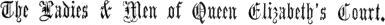

| Full Table of Contents (separate file) | |
| Early English Text Society | |
| Original Series (nos. 1-127, 1864-1904) | |
| Extra Series (nos. I-XCI, 1867-1904) | |
| Texts Preparing | |
| Title Page | |
| Forewords, or General Preface | i |
| Education in Early England | iv |
| lxiii | |
| lxviii | |
| lxix | |
|
The Boke of Nurture (separate file) |
|
|
Shorter Selections (separate file) |
|
|
General Index (separate file) |
|
|
Collected Sidenotes (separate file) |
|
Committee of Management:
Director: DR. FREDERICK J. FURNIVALL, M.A.
Treasurer: HENRY B. WHEATLEY, Esq.
Hon. Sec.: W. A. DALZIEL, Esq., 67 VICTORIA ROAD, FINSBURY PARK, N.
|
Hon. Secs. for America: |
North & East: Prof. G. L.
Kittredge, South & West: Prof. J. W.
Bright, |
|
LORD ALDENHAM, M.A. ISRAEL GOLLANCZ, M.A. SIDNEY L. LEE, M.A., D.Lit. Rev. Prof. J. E. B. MAYOR, M.A. Dr. J. A. H. MURRAY, M.A. |
Prof. NAPIER, M.A., Ph.D. EDWARD B. PEACOCK, Esq. ALFRED W. POLLARD, M.A. Rev. Prof. WALTER W. SKEAT, Litt.D. Dr. HENRY SWEET, M.A. |
|
Dr. W. ALDIS WRIGHT, M.A. |
|
|
(With power to add Workers to their number.) |
|
Bankers: THE UNION BANK OF LONDON, 2, PRINCES STREET, E.C.
The Early English Text Society was started by Dr. Furnivall in 1864 for the purpose of bringing the mass of Old English Literature within the reach of the ordinary student, and of wiping away the reproach under which England had long rested, of having felt little interest in the monuments of her early language and life.
On the starting of the Society, so many Texts of importance were at once taken in hand by its Editors, that it became necessary in 1867 to open, besides the Original Series with which the Society began, an Extra Series which should be mainly devoted to fresh editions of all that is most valuable in printed MSS. and Caxton’s and other black-letter books, though first editions of MSS. will not be excluded when the convenience of issuing them demands their inclusion in the Extra Series.
During the thirty-nine years of the Society’s existence, it has produced, with whatever shortcomings, an amount of good solid work for which all students of our Language, and some of our Literature, must be grateful, and which has rendered possible the beginnings (at least) of proper Histories and Dictionaries of that Language and Literature, and has illustrated the thoughts, the life, the manners and customs of our forefathers and foremothers.
But the Society’s experience has shown the very small number of those inheritors of the speech of Cynewulf, Chaucer, and Shakspere, who care two guineas a year for the records of that speech: ‘Let the dead past bury its dead’ is still the cry of Great Britain and her Colonies, and of America, in the matter of language. The Society has never had money enough to produce the Texts that could easily have been got ready for it; and many Editors are now anxious to send to press the work they have prepared. The necessity has therefore arisen for trying to increase the number of the Society’s members, and to induce its well-wishers to help it by gifts of money, either in one sum or by instalments. The Committee trust that every Member will bring before his or her friends and acquaintances the Society’s claims for liberal support. Until all Early English MSS. are printed, no proper History of our Language or Social Life is possible.
The Subscription to the Society, which constitutes membership, is £1 1s. a year for the Original Series, and £1 1s. for the Extra Series, due in advance on the 1st of January, and should be paid by Cheque, Postal Order, or Money-Order, crost ‘Union Bank of London,’ to the Hon. Secretary, W. A. Dalziel, Esq., 67, Victoria Rd., Finsbury Park, London, N. Members who want their Texts posted to them, must add to their prepaid Subscriptions 1s. for the Original Series, and 1s. for the Extra Series, yearly. The Society’s Texts are also sold separately at the prices put after them in the Lists; but Members can get back-Texts at one-third less than the List-prices by sending the cash for them in advance to the Hon. Secretary.
3"> The Society intends to complete, as soon as its funds will allow, the Reprints of its out-of-print Texts of the year 1866, and also of nos. 20, 26 and 33. Prof. Skeat has finisht Partenay; Dr. McKnight of Ohio King Horn and Floris and Blancheflour; and Dr. Furnivall his Political, Religious and Love Poems and Myrc’s Duties of a Parish Priest. Dr. Otto Glauning has undertaken Seinte Marherete; and Dr. Furnivall has Hali Meidenhad in type. As the cost of these Reprints, if they were not needed, would have been devoted to fresh Texts, the Reprints will be sent to all Members in lieu of such Texts. Though called ‘Reprints,’ these books are new editions, generally with valuable additions, a fact not noticed by a few careless receivers of them, who have complained that they already had the volumes. As the Society’s copies of the Facsimile of the Epinal MS. issued as an Extra Volume in 1883 are exhausted, Mr. J. H. Hessels, M.A., of St. John’s Coll., Cambridge, has kindly undertaken an edition of the MS. for the Society. This will be substituted for the Facsimile as an 1883 book, but will be also issued to all the present Members.
Original and Extra Series Books 1903-1906.
July 1904. The Original-Series Texts for 1903 were: No. 122, Part II of The Laud MS. Troy-Book, edited from the unique Laud MS. 595 by Dr. J. E. Wülting; and No. 123, Part II of Robert of Brunne’s Handlyng Synne, and its French original, ed. by Dr. F. J. Furnivall.
The Extra-Series Texts for 1903 are to be: No. LXXXVIII, Le Morte Arthur, in 8-line stanzas, re-edited from the unique MS. Harl. 2252, by Prof. J. Douglas Bruce (issued), No. LXXXIX, Lydgate’s Reason and Sensuality, edited by Dr. Ernst Sieper, Part II, and English Fragments from Latin Medieval Service-Books, edited, and given to the Society, by Mr. Henry Littlehales.
The Original-Series Texts for 1904 will be No. 124, t. Hen. V, Twenty-six Political and other Poems from the Digby MS. 102, &c, edited by Dr. J. Kail, and No. 125, Part I of the Medieval Records of a London City Church (St. Mary-at-Hill), A.D. 1420-1559, copied and edited by Mr. Henry Littlehales from the Church Records in the Guildhall, the cost of the setting and corrections of the text being generously borne by its Editor. This book will show the income and outlay of the church; the drink provided for its Palm-Sunday players, its officers’ excursions into Kent and Essex, its dealing with the Plague, the disposal of its goods at the Reformation, &c., &c., and will help our members to realize the church-life of its time. The third Text will be Part I of An Alphabet of Tales, a very interesting collection, englisht in the Northern Dialect, about 1440, from the Latin Alphabetum Narrationum by Etienne de Bésançon, and edited by Mrs. M. M. Banks from the unique MS. in the King’s Library in the British Museum; the above-named three texts are now ready for issue. Those for 1905 and 1906 will probably be chosen from Part II of the Exeter Book—Anglo-Saxon Poems from the unique MS. in Exeter Cathedral—re-edited by Israel Gollancz, M.A.; Part II of Prof. Dr. Holthausen’s Vices and Virtues; Part II of Jacob’s Well, edited by Dr. Brandeis; the Alliterative Siege of Jerusalem, edited by the late Prof. Dr. E. Kölbing and Prof. Dr. Kaluza; an Introduction and Glossary to the Minor Poems of the Vernon MS. by H. Hartley, M.A.; Alain Chartier’s Quadrilogue, edited from the unique MS. Univ. Coll. Oxford MS. No. 85, by Mr. J. W. H. Atkins of Owen’s College; a Northern Verse Chronicle of England to 1327 A.D., in 42,000 lines, about 1420 A.D., edited by M. L. Perrin, B.A.; Prof. Bruce’s Introduction to The English Conquest of Ireland, Part II; and Dr. Furnivall’s edition of the Lichfield Gilds, which is all printed, and waits only for the Introduction, that Prof. E. C. K. Gonner has kindly undertaken to write for the book. Canon Wordsworth of Marlborough has given the Society a copy of the Leofric Canonical Rule, Latin and Anglo-Saxon, Parker MS. 191, C.C.C. Cambridge, and Prof. Napier will edit it, with a fragment of the englisht Capitula of Bp. Theodulf. The Coventry Leet Book is being copied for the Society by Miss M. Dormer Harris—helpt by a contribution from the Common Council of the City,—and will be publisht by the Society (Miss Harris editing), as its contribution to our knowledge of the provincial city life of the 15th century.
Dr. Brie of Berlin has undertaken to edit the prose Brut or Chronicle of Britain attributed to Sir John Mandeville, and printed by Caxton. He has already examined more than 100 English MSS. and several French ones, to get the best text, and find out its source.
The Extra-Series Texts for 1904 will be chosen from Lydgate’s DeGuilleville’s Pilgrimage of the Life of Man, Part III, edited by Miss Locock; Dr. M. Konrath’s re-edition of William of Shorcham’s Poems, Part II; Dr. E. A. Kock’s edition of Lovelich’s Merlin from the unique MS. in Corpus Christi Coll., Cambridge; the Macro Plays, edited from Mr. Gurney’s MS. by Dr. Furnivall and A. W. Pollard, M.A.; Prof. Erdmann’s re-edition of Lydgate’s Siege of Thebes (issued also by the Chaucer Society); Miss Rickert’s re-edition of the Romance of Emare; Prof. I. Gollanez’s re-edition of two Alliterative Poems, Winner and Waster, &c, ab. 1360, lately issued for the Roxburghe Club; Dr. Norman Moore’s re-edition of The Book of the Foundation of St. Bartholomew’s Hospital, London, from the unique MS. ab. 1425, which gives an account of the Founder, Rahere, and the miraculous cures wrought at the Hospital; The Craft of Nombrynge, with other of the earliest englisht Treatises on Arithmetic, edited by R. Steele, B.A.; and Miss Warren’s two-text edition of The Dance of Death from the Ellesmere and other MSS.
These Extra-Series Texts ought to be completed by their Editors: the Second Part of the prose Romance of Melusine—Introduction, with ten facsimiles of the best woodblocks of the old foreign black-letter editions, Glossary, &c, by A. K. Donald, B.A. (now in India); 4 and a new edition of the famous Early-English Dictionary (English and Latin), Promptorium Parvulorum, from the Winchester MS., ab. 1440 A.D.: in this, the Editor, the Rev. A. L. Mayhew, M.A., will follow and print his MS. not only in its arrangement of nouns first, and verbs second, under every letter of the Alphabet, but also in its giving of the flexions of the words. The Society’s edition will thus be the first modern one that really represents its original, a point on which Mr. Mayhew’s insistence will meet with the sympathy of all our Members.
Texts preparing: The Texts for 1906, 1907 &c.
The Texts for the Extra Series in 1906 and 1907 will be chosen from The Three Kings’ Sons, Part II, the Introduction &c. by Prof. Dr. Leon Kellner; Part II of The Chester Plays, re-edited from the MSS., with a full collation of the formerly missing Devonshire MS., by Mr. G. England and Dr. Matthews; the Parallel-Text of the only two MSS. of the Owl and Nightingale, edited by Mr. G. F. H. Sykes (at press); Prof. Jespersen’s editions of John Hart’s Orthographie (MS. 1551 A.D.; blackletter 1569), and Method to teach Reading, 1570; Deguilleville’s Pilgrimage of the Sowle, in English prose, edited by Prof. Dr. L. Kellner. (For the three prose versions of The Pilgrimage of the Life of Man—two English, one French—an Editor is wanted.) Members are askt to realise the fact that the Society has now 50 years’ work on its Lists,—at its present rate of production,—and that there is from 100 to 200 more years’ work to come after that. The year 2000 will not see finisht all the Texts that the Society ought to print. The need of more Members and money is pressing. Offers of help from willing Editors have continually to be declined because the Society has no funds to print their Texts.
An urgent appeal is hereby made to Members to increase the list of Subscribers to the E. E. Text Society. It is nothing less than a scandal that the Hellenic Society should have nearly 1000 members, while the Early English Text Society has not 300!
Deguilleville.
Before his death in 1895, Mr. G. N. Currie was preparing an edition of the 15th and 16th century Prose Versions of Guillaume de Deguilleville’s Pilgrimage of the Life of Man, with the French prose version by Jean Gallopes, from Lord Aldenham’s MS., he having generously promist to pay the extra cost of printing the French text, and engraving one or two of the illuminations in his MS. But Mr. Currie, when on his deathbed, charged a friend to burn all his MSS. which lay in a corner of his room, and unluckily all the E. E. T. S.’s copies of the Deguilleville prose versions were with them, and were burnt with them, so that the Society will be put to the cost of fresh copies, Mr. Currie having died in debt.
Guillaume de Deguilleville, monk of the Cistercian abbey of Chaalis, in the diocese of Senlis, wrote his first verse Pèlerinaige de l’Homme in 1330-1 when he was 36.1 Twenty-five (or six) years after, in 1355, he revised his poem, and issued a second version of it,2 a revision of which was printed ab. 1500. Of the prose representative of the first version, 1330-1, a prose Englishing, about 1430 A.D., was edited by Mr. Aldis Wright for the Roxburghe Club in 1869, from MS. Ff. 5. 30 in the Cambridge University Library. Other copies of this prose English are in the Hunterian Museum, Glasgow, Q. 2. 25; Sion College, London; and the Laud Collection in the Bodleian, no. 740.3 A copy in the Northern dialect is MS. G. 21, in St. John’s Coll., Cambridge, and this is the MS. which will be edited for the E. E. Text Society. The Laud MS. 740 was somewhat condenst and modernised, in the 17th century, into MS. Ff. 6. 30, in the Cambridge University Library:4 “The Pilgrime or the Pilgrimage of Man in this World,” copied by Will. Baspoole, whose copy “was verbatim written by Walter Parker, 1645, and from thence transcribed by G. G. 1649; and from thence by W. A. 1655.” This last copy may have been read by, or its story reported to, Bunyan, and may have been the groundwork of his Pilgrim’s Progress. It will be edited for the E. E. T. Soc., its text running under the earlier English, as in Mr. Herrtage’s edition of the Gesta Romanorum for the Society. In February 1464,5 Jean Gallopes—a clerk of Angers, afterwards chaplain to John, Duke of Bedford, Regent of France—turned Deguilleville’s first verse Pèlerinaige into a prose Pèlerinage de la vie humaine.6 By the kindness of Lord Aldenham, as above mentiond, Gallopes’s French text will be printed opposite the early prose northern Englishing in the Society’s edition.
The Second Version of Deguilleville’s Pèlerinaige de l’Homme, A.D. 1355 or -6, was englisht in verse by Lydgate in 1426. Of Lydgate’s poem, the larger part is in the Cotton MS. Vitellius C. xiii (leaves 2-308). This MS. leaves out Chaucer’s englishing of Deguilleville’s ABC or Prayer to the Virgin, of which the successive stanzas start with A, B, C, and run all thro’ the alphabet; and it has 2 main gaps, besides many small ones from the tops of leaves being burnt in the Cotton fire. All these gaps (save the A B C) have been fild up from the Stowe MS. 952 (which old John Stowe completed) and from the end of the other imperfect MS. Cotton, Tiberius A vii. Thanks to the diligence of the old Elizabethan tailor and 5 manuscript-lover, a complete text of Lydgate’s poem can be given, though that of an inserted theological prose treatise is incomplete. The British Museum French MSS. (Harleian 4399,7 and Additional 22,9378 and 25,5949) are all of the First Version.
Besides his first Pèlerinaige de l’homme in its two versions, Deguilleville wrote a second, “de l’ame separee du corps,” and a third, “de nostre seigneur Iesus.” Of the second, a prose Englishing of 1413, The Pilgrimage of the Sowle (with poems by Hoccleve, already printed for the Society with that author’s Regement of Princes), exists in the Egerton MS. 615,10 at Hatfield, Cambridge (Univ. Kk. 1. 7, and Caius), Oxford (Univ. Coll. and Corpus), and in Caxton’s edition of 1483. This version has ‘somewhat of addicions’ as Caxton says, and some shortenings too, as the maker of both, the first translater, tells us in the MSS. Caxton leaves out the earlier englisher’s interesting Epilog in the Egerton MS. This prose englishing of the Sowle will be edited for the Society by Prof. Dr. Leon Kellner after that of the Man is finisht, and will have Gallopes’s French opposite it, from Lord Aldenham’s MS., as his gift to the Society. Of the Pilgrimage of Jesus, no englishing is known.
Anglo-Saxon Psalters.
As to the MS. Anglo-Saxon Psalters, Dr. Hy. Sweet has edited the oldest MS., the Vespasian, in his Oldest English Texts for the Society, and Mr. Harsley has edited the latest, c. 1150, Eadwine’s Canterbury Psalter. The other MSS., except the Paris one, being interlinear versions,—some of the Roman-Latin redaction, and some of the Gallican,—Prof. Logeman has prepared for press, a Parallel-Text edition of the first twelve Psalms, to start the complete work. He will do his best to get the Paris Psalter—tho’ it is not an interlinear one—into this collective edition; but the additional matter, especially in the Verse-Psalms, is very difficult to manage. If the Paris text cannot be parallelised, it will form a separate volume. The Early English Psalters are all independent versions, and will follow separately in due course.
More Money wanted.
Through the good offices of the Examiners, some of the books for the Early-English Examinations of the University of London will be chosen from the Society’s publications, the Committee having undertaken to supply such books to students at a large reduction in price. The net profits from these sales will be applied to the Society’s Reprints.
Members are reminded that fresh Subscribers are always wanted, and that the Committee can at anytime, on short notice, send to press an additional Thousand Pounds’ worth of work.
Saints’ Lives.
The Subscribers to the Original Series must be prepared for the issue of the whole of the Early English Lives of Saints, sooner or later. The Society cannot leave out any of them, even though some are dull. The Sinners would doubtless be much more interesting. But in many Saints’ Lives will be found valuable incidental details of our forefathers’ social state, and all are worthful for the history of our language. The Lives may be lookt on as the religious romances or story-books of their period.
The Standard Collection of Saints’ Lives in the Corpus and Ashmole MSS., the Harleian MS. 2277, &c. will repeat the Laud set, our No. 87, with additions, and in right order. (The foundation MS. (Laud 108) had to be printed first, to prevent quite unwieldy collations.) The Supplementary Lives from the Vernon and other MSS. will form one or two separate volumes.
Besides the Saints’ Lives, Trevisa’s englishing of Bartholomæus de Proprietatibus Rerum, the mediæval Cyclopædia of Science, &c, will be the Society’s next big undertaking. Dr. R. von Fleischhacker will edit it. Prof. Napier of Oxford, wishing to have the whole of our MS. Anglo-Saxon in type, and accessible to students, will edit for the Society all the unprinted and other Anglo-Saxon Homilies which are not included in Thorpe’s edition of Ælfric’s prose,11 Dr. Morris’s of the Blickling Homilies, and Prof. Skeat’s of Ælfric’s Metrical Homilies. The late Prof. Kölbing left complete his text, for the Society, of the Ancren Riwle, from the best MS., with collations of the other four, and this will be edited for the Society by Dr. Thümmler. Mr. Harvey means to prepare an edition of the three MSS. of the Earliest English Metrical Psalter, one of which was edited by the late Mr. Stevenson for the Surtees Society.
Members of the Society will learn with pleasure that its example has been followed, not only by the Old French Text Society which has done such admirable work under its founders Profs. Paul Meyer and Gaston Paris, but also by the Early Russian Text Society, which was set on foot in 1877, and has since issued many excellent editions of old MS. Chronicles, &c.
Members will also note with pleasure the annexation of large tracts of our Early English territory by the important German contingent, the late Professors Zupitza and Kölbing, the living Hausknecht, Einenkel, Haenisch, Kaluza, Hupe, Adam, Holthausen, Schick, Herzfeld, Brandeis, Sieper, Konrath, Wülfing, &c. Scandinavia has also sent us Prof. Erdmann and Dr. E. A. Kock; Holland, Prof. H. Logeman, who is now working in Belgium; France, Prof. 6 Paul Meyer—with Gaston Paris as adviser (alas, now dead);—Italy, Prof. Lattanzi; Austria, Dr. von Fleischhacker; while America is represented by the late Prof. Child, by Dr. Mary Noyes Colvin, Miss Rickert, Profs. Mead, McKnight, Triggs, Perrin, &c. The sympathy, the ready help, which the Society’s work has cald forth from the Continent and the United States, have been among the pleasantest experiences of the Society’s life, a real aid and cheer amid all troubles and discouragements. All our Members are grateful for it, and recognise that the bond their work has woven between them and the lovers of language and antiquity across the seas is one of the most welcome results of the Society’s efforts.
1. Early English Alliterative Poems, ab. 1360 A.D., ed. Rev. Dr. R. Morris. 16s. |
1864 |
2. Arthur, ab. 1440, ed. F. J. Furnivall, M.A. 4s. |
„ |
3. Lauder on the Dewtie of Kyngis, &c., 1556, ed. F. Hall, D.C.L. 4s. |
„ |
4. Sir Gawayne and the Green Knight, ab. 1360, ed. Rev. Dr. R. Morris. 10s. |
„ |
5. Hume’s Orthographie and Congruitie of the Britan Tongue, ab. 1617, ed. H. B. Wheatley. 4s. |
1865 |
6. Lancelot of the Laik, ab. 1500, ed. Rev. W. W. Skeat. 8s. |
„ |
7. Genesis & Exodus, ab. 1250, ed. Rev. Dr. R. Morris. 8s. |
„ |
8. Morte Arthure, ab. 1440, ed. E. Brock. 7s. |
„ |
9. Thynne on Speght’s ed. of Chaucer, A.D. 1599, ed. Dr. G. Kingsley and Dr. F. J. Furnivall. 10s. |
„ |
10. Merlin, ab. 1440, Part I., ed. H. B. Wheatley. 2s. 6d. |
„ |
11. Lyndesay’s Monarche, &c., 1552, Part I., ed. J. Small, M.A. 3s. |
„ |
12. Wright’s Chaste Wife, ab. 1462, ed. F. J. Furnivall, M.A. 1s. |
„ |
13. Seinte Marherete, 1200-1330, ed. Rev. O. Cockayne; re-edited by Dr. Otto Glauning. [Out of print. |
1866 |
14. Kyng Horn, Floris and Blancheflour, &c., ed. Rev. J. R. Lumby, B.D., re-ed. Dr. G. H. McKnight. 5s. |
„ |
15. Political, Religious, and Love Poems, ed. F. J. Furnivall. 7s. 6d. |
„ |
16. The Book of Quinte Essence, ab. 1460-70, ed. F. J. Furnivall. 1s. |
„ |
17. Parallel Extracts from 45 MSS. of Piers the Plowman, ed. Rev. W. W. Skeat. 1s. |
„ |
18. Hali Meidenhad, ab. 1200, ed. Rev. O. Cockayne, re-edited by Dr. F. J. Furnivall. [At Press. |
„ |
19. Lyndesay’s Monarche, &c., Part II., ed. J. Small, M.A. 3s. 6d. |
„ |
20. Hampole’s English Prose Treatises, ed. Rev. G. G. Perry. 1s. [Out of print. |
„ |
21. Merlin, Part II., ed. H. B. Wheatley. 4s. |
„ |
22. Partenay or Lusignen, ed. Rev. W. W. Skeat. |
„ |
23. Dan Michel’s Ayenbite of Inwyt, 1340, ed. Rev. Dr. R. Morris. 10s. 6d. |
„ |
24. Hymns to the Virgin and Christ; the Parliament of Devils, &c., ab. 1430, ed. F. J. Furnivall. |
1867 |
25. The Stacions of Rome, the Pilgrims’ Sea-voyage, with Clene Maydenhod, ed. F. J. Furnivall. 1s. |
„ |
26. Religious Pieces in Prose and Verse, from R. Thornton’s MS., ed. Rev. G. G. Perry. 2s. [Out of print. |
„ |
27. Levins’s Manipulus Vocabulorum, a ryming Dictionary, 1570, ed. H. B. Wheatley. 12s. |
„ |
28. William’s Vision of Piers the Plowman, 1362 A.D.; Text A, Part I., ed. Rev. W. W. Skeat. 6s. |
„ |
29. Old English Homilies (ab. 1220-30 A.D.). Series I, Part I. Edited by Rev. Dr. R. Morris. 7s. |
„ |
30. Pierce the Ploughmans Crede, ed. Rev. W. W. Skeat. 2s. |
„ |
31. Myrc’s Duties of a Parish Priest, in Verse, ab. 1420 A.D., ed. E. Peacock. 4s. |
1868 |
32. Early English Meals and Manners: the Boke of Norture of John Russell, the Bokes of Keruynge, Curtasye, and Demeanor, the Babees Book, Urbanitatis, &c., ed. F. J. Furnivall. 12s. |
„ |
33. The Knight de la Tour Landry, ab. 1440 A.D. A Book for Daughters, ed. T. Wright, M.A. [Out of print. |
|
34. Old English Homilies (before 1300 A.D.). Series I, Part II., ed. R. Morris, LL.D. 8s. |
„ |
35. Lyndesay’s Works, Part III.: The Historie and Testament of Squyer Meldrum, ed. F. Hall. 2s. |
„ |
36. Merlin, Part III. Ed. H. B. Wheatley. On Arthurian Localities, by J. S. Stuart Glennie. 12s. |
1869 |
37. Sir David Lyndesay’s Works, Part IV., Ane Satyre of the Three Estaits. ed. F. Hall, D.C.L. 4s. |
„ |
38. William’s Vision of Piers the Plowman, Part II. Text B. Ed. Rev. W. W. Skeat, M.A. 10s. 6d. |
„ |
39. Alliterative Romance of the Destruction of Troy. ed. D. Donaldson & G. A. Panton. Pt. I. 10s. 6d. |
„ |
40. English Gilds, their Statutes and Customs, 1389 A.D. Edit. Toulmin Smith and Lucy T. Smith, with an Essay on Gilds and Trades-Unions, by Dr. L. Brentano. 21s. |
1870 |
41. William Lauder’s Minor Poems. Ed. F. J. Furnivall. 3s. |
„ |
42. Bernardus De Cura Rei Famuliaris, Early Scottish Prophecies, &c. Ed. J. R. Lumby, M.A. 2s. |
„ |
43. Ratis Raving, and other Moral and Religious Pieces. Ed. J. R. Lumby, M.A. |
„ |
44. The Alliterative Romance of Joseph of Arimathie, or The Holy Grail: from the Vernon MS.; with W. de Worde’s and Pynson’s Lives of Joseph: ed. Rev. W. W. Skeat, M.A. 5s. |
1871 |
45. King Alfred’s West-Saxon Version of Gregory’s Pastoral Care, edited from 2 MSS., with an English translation, by Henry Sweet, Esq., B.A., Balliol College, Oxford. Part I. 10s. |
„ |
46. Legends of the Holy Rood, Symbols of the Passion and Cross Poems, ed. Rev. Dr. R. Morris. 10s. |
„ |
47. Sir David Lyndesay’s Works, Part V., ed. Dr. J. A. H. Murray. 3s. |
„ |
48. The Times’ Whistle, and other Poems, by R. C., 1616; ed. by J. M. Cowper, Esq. 6s. |
„ |
49. An Old English Miscellany, containing a Bestiary, Kentish Sermons, Proverbs of Alfred, and Religious Poems of the 13th cent., ed. from the MSS. by the Rev. R. Morris, LL.D. 10s. |
1872 |
50. King Alfred’s West-Saxon Version of Gregory’s Pastoral Care, ed. H. Sweet, M.A. Part II. 10s. |
„ |
51. The Life of St Juliana, 2 versions, A.D. 1230, with translations; ed. T. O. Cockayne & E. Brock. 2s. |
„ |
|
7
52. Palladius on Husbondrie, englisht (ab. 1420 A.D.), ed. Rev. Barton Lodge, M.A. Part I. 10s. |
1872 |
53. Old-English Homilies, Series II., and three Hymns to the Virgin and God, 13th-century, with the music to two of them, in old and modern notation; ed. Rev. R. Morris, LL.D. 8s. |
1873 |
54. The Vision of Piers Plowman, Text C: Richard the Redeles (by William, the author of the Vision) and The Crowned King; Part III., ed. Rev. W. W. Skeat, M.A. 18s. |
„ |
55. Generydes, a Romance, ab. 1440 A.D., ed. W. Aldis Wright, M.A. Part I. 3s. |
„ |
56. The Gest Hystoriale of the Destruction of Troy, in alliterative verse; ed. by D. Donaldson, Esq., and the late Rev. G. A. Panton. Part II. 10s. 6d. |
1874 |
57. The Early English Version of the “Cursor Mundi”; in four Texts, edited by the Rev. R. Morris, M.A., LL.D. Part I, with 2 photolithographic facsimiles. 10s. 6d. |
„ |
58. The Blickling Homilies, 971 A.D., ed. Rev. R. Morris, LL.D. Part I. 8s. |
„ |
59. The “Cursor Mundi,” in four Texts, ed. Rev. Dr. B. Morris. Part II. 15s. |
1875 |
60. Meditacyuns on the Soper of our Lorde (by Robert of Brunne), edited by J. M. Cowper. 2s. 6d. |
„ |
61. The Romance and Prophecies of Thomas of Eroeldoune, from 5 MSS.; ed. Dr. J. A. H. Murray. 10s. 6d. |
„ |
62. The “Cursor Mundi,” in four Texts, ed. Rev. Dr. B. Morris. Part III. 15s. |
1876 |
63. The Blickling Homilies, 971 A.D., ed. Rev. Dr. R. Morris. Part II. 7s. |
„ |
64. Francis Thynne’s Embleames and Epigrams, A.D. 1600, ed. F. J. Furnivall. 7s. |
„ |
65. Be Domes Dæge (Bede’s De Die Judicii), &c., ed. J. R. Lumby, B.D. 2s. |
„ |
66. The “Cursor Mundi,” in four Texts, ed. Rev. Dr. R. Morris. Part IV., with 2 autotypes. 10s. |
1877 |
67. Notes on Piers Plowman, by the Rev. W. W. Skeat, M.A. Part I. 21s. |
„ |
68. The “Cursor Mundi,” in 4 Texts, ed. Rev. Dr. R. Morris Part V. 25s. |
1878 |
69. Adam Davie’s 5 Dreams about Edward II., &c., ed. F. J. Furnivall, M.A. 5s. |
„ |
70. Generydes, a Romance, ed. W. Aldis Wright, M.A. Part II. 4s. |
„ |
71. The Lay Folks Mass-Book, four texts, ed. Rev. Canon Simmons. 25s. |
1879 |
72. Palladius on Husbondrie, englisht (ab. 1420 A.D.). Part II. Ed. S. J. Herrtage, B.A. 15s. |
„ |
73. The Blickling Homilies, 971 A.D., ed. Rev. Dr. R. Morris. Part III. 10s. |
1880 |
74. English Works of Wyclif, hitherto unprinted, ed. F. D. Matthew, Esq. 20s. |
„ |
75. Catholicon Anglicum, an early English Dictionary, from Lord Monson’s MS. A.D. 1483, ed., with Introduction & Notes, by S. J. Herrtage, B.A.; and with a Preface by H. B. Wheatley. 20s. |
1881 |
76. Aelfric’s Metrical Lives of Saints, in MS. Cott. Jul. E 7., ed. Rev. Prof. Skeat, M.A. Part I. 10s. |
„ |
77. Beowulf, the unique MS. autotyped and transliterated, edited by Prof. Zupitza, Ph.D. 25s. |
1882 |
78. The Fifty Earliest English Wills, in the Court of Probate, 1387-1439, ed. by F. J. Furnivall, M.A. 7s. |
„ |
79. King Alfred’s Orosius, from Lord Tollemache’s 9th century MS., Part I, ed. H. Sweet, M.A. 13s. |
1883 |
79b. The Epinal Glossary, 8th cent., ed. J. H. Hessels, M.A. 15s. [Preparing. |
„ |
80. The Early-English Life of St. Katherine and its Latin Original, ed. Dr. Einenkel. 12s. |
1884 |
81. Piers Plowman: Notes, Glossary, &c. Part IV, completing the work, ed. Rev. Prof. Skeat, M.A. 18s. |
„ |
82. Aelfric’s Metrical Lives of Saints, MS. Cott. Jul. E 7., ed. Rev. Prof. Skeat, M.A., LL.D. Part II. 12s. |
1885 |
83. The Oldest English Texts, Charters, &c., ed. H. Sweet, M.A. 20s. |
„ |
84. Additional Analogs to ‘The Wright’s Chaste Wife,’ No. 12, by W. A. Clouston. 1s. |
1886 |
85. The Three Kings of Cologne. 2 English Texts, and 1 Latin, ed. Dr. C. Horstmann. 17s. |
„ |
86. Prose Lives of Women Saints, ab. 1610 A.D., ed. from the unique MS. by Dr. C. Horstmann. 12s. |
„ |
87. Early English Verse Lives of Saints (earliest version), Laud MS. 108, ed. Dr. C. Horstmann. 20s. |
1887 |
88. Hy. Bradshaw’s life of St. Werburghe (Pynson, 1521), ed. Dr. C. Horstmann. 10s. |
„ |
89. Vices and Virtues, from the unique MS., ab. 1200 A.D., ed. Dr. F. Holthausen. Part I. 8s. |
1888 |
90. Anglo-Saxon and Latin Rule of St. Benet, interlinear Glosses, ed. Dr. H. Logeman. 12s. |
„ |
91. Two Fifteenth-Century Cookery-Books, ab. 1430-1450, edited by Mr. T. Austin. 10s. |
„ |
92. Eadwine’s Canterbury Psalter, from the Trin. Cambr. MS., ab. 1150 A.D., ed. F. Harsley, B. Pt. I. 12s. |
1889 |
93. Defensor’s Liber Scintillarum, edited from the MSS. by Ernest Rhodes, B.A. 12s. |
„ |
94. Aelfric’s Metrical Lives of Saints, MS. Cott. Jul. E 7, Part III., ed. Prof. Skeat, Litt.D., LL.D. 12s. |
1890 |
95. The Old-English version of Bede’s Ecclesiastical History, re-ed. by Dr. Thomas Miller. Part I, § 1. 18s. |
„ |
96. The Old-English version of Bede’s Ecclesiastical History, re-ed. by Dr. Thomas Miller. Pt. I, § 2. 15s. |
1891 |
97. The Earliest English Prose Psalter, edited from its 2 MSS. by Dr. K. D. Buelbring. Part I. 15s. |
„ |
98. Minor Poems of the Vernon MS., Part I., ed. Dr. C. Horstmann. 20s. |
1892 |
99. Cursor Mundi. Part VI. Preface, Notes, and Glossary, ed. Rev. Dr. R. Morris. 10s. |
„ |
100. Capgrave’s Life of St. Katharine, ed. Dr. C. Horstmann, with Forewords by Dr. Furnivall. 20s. |
1893 |
101. Cursor Mundi. Part VII. Essay on the MSS., their Dialects, &c., by Dr. H. Hupe. 10s. |
„ |
102. Lanfranc’s Cirurgie, ab. 1400 A.D., ed. Dr. R. von Fleischhacker. Part I. 20s. |
1894 |
103. The Legend of the Cross, from a 12th century MS., &c., ed. Prof. A. S. Napier, M.A., Ph.D. 7s. 6d. |
„ |
104. The Exeter Book (Anglo-Saxon Poems), re-edited from the unique MS. by I. Gollancz, M.A. Part I. 20s. |
1895 |
105. The Prymer or Lay-Folks’ Prayer-Book, Camb. Univ. MS., ab. 1420, ed. Henry Littlehales. Part I. 10s. |
„ |
106. R. Misyn’s Fire of Love and Mending of Life (Hampole), 1434, 1435, ed. Rev. R. Harvey, M.A. 15s. |
1896 |
107. The English Conquest of Ireland, A.D. 1166-1185, 2 Texts, 1425, 1440, Pt. I., ed. Dr. Furnivall. 15s. |
„ |
108. Child-Marriages and Divorces, Trothplights, &c. Chester Depositions, 1561-6, ed. Dr. Furnivall. 15s. |
1897 |
109. The Prymer or Lay-Folks’ Prayer-Book, ab. 1420, ed. Henry Littlehales. Part II. 10s. |
„ |
110. The Old-English Version of Bede’s Ecclesiastical History, ed. Dr. T. Miller. Part II, § 1. 15s. |
1898 |
111. The Old-English Version of Bede’s Ecclesiastical History, ed. Dr. T. Miller. Part II, § 2. 15s. |
„ |
112. Merlin, Part IV: Outlines of the Legend of Merlin, by Prof. W. E. Mead. Ph.D. 15s. |
1899 |
113. Queen Elizabeth’s Englishings of Boethius, Plutarch &c. &c., ed. Miss C. Pemberton. 15s. |
„ |
|
8
114. Aelfric’s Metrical lives of Saints, Part IV and last, ed. Prof. Skeat, Litt.D., LL.D. 10s. |
1900 |
115. Jacob’s Well, edited from the unique Salisbury Cathedral MS. by Dr. A. Brandeis. Part I. 10s. |
„ |
116. An Old-English Martyrology, re-edited by Dr. G. Herzfeld. 10s. |
„ |
117. Minor Poems of the Vernon MS., edited by Dr. F. J. Furnivall. Part II. 15s. |
1901 |
118. The Lay Folks’ Catechism, ed. by Canon Simmons and Rev. H. E. Nolloth, M.A. 5s. |
„ |
119. Robert of Brunne’s Handlyng Synne (1303), and its French original, re-ed. by Dr. Furnivall. Pt. I. 10s. |
„ |
120. The Rule of St. Benet, in Northern Prose and Verse, & Caxton’s Summary, ed. Dr. E. A. Kock. 15s. |
1902 |
121. The Laud MS. Troy-Book, ed. from the unique Laud MS. 595, by Dr. J. E. Wülfing. Part I. 15s. |
„ |
122. The Laud MS. Troy-Book, ed. from the unique Laud MS. 595, by Dr. J. E. Wülfing. Part II. 20s. |
1903 |
123. Robert of Brunne’s Handlyng Synne (1303), and its French original, re-ed. by Dr. Furnivall. Pt. II. 10s. |
„ |
124. Twenty-six Political and other Poems from Digby MS. 102 &c, ed. by Dr. J. Kail. Part I. 10s. |
1904 |
125. Medieval Records of a London City Church, ed. Henry Littlehales. Pt. 1. 20s. |
„ |
126. An Alphabet of Tales, in Northern English from Latin, ed. Mrs. M. M. Banks. Part I. 10s. |
„ |
127. |
1905 |
The Publications for 1867-1901 (one guinea each year) are:—
I. William of Palerne; or, William and the Werwolf. Re-edited by Rev. W. W. Skeat, M.A. 13s. |
1867 |
II. Early English Pronunciation with especial Reference to Shakspere and Chaucer, by A. J. Ellis, F.R.S. Part I. 10s. |
„ |
III. Caxton’s Book of Curtesye, in Three Versions. Ed. F. J. Furnivall. 5s. |
1868 |
IV. Havelok the Dane. Re-edited by the Rev. W. W. Skeat, M.A. 10s. |
„ |
V. Chaucer’s Boethius. Edited from the two best MSS. by Rev. Dr. R. Morris 12s. |
„ |
VI. Chevelere Assigne. Re-edited from the unique MS. by Lord Aldenham, M.A. 3s. |
„ |
VII. Early English Pronunciation, by A. J. Ellis, F.R.S. Part II. 10s. |
1869 |
VIII. Queene Elizabethes Achademy, &c. Ed. F. J. Furnivall. Essays on early Italian and German Books of Courtesy, by W. M. Rossetti and Dr. E. Oswald. 13s. |
„ |
IX. Awdeley’s Fraternitye of Vacabondes, Harmon’s Caveat, &c. ed. E. Viles & F. J. Furnivall. 7a. 6d. |
„ |
X. Andrew Boorde’s Introduction of Knowledge, 1547, Dyetary of Helth, 1542, Barnes in Defence of the Berde, 1542-3. Ed. F. J. Furnivall. 18s. |
1870 |
XI. Barbour’s Bruce, Part I. Ed. from MSS. and editions, by Rev. W. W. Skeat, M.A. 12s. |
„ |
XII. England in Henry VIII’s Time: a Dialogue between Cardinal Pole & Lupset, by Thom. Starkey, Chaplain to Henry VIII. Ed. J. M. Cowper. Part II. 12s. (Part I. is No. XXXII, 1878, 8s.) |
1871 |
XIII. A Supplicacyon of the Beggers, by Simon Fish, 1528-9 A.D., ed. F. J. Furnivall; with A Supplication to our Moste Soueraigne Lorde; A Supplication of the Poore Commons; and The Decaye of England by the Great Multitude of Sheep, ed. by J. M. Cowper, Esq. 6s. |
„ |
XIV. Early English Pronunciation, by A. J. Ellis, Esq., F.R.S. Part III. 10s. |
„ |
XV. Robert Crowley’s Thirty-One Epigrams, Voyce of the Last Trumpet, Way to Wealth, &c., A.D. 1550-1, edited by J. M. Cowper, Esq. 12s. |
1872 |
XVI. Chaucer’s Treatise on the Astrolabe. Ed. Rev. W. W. Skeat, M.A. 6s. |
„ |
XVII. The Complaynt of Scotlande, 1549 A.D., with 4 Tracts (1542-48), ed. Dr. Murray. Part I. 10s. |
„ |
XVIII. The Complaynt of Scotlande, 1549 A.D., ed. Dr. Murray. Part II. 8s. |
1873 |
XIX. Oure Ladyes Myroure, A.D. 1530, ed. Rev. J. H. Blunt, M.A. 24s. |
„ |
XX. Lovelich’s History of the Holy Grail (ab. 1450 A.D.), ed. F. J. Furnivall, M.A., Ph.D. Part I. 8s |
1874 |
XXI. Barbour’s Bruce, Part II., ed. Rev. W. W. Skeat, M.A. 4s. |
„ |
XXII. Henry Brinklow’s Complaynt of Roderyck Mors (ab. 1542): and The Lamentacion of a Christian against the Citie of London, made by Roderigo Mors, A.D. 1545. Ed. J. M. Cowper. 9s. |
„ |
XXIII. Early English Pronunciation, by A. J. Ellis, F.R.S. Part IV. 10s. |
„ |
XXIV. Lovelich’s History of the Holy Grail, ed. F. J. Furnivall, M.A., Ph.D. Part II. 10s. |
1875 |
XXV. Guy of Warwick, 15th-century Version, ed. Prof. Zupitza. Part I. 20s. |
„ |
XXVI. Guy of Warwick, 15th-century Version, ed. Prof. Zupitza. Part II. 14s. |
1876 |
XXVII. Bp. Fisher’s English Works (died 1535). ed. by Prof. J. E. B. Mayor. Part I, the Text. 16s. |
„ |
XXVIII. Lovelich’s Holy Grail, ed. F. J. Furnivall, M.A., Ph.D. Part III. 10s. |
1877 |
XXIX. Barbour’s Bruce. Part III., ed. Rev. W. W. Skeat, M.A. 21s. |
„ |
XXX. Lovelich’s Holy Grail, ed. F. J. Furnivall, M.A., Ph.D. Part IV. 15s. |
1878 |
XXXI. The Alliterative Romance of Alexander and Dindimus, ed. Rev. W. W. Skeat. 6s. |
„ |
XXXII. Starkey’s “England in Henry VIII’s time.” Pt. I. Starkey’s Life and Letters, ed. S. J. Herrtage. 8s. |
„ |
XXXIII. Gesta Romanorum (englisht ab. 1440), ed. S. J. Herrtage, B.A. 15s. |
1879 |
XXXIV. Charlemagne Romances:—1. Sir Ferumbras, from Ashm. MS. 33, ed. S. J. Herrtage. 15s. |
„ |
XXXV. Charlemagne Romances:—2. The Sege off Melayne, Sir Otuell, &c., ed. S. J. Herrtage. 12s. |
1880 |
XXXVI. Charlemagne Romances:—3. Lyf of Charles the Grete, Pt. I., ed. S. J. Herrtage. 16s. |
„ |
XXXVII. Charlemagne Romances:—4. Lyf of Charles the Grete, Pt. II., ed. S. J. Herrtage. 15s. |
1881 |
XXXVIII. Charlemagne Romances:—5. The Sowdone of Babylone, ed. Dr. Hausknecht. 15s. |
„ |
XXXIX. Charlemagne Romances:—6. Rauf Colyear, Roland, Otuel, &c., ed. S. J. Herrtage, B.A. 15s. |
1882 |
XL. Charlemagne Romances:—7. Huon of Burdeux, by Lord Berners, ed. S. L. Lee, B. Part I. 15s. |
„ |
XLI. Charlemagne Romances:—8. Huon of Burdeux, by Lord Berners, ed. S. L. Lee, B. Pt. II. 15s. |
1883 |
XLII. Guy of Warwick: 2 texts (Auchinleck MS. and Cains MS.), ed. Prof. Zupitza. Part I. 15s. |
„ |
XLIII. Charlemagne Romances:—9. Huon of Burdeux, by Lord Berners, ed. S. L. Lee, B. Pt. III. 15s. |
1884 |
|
9
XLIV. Charlemagne Romances:—10. The Four Sons of Aymon, ed. Miss Octavia Richardson. Pt. I. 15s. |
1884 |
XLV. Charlemagne Romances:—11. The Four Sons of Aymon, ed. Miss O. Richardson. Pt. II. 20s. |
1885 |
XLVI. Sir Bevis of Hamton, from the Auchinleck and other MSS., ed. Prof. E. Kölbing, Ph.D. Part I. 10s. |
„ |
XLVII. The Wars of Alexander, ed. Rev. Prof. Skeat, Litt.D., LL.D. 20s. |
1886 |
XLVIII. Sir Bevis of Hamton, ed. Prof. E. Kölbing, Ph.D. Part II. 10s. |
„ |
XLIX. Guy of Warwick, 2 texts (Auchinleck and Caius MSS.), Pt. II., ed. Prof. J. Zupitza, Ph.D. 15s. |
1887 |
L. Charlemagne Romances:—12. Huon of Burdeux, by Lord Berners, ed. S. L. Lee, B. Part IV. 5s. |
„ |
LI. Torrent of Portyngale, from the unique MS. in the Chetham Library, ed. E. Adam, Ph.D. 10s. |
„ |
LII. Bullein’s Dialogue against the Feuer Pestilence, 1578 (ed. 1, 1564). Ed. M. & A. H. Bullen. 10s. |
1888 |
LIII. Vicary’s Anatomie of the Body of Man, 1548, ed. 1577, ed. F. J. & Percy Furnivall. Part I. 15s. |
„ |
LIV. Caxton’s Englishing of Alain Chartier’s Curial, ed. Dr. F. J. Furnivall & Prof. P. Meyer. 5s. |
„ |
LV. Barbour’s Bruce, ed. Rev. Prof. Skeat, Litt.D., LL.D. Part IV. 5s. |
1889 |
LVI. Early English Pronunciation, by A. J. Ellis, Esq., F.R.S. Pt. V., the present English Dialects. 25s. |
„ |
LVII. Caxton’s Eneydos, A.D. 1490, coll. with its French, ed. M. T. Culley, M.A. & Dr. F. J. Furnivall. 13s. |
1890 |
LVIII. Caxton’s Blanchardyn & Eglantine, c. 1489, extracts from ed. 1595, & French, ed. Dr. L. Kellner. 17s. |
„ |
LIX. Guy of Warwick, 2 texts (Auchinleck and Caius MSS.), Part III., ed. Prof. J. Zupitza, Ph.D. 15s. |
1891 |
LX. Lydgate’s Temple of Glass, re-edited from the MSS. by Dr. J. Schick. 15s. |
„ |
LXI. Hoccleve’s Minor Poems, I., from the Phillipps and Durham MSS., ed. F. J. Furnivall, Ph.D. 15s. |
1892 |
LXII. The Chester Plays, re-edited from the MSS. by the late Dr. Hermann Deimling. Part I. 15s. |
„ |
LXIII. Thomas a Kempis’s De Imitatione Christi, englisht ab. 1440, & 1502, ed. Prof. J. K. Ingram. 15s. |
1893 |
LXIV. Caxton’s Godfrey of Boloyne, or Last Siege of Jerusalem, 1481, ed. Dr. Mary N. Colvin. 15s. |
„ |
LXV. Sir Bevis of Hamton, ed. Prof. E. Kölbing, Ph.D. Part III. 15s. |
1894 |
LXVI. Lydgate’s and Burgh’s Secrees of Philisoffres, ab. 1445-50, ed. R. Steele, B.A. 15s. |
„ |
LXVII. The Three Kings’ Sons, a Romance, ab. 1500, Part I., the Text, ed. Dr. Furnivall. 10s. |
1895 |
LXVIII. Melusine, the prose Romance, ab. 1500, Part I, the Text, ed. A. K. Donald. 20s. |
„ |
LXIX. Lydgate’s Assembly of the Gods, ed. Prof. Oscar L. Triggs, M.A., Ph.D. 15s. |
1896 |
LXX. The Digby Plays, edited by Dr. F. J. Furnivall. 15s. |
„ |
LXXI. The Towneley Plays, ed. Geo. England and A. W. Pollard, M.A. 15s. |
1897 |
LXXII. Hoccleve’s Regement of Princes, 1411-12, and 14 Poems, edited by Dr. F. J. Furnivall. 15s. |
„ |
LXXIII. Hoccleve’s Minor Poems, II., from the Ashburnham MS., ed. I. Gollancz, M.A. [At Press. |
„ |
LXXIV. Secreta Secretorum, 3 prose Englishings, by Jas. Yonge, 1428, ed. R. Steele, B. Part I. 20s. |
1898 |
LXXV. Speculum Guidonis de Warwyk, edited by Miss G. L. Morrill, M.A., Ph.D. 10s. |
„ |
LXXVI. George Ashby’s Poems, &c., ed. Miss Mary Bateson. 15s. |
1899 |
LXXVII. Lydgate’s DeGuilleville’s Pilgrimage of the Life of Man, 1426, ed. Dr. F. J. Furnivall. Part I. 10s. |
„ |
LXXVIII. The Life and Death of Mary Magdalene, by T. Robinson, c. 1620, ed. Dr. H. O. Sommer. 5s. |
„ |
LXXIX. Caxton’s Dialogues, English and French, c. 1483, ed. Henry Bradley, M.A. 10s. |
1900 |
LXXX. Lydgate’s Two Nightingale Poems, ed. Dr. Otto Glauning. 5s. |
„ |
LXXXI. Gower’s Confessio Amantis, edited by G. C. Macaulay, M.A. Vol. I. 15s. |
„ |
LXXXII. Gower’s Confessio Amantis, edited by G. C. Macaulay, M.A. Vol. II. 15s. |
1901 |
LXXXIII. Lydgate’s DeGuilleville’s Pilgrimage of the Life of Man, 1426, ed. Dr. F. J. Furnivall. Pt. II. 10s. |
„ |
LXXXIV. Lydgate’s Reason and Sensuality, edited by Dr. E. Sieper. Part I. 5s. |
„ |
LXXXV. Alexander Scott’s Poems, 1568, from the unique Edinburgh MS., ed. A. K. Donald, B.A. 10s. |
1902 |
LXXXVI. William of Shoreham’s Poems, re-ed. from the unique MS. by Dr. M. Konrath. Part I. 10s. |
„ |
LXXXVII. Two Coventry Corpus-Christi Plays, re-edited by Hardin Craig, M.A. 10s. [At Press. |
„ |
LXXXVIII. Le Morte Arthur, re-edited from the Harleian MS. 2252 by Prof. Bruce, Ph.D. 15s. |
1903 |
LXXXIX. Lydgate’s Reason and Sensuality, edited by Dr. E. Sieper. Part II. 15s. |
„ |
XC. William of Shoreham’s Poems, re-ed. from the unique MS. by Dr. M. Konrath. Part II. [At Press. |
1904 |
XCI. |
„ |
Besides the Texts named as at press on p. 12 of the Cover of the Early English Text Society’s last Books, the following Texts are also slowly preparing for the Society:—
The Earliest English Prose Psalter, ed. Dr. K. D. Buelbring. Part II.
The Earliest English Verse Psalter, 3 texts, ed. Rev. R. Harvey, M.A.
Anglo-Saxon Poems, from the Vercelli MS., re-edited by Prof. I. Gollancz, M.A.
Anglo-Saxon Glosses to Latin Prayers and Hymns, edited by Dr. F. Holthausen.
All the Anglo-Saxon Homilies and Lives of Saints not accessible in English editions, including those of the Vercelli MS. &c., edited by Prof. Napier, M.A., Ph.D.
The Anglo-Saxon Psalms; all the MSS. in Parallel Texts, ed. Dr. H. Logeman and F. Harsley, B.A.
Beowulf, a critical Text, &c., edited by a Pupil of the late Prof. Zupitza, Ph.D.
Byrhtferth’s Handboc, edited by Prof. G. Hempl.
The Seven Sages, in the Northern Dialect, from a Cotton MS., edited by Dr. Squires.
The Master of the Game, a Book of Huntynge for Hen. V. when Prince of Wales. (Editor wanted.)
Ailred’s Rule of Nuns, &c., edited from the Vernon MS., by the Rev. Canon H. R. Bramley, M.A.
Early English Verse Lives of Saints, Standard Collection, from the Harl. MS. (Editor wanted.)
10Early English Confessionals, edited by Dr. R. von Fleischhacker.
A Lapidary, from Lord Tollemache’s MS., &c., edited by Dr. R. von Fleischhacker.
Early English Deeds and Documents, from unique MSS., ed. Dr. Lorenz Morsbach.
Gilbert Banastre’s Poems, and other Boccaccio englishings, ed. by Prof. Dr. Max Förster.
Lanfranc’s Cirurgie, ab. 1400 A.D., ed. Dr. R. von Fleischhacker, Part II.
William of Nassington’s Mirror of Life, from Jn. of Waldby, edited by J. A. Herbert, M.A.
More Early English Wills from the Probate Registry at Somerset House. (Editor wanted.)
Early Lincoln Wills and Documents from the Bishops’ Registers, &c., edited by Dr. F. J. Furnivall.
Early Canterbury Wills, edited by William Cowper, B.A., and J. Meadows Cowper.
Early Norwich Wills, edited by Walter Rye and F. J. Furnivall.
The Cartularies of Oseney Abbey and Godstow Nunnery, englisht ab. 1450, ed. Rev. A. Clark, M.A.
Early Lyrical Poems from the Harl. MS. 2253, re-edited by Prof. Hall Griffin, M.A.
Alliterative Prophecies, edited from the MSS. by Prof. Brandl, Ph.D.
Miscellaneous Alliterative Poems, edited from the MSS. by Dr. L. Morsbach.
Bird and Beast Poems, a collection from MSS., edited by Dr. K. D. Buelbring.
Scire Mori, &c., from the Lichfield MS. 16, ed. Mrs. L. Grindon, LL.A., and Miss Florence Gilbert.
Nicholas Trivet’s French Chronicle, from Sir A. Acland-Hood’s unique MS., ed. by Miss Mary Bateson.
Early English Homilies in Harl. 2276 &c., c. 1400, ed. J. Friedländer.
Extracts from the Registers of Boughton, ed. Hy. Littlehales, Esq.
The Diary of Prior Moore of Worcester, A.D. 1518-35, from the unique MS., ed. Henry Littlehales, Esq.
The Pore Caitif, edited from its MSS., by Mr. Peake.
Thomas Berkley’s englisht Vegetius on the Art of War, MS. 30 Magd. Coll. Oxf., ed. L. C. Wharton, M.A.
Bp. Fisher’s English Works, Pt. II., with his Life and Letters, ed. Rev. Ronald Bayne, B.A. [At Press.
Sir Tristrem, from the unique Auchinleck MS., edited by George F. Black.
John of Arderne’s Surgery, c. 1425, ed. J. F. Payne, M.D.
De Guilleville’s Pilgrimage of the Sowle, edited by Prof. Dr. Leon Kellner.
Vicary’s Anatomie, 1548, from the unique MS. copy by George Jeans, edited by F. J. & Percy Furnivall.
Vicary’s Anatomie, 1548, ed. 1577, edited by F. J. & Percy Furnivall. Part II. [At Press.
A Compilacion of Surgerye, from H. de Mandeville and Lanfrank, A.D. 1392, ed. Dr. J. F. Payne.
William Staunton’s St. Patrick’s Purgatory, &c., ed. Mr. G. P. Krapp, U.S.A.
Trevisa’s Bartholomæus de Proprietatibus Rerum, re-edited by Dr. R. von Fleischhacker.
Bullein’s Dialogue against the Feuer Pestilence, 1564, 1573, 1578. Ed. A. H. and M. Bullen. Pt. II.
The Romance of Boctus and Sidrac, edited from the MSS. by Dr. K. D. Buelbring.
The Romance of Clariodus, re-edited by Dr. K. D. Buelbring.
Sir Amadas, re-edited from the MSS. by Dr. K. D. Buelbring.
Sir Degrevant, edited from the MSS. by Dr. K. Luick.
Robert of Brunne’s Chronicle of England, from the Inner Temple MS., ed. by Prof. W. E. Mead, Ph.D.
Maundeville’s Voiage and Travaile, re-edited from the Cotton MS. Titus C. 16, &c., by Miss M. Bateson.
Avowynge of Arthur, re-edited from the unique Ireland MS. by Dr. K. D. Buelbring.
Guy of Warwick, Copland’s version, edited by a pupil of the late Prof. Zupitza, Ph.D.
Awdelay’s Poems, re-edited from the unique MS. Douce 302, by Prof. Dr. E. Wülfing.
The Wyse Chylde and other early Treatises on Education, Northwich School, Harl. 2099 &c., ed. G. Collar, B.A.
Caxton’s Dictes and Sayengis of Philosophirs, 1477, with Lord Tollemache’s MS. version, ed. S. I. Butler, Esq.
Caxton’s Book of the Ordre of Chyualry, collated with Loutfut’s Scotch copy. (Editor wanted.)
Lydgate’s Court of Sapience, edited by Dr. Borsdorf.
Lydgate’s Lyfe of oure Lady, ed. by Prof. Georg Fiedler, Ph.D.
Lydgate’s Dance of Death, edited by Miss Florence Warren.
Lydgate’s Life of St. Edmund, edited from the MSS. by Dr. Axel Erdmann.
Lydgate’s Triumph Poems, edited by Dr. E. Sieper.
Lydgate’s Minor Poems, edited by Dr. Otto Glauning.
Richard Coer de Lion, re-edited from Harl. MS. 4690, by Prof. Hausknecht, Ph.D.
The Romance of Athelstan, re-edited by a pupil of the late Prof. J. Zupitza, Ph.D.
The Romance of Sir Degare, re-edited by Dr. Breul.
Mulcaster’s Positions 1581, and Elementarie 1582, ed. Dr. Th. Klaehr, Dresden.
Walton’s verse Boethius de Consolatione, edited by Mark H. Liddell, U.S.A.
The Gospel of Nichodemus, edited by Ernest Riedel.
Sir Landeval and Sir Launfal, edited by Dr. Zimmermann.
Rolland’s Seven Sages, the Scottish version of 1560, edited by George F. Black.
The Subscription to the Society, which constitutes membership, is £1 1s. a year for the Original Series, and £1 1s. for the Extra Series, due in advance on the 1st of January, and should be paid by Cheque, Postal Order, or Money-Order, crost ‘Union Bank of London,’ to the Hon. Secretary, W. A. Dalziel, Esq., 67, Victoria Road, Finsbury Park, London, N. Members who want their Texts posted to them must add to their prepaid Subscriptions 1s. for the Original Series, and 1s. for the Extra Series, yearly. The Society’s Texts are also sold separately at the prices put after them in the Lists; but Members can get back-Texts at one-third less than the List-prices by sending the cash for them in advance to the Hon. Secretary.
1. He was born about 1295. See Abbé Gouget’s Bibliothèque française, Vol. IX, p. 73-4.—P. M. The Roxburghe Club printed the 1st version in 1893.
2. The Roxburghe Club’s copy of this 2nd version was lent to Mr. Currie, and unluckily burnt too with his other MSS.
3. These 3 MSS. have not yet been collated, but are believed to be all of the same version.
4. Another MS. is in the Pepys Library.
5. According to Lord Aldenham’s MS.
6. These were printed in France, late in the 15th or early in the 16th century.
57. 15th cent., containing only the Vie humaine.
8. 15th cent., containing all the 3 Pilgrimages, the 3rd being Jesus Christ’s.
9. 14th cent., containing the Vie humaine and the 2nd Pilgrimage, de l’Ame: both incomplete.
10. Ab. 1430, 106 leaves (leaf 1 of text wanting), with illuminations of nice little devils—red, green, tawny, &c—and damnd souls, fires, angels &c.
11. Of these, Mr. Harsley is preparing a new edition, with collations of all the MSS. Many copies of Thorpe’s book, not issued by the Ælfric Society, are still in stock.
Of the Vercelli Homilies, the Society has bought the copy made by Prof. G. Lattanzi.
The following title page is identical to the one shown at the beginning of the e-text.
Notice. The Russell and De Worde of this work were issued, with Rhodes’s Boke of Nurture, to the Roxburghe Club, in 4to, in 1867. The whole of the work (except p. 361), with Rhodes, and some short poems in English, French, and Latin, was issued to the Early English Text Society, in 8vo, in 1868, with the title The Babees Book, &c. (Manners and Meals in Olden Time).
“The naturall maister Aristotell saith that euery body be the course of nature is enclyned to here & se all that refressheth & quickeneth the spretys of man1 / wherfor I haue thus in this boke folowinge2” gathered together divers treatises touching the Manners & Meals of Englishmen in former days, & have added therto divers figures of men of old, at meat & in bed,3 to the end that, to my fellows here & to come, the home life of their forefathers may be somewhat more plain, & their own minds somewhat rejoiced.
The treatises here collected consist of a main one—John Russell’s Boke of Nurture, to which I have written a separate preface4—extracts and short books illustrating Russell, like the Booke of Demeanor and Boke of Curtasy, and certain shorter poems addressed partly to those whom Cotgrave calls “Enfans de famille, Yonkers of account, youthes ii of good houses, children of rich parents (yet aliue),” partly to carvers and servants, partly to schoolboys, partly to people in general, or at least those of them who were willing to take advice as to how they should mend their manners and live a healthy life.
EDWARD THE FOURTH’S HENCHMEN
The persons to whom the last poems of the present collection are addressed, the
yonge Babees, whome bloode Royalle
Withe grace, feture, and hyhe habylite
Hathe enourmyd,
the “Bele Babees” and “swete Children,” may be likened to the “young gentylmen, Henxmen,—VI Enfauntes, or more, as it shall please the Kinge,”—at Edward the Fourth’s Court; and the authors or translators of the Bokes in this volume, somewhat to that sovereign’s Maistyr of Henxmen, whose duty it was
“to shew the schooles5 of urbanitie and nourture of Englond, to lerne them to ryde clenely and surely; to drawe them also to justes; to lerne them were theyre barneys; to haue all curtesy in wordes, dedes, and degrees; dilygently to kepe them in rules of goynges and sittinges, after they be of honour. Moreover to teche them sondry languages, and othyr lerninges vertuous, to harping, to pype, sing, daunce, and with other honest and temperate behaviour and patience; and to kepe dayly and wekely with these children dew convenity, with corrections in theyre chambres, according to suche gentylmen; and eche of them to be used to that thinge of vertue that he shall be moste apt to lerne, with remembraunce dayly of Goddes servyce accustumed. This maistyr sittith in the halle, next unto these Henxmen, at the same boarde, to have his respecte unto theyre demeanynges, howe manerly they ete and drinke, and to theyre communication and other formes curiall, after the booke of urbanitie.” (Liber Niger in Household Ordinances, p. 45.)
That these young Henxmen were gentlemen, is expressly stated,6 iii and they had “everyche of them an honest servaunt to keepe theyre chambre and harneys, and to aray hym in this courte whyles theyre maisters he present in courte.” I suppose that when they grew up, some became Esquires, and then their teaching would prove of use, for
“These Esquiers of houshold of old [were] accustumed, wynter and sumer, in aftyrnoones and in eveninges, to drawe to lordes chambres within courte, there to kepe honest company aftyr theyre cunnynge, in talkyng of cronycles of Kings and of other polycyes, or in pypeyng or harpyng, synging, or other actes martialles, to help occupy the courte, and accompany straungers, tyll the tyme require of departing.”
But that a higher station than an Esquier’s was in store for some of these henchmen, may be known from the history of one of them. Thomas Howard, eldest son of Sir John Howard, knight (who was afterwards Duke of Norfolk, and killed at Bosworth Field), was among these henchmen or pages, ‘enfauntes’ six or more, of Edward IV.’s. He was made Duke of Norfolk for his splendid victory over the Scots at Flodden, and Anne Boleyn and Catherine Howard were his granddaughters. Among the ‘othyr lerninges vertuous’ taught iv him at Edward’s court was no doubt that of drawing, for we find that ‘He was buried with much pomp at Thetford Abbey under a tomb designed by himself and master Clarke, master of the works at King’s College, Cambridge, & Wassel a freemason of Bury S. Edmund’s.’ Cooper’s Ath. Cant., i. p. 29, col. 2.
RICH MEN’S EDUCATION IN EARLY ENGLAND.
The question of the social rank of these Bele Babees6a, children, and Pueri who stood at tables, opens up the whole subject of upper-class education in early times in England. It is a subject that, so far as I can find, has never yet been separately treated7, and I therefore throw together such few notices as the kindness of friends8 and my own chance grubbings have collected; these as a sort of stopgap till the appearance of Mr Anstey’s volume on early Oxford Studies in the Chronicles and Memorials, a volume which will, I trust, give us a complete account of early education in our land. If it should not, I hope that Mr Quick will carry his pedagogic researches past Henry VIII.’s time, or that one of our own members will take the subject up. It is worthy of being thoroughly worked out. For convenience’ sake, the notices I have mentioned are arranged under six heads:
1. Education in Nobles’ houses.
2. At Home and at Private Tutors’, p. xvii. (Girls, p. xxv.)
3. At English Universities, p. xxvi.
4. At Foreign Universities, p. xl.
5. At Monastic and Cathedral Schools, p. xli.
6. At Grammar Schools, p. lii.
One consideration should be premised, that manly exercises, manners and courtesy, music and singing, knowledge of the order of precedency of ranks, and ability to carve, were in early times more important than Latin and Philosophy. ‘Aylmar þe kyng’ gives these directions to Athelbrus, his steward, as to Horn’s education:
vStiwarde, tak nu here
228Mi fundlyng for to lere
Of þine mestere,
Of wude and of riuere;
And tech him to harpe
232Wiþ his nayles scharpe;
Biuore me to kerue,
And of þe cupe serue;
Þu tech him of alle þe liste (craft, AS. list)
236Þat þu eure of wiste;
[And] his feiren þou wise (mates thou teach)
Into oþere seruise.
Horn þu underuonge,
240And tech him of harpe and songe.
So in Romances and Ballads of later date, we find
The child was taught great nurterye;
a Master had him vnder his care,
& taught him curtesie.
It was the worthy Lord of learen,
he was a lord of hie degree;
he had noe more children but one sonne,
he sett him to schoole to learne curtesie.
Chaucer’s Squire, as we know, at twenty years of age
hadde ben somtyme in chivachie,
In Flaundres, in Artoys, and in Picardie,
And born him wel, as in so litel space,
In hope to stonden in his lady grace ...
Syngynge he was, or flowtynge, al the day ...
Wel cowde he sitte on hors, and wel cowde ryde.
He cowde songes wel make and endite,
Justne and eek daunce, and wel purtray and write ...
Curteys he was, lowly, and servysable,
And carf beforn his fadur at the table.10
Which of these accomplishments would Cambridge or Oxford teach? Music alone.10a That, as Harrison says, was one of the Quadrivials, vi ‘arithmetike, musike, geometrie, and astronomie.’ The Trivium was grammar, rhetoric, and logic.
HOUSES OF NOBLES AND CHANCELLORS WERE SCHOOLS.
1. The chief places of education for the sons of our nobility and gentry were the houses of other nobles, and specially those of the Chancellors of our Kings, men not only able to read and write, talk Latin and French themselves, but in whose hands the Court patronage lay. As early as Henry the Second’s time (A.D. 1154-62), if not before11, this system prevailed. A friend notes that Fitz-Stephen says of Becket:
“The nobles of the realm of England and of neighbouring kingdoms used to send their sons to serve the Chancellor, whom he trained with honourable bringing-up and learning; and when they had received the knight’s belt, sent them back with honour to their fathers and kindred: some he used to keep. The king himself, his master, entrusted to him his son, the heir of the realm, to be brought up; whom he had with him, with many sons of nobles of the same age, and their proper retinue and masters and proper servants in the honour due.” —Vita S. Thomæ, pp. 189, 190, ed. Giles.
Roger de Hoveden, a Yorkshireman, who was a clerk or secretary to Henry the Second, says of Richard the Lionheart’s unpopular chancellor, Longchamps the Bishop of Ely:
“All the sons of the nobles acted as his servants, with downcast looks, nor dared they to look upward towards the heavens unless it so happened that they were addressing him; and if they attended to anything else they were pricked with a goad, which their lord held in his hand, fully mindful of his grandfather of pious memory, who, being of servile condition in the district of Beauvais, had, for his occupation, to guide the plough and whip up the oxen; and who at length, to gain his liberty, fled to the Norman territory.” (Riley’s Hoveden, ii. 232, quoted in The Cornhill Magazine, vol. xv. p. 165.)12
viiAll Chancellors were not brutes of this kind, but we must remember that young people were subjected to rough treatment in early days. Even so late as Henry VI.’s time, Agnes Paston sends to London on the 28th of January, 1457, to pray the master of her son of 15, that if the boy “hath not done well, nor will not amend,” his master Greenfield “will truly belash him till he will amend.” And of the same lady’s treatment of her marriageable daughter, Elizabeth, Clere writes on the 29th of June, 1454,
“She (the daughter) was never in so great sorrow as she is now-a-days, for she may not speak with no man, whosoever come, ne not may see nor speak with my man, nor with servants of her mother’s, but that she beareth her on hand otherwise than she meaneth; and she hath since Easter the most part been beaten once in the week or twice, and sometimes twice on a day, and her head broken in two or three places.” (v. i. p. 50, col. 1, ed. 1840.)
The treatment of Lady Jane Grey by her parents was also very severe, as she told Ascham, though she took it meekly, as her sweet nature was:
“One of the greatest benefites that God ever gave me, is, that he sent me so sharpe and severe Parentes, and so jentle a scholemaster. For when I am in presence either of father or mother, whether I speake, kepe silence, sit, stand, or go, eate, drinke, be merie or sad, be sewyng, plaiyng, dauncing, or doing anie thing els, I must do it, as it were, in soch weight, mesure, and number, even so perfitelie as God made the world, or els I am so sharplie taunted, so cruellie threatened; yea presentlie some tymes, with pinches, nippes, and bobbes, and other waies which I will not name for the honor I beare them, so without measure misordered, that I thinke my self in hell till tyme cum that I must go to M. Elmer, who teacheth me so jentlie, so pleasantlie, with soch faire allurementes to learning, that I thinke all the tyme nothing whiles I am with him. And when I am called from him, I fall on weeping.” —The Scholemaster, ed. Mayor.
The inordinate beating13 of boys by schoolmasters—whom he viii calls in different places ‘sharp, fond, & lewd’14—Ascham denounces strongly in the first book of his Scholemaster, and he contrasts their folly in beating into their scholars the hatred of learning with the practice of the wise riders who by gentle allurements breed them up in the love of riding. Indeed, the origin of his book was Sir Wm. Cecil’s saying to him “I have strange news brought me this morning, that divers scholars of Eton be run away from the school for fear of beating.”
Sir Peter Carew, says Mr Froude, being rather a troublesome boy, was chained in the Haccombe dog-kennel till he ran away from it.
But to return to the training of young men in nobles’ houses. I take the following from Fiddes’s Appendix to his Life of Wolsey:
John de Athon, upon the Constitutions of Othobon, tit. 23, in respect to the Goods of such who dyed intestate, and upon the Word Barones, has the following Passage concerning Grodsted Bishop of Lincoln15 (who died 9th Oct., 1253),—
BP. GROSSETETE TAUGHT NOBLES’ SONS.
“Robert surnamed Grodsted of holy memory, late Bishop of Lincoln, when King Henry asked him, as if in wonder, where he learnt the Nurture in which he had instructed the sons of nobles (&) peers of the Realm, whom he kept about him as pages (domisellos16),—since he was not descended from a noble lineage, but from humble (parents)—is said to have answered fearlessly, ‘In the house or guest-chambers ix of greater kings than the King of England’; because he had learnt from understanding the scriptures the manner of life of David, Solomon, & other Kings15.”
Reyner, in his Apostol. Bened. from Saunders acquaints us, that the Sons of the Nobility were placed with Whiting Abbot of Glastenbury for their Education, who was contemporary with the Cardinal, and which Method of Education was continued for some Time afterward.
There is in the Custody of the present Earl of Stafford, a Nobleman of the greatest Humanity and Goodness, an Original of Instructions, by the Earl of Arundell, written in the Year 1620, for the Benefit of his younger Son, the Earl of Stafford’s Grandfather, under this Title;
Instructions for you my Son William, how to behave your self at Norwich.
In these Instructions is the following paragraph, “You shall in all Things reverence honour and obey my Lord Bishop of Norwich, as you would do any of your Parents, esteeminge whatsoever He shall tell or Command you, as if your Grandmother of Arundell, your Mother, or my self, should say it; and in all things esteem your self as my Lord’s Page; a breeding which youths of my house far superior to you were accustomed unto, as my Grandfather of Norfolk, and his Brother my good Uncle of Northampton were both bred as Pages with Bishopps, &c.”
Sir Thomas More, who was born in 1480, was brought up in the house of Cardinal Morton. Roper says that he was
“received into the house of the right reverend, wise, and learned prelate Cardinal Morton, where, though he was young of years, yet would he at Christmas-tide suddenly sometimes step in among the players, and never studying for the matter make a part of his own there presently among them, which made the lookers on more sport than all the players beside. In whose wit and towardness the Cardinal much delighting would say of him unto the nobles that divers times dined with him, This child here waiting at the table, Whosoever shall live to see it, will prove a marvellous man. Whereupon for his better furtherance in learning he placed him at Oxford, &c.” (Roper’s Life of More, ed. Singer, 1822, p. 3.)
Cresacre More in his Life of More (ed. 1828, p. 17) states the same thing more fully, and gives the remark of the Cardinal more accurately, thus:— “that that boy there waiting on him, whoever should live to see it, would prove a marvellous rare man.”17
YOUNG NOBLES IN WOLSEY’S HOUSEHOLD.
Through Wolsey’s household, says Professor Brewer, almost all the x Officials of Henry the Eighth’s time passed. Cavendish, in his Life of Wolsey (vol. i. p. 38, ed. Singer, 1825) says of the Cardinal, “And at meals, there was continually in his chamber a board kept for his Chamberlains, and Gentlemen Ushers, having with them a mess of the young Lords, and another for gentlemen.” Among these young Lords, we learn at p. 57, was
“my Lord Percy, the son and heir of the Earl of Northumberland, [who] then attended upon the Lord Cardinal, and was also his servitor; and when it chanced the Lord Cardinal at any time to repair to the court, the Lord Percy would then resort for his pastime unto the queen’s chamber, and there would fall in dalliance among the queen’s maidens, being at the last more conversant with Mistress Anne Boleyn than with any other; so that there grew such a secret love between them that, at length they were insured together, intending to marry18.”
Among the persons daily attendant upon Wolsey in his house, down-lying and up-rising, Cavendish enumerates “of Lords nine or ten, who had each of them allowed two servants; and the Earl of Derby had allowed five men” (p. 36-7). On this Singer prints a note, which looks like a guess, signed Growe, “Those Lords that were placed in the great and privy chambers were Wards, and as such paid for their board and education.” It will be seen below that he had a particular officer called “Instructor of his Wards” (Cavendish, p. 38, l. 2). Why I suppose the note to be a guess is, because at p. 33 Cavendish has stated that Wolsey “had also a great number daily attending upon him, both of noblemen and worthy gentlemen, of great estimation and possessions,—with no small number of the tallest yeomen that he could get in all his realm; in so much that well was that nobleman and gentleman that might prefer any tall and comely yeoman unto his service.”
In the household of the Earl of Northumberland in 1511 were “..yong gentlemen at their fryndes fynding,19 in my lords house for xi the hoole yere” and “Haunsmen ande Yong Gentlemen at thir Fryndes fynding v[j] (As to say, Hanshmen iij. And Yong Gentlemen iij” p. 254,) no doubt for the purpose of learning manners, &c. And that such youths would be found in the house of every noble of importance I believe, for as Walter Mapes (? ab. 1160-90 A.D.) says of the great nobles, in his poem De diversis ordinibus hominum, the example of manners goes out from their houses, Exemplar morum domibus procedit eorum. That these houses were in some instances only the finishing schools for our well-born young men after previous teaching at home and at College is possible (though the cases of Sir Thomas More and Ascham are exactly the other way), but the Lord Percy last named had a schoolmaster in his house, “The Maister of Graimer j”, p. 254; “Lyverays for the Maister of Gramer20 in Housholde: Item Half a Loof of Houshold Breide, a Pottell of Beere, and two White Lyghts,” p. 97. “Every Scolemaister techyng Grammer in the Hous C s.” (p. 47, 51). Edward IV.’s henxmen were taught grammar; and if the Pastons are to be taken as a type of their class, our nobles and gentry at the end of the 15th century must have been able to read and write freely. Chaucer’s Squire could write, and though the custom of sealing deeds and not signing them prevailed, more or less, till Henry VIII.’s time, it is doubtful whether this implied inability of the sealers to write. Mr Chappell says that in Henry VIII.’s time half our nobility were then writing ballads. Still, the bad spelling and grammar of most of the letters up to that period, and the general ignorance of our upper classes were, says Professor Brewer, the reason why the whole government of the country was in the hands of ecclesiastics. Even in Henry the Eighth’s xii time, Sir Thomas Boleyn is said to have been the only noble at Court who could speak French with any degree of fluency, and so was learned enough to be sent on an embassy abroad. But this may be questioned. Yet Wolsey, speaking to his Lord Chamberlain and Comptroller when they
KNOWLEDGE OF FRENCH.
“showed him that it seemed to them there should be some noblemen and strangers [Henry VIII. and his courtiers masked] arrived at his bridge, as ambassadors from some foreign prince. With that, quoth the Cardinal, ‘I shall desire you, because ye can speak French, to take the pains to go down into the hall to encounter and to receive them, according to their estates, and to conduct them into this chamber’ (Cavendish, p. 51). Then spake my Lord Chamberlain unto them in French, declaring my Lord Cardinal’s mind (p. 53).”
The general21 opinion of our gentry as to the study of Letters, before and about 1500 A.D., is probably well represented by the opinion of one of them stated by Pace, in his Prefatory Letter to Colet, prefixed to the former’s De Fructu22.
xiiiIt remains that I now explain to you what moves me to compile and publish a treatise with this title. When, two years ago, more or less, I had returned to my native land from the city of Rome, I was present at a certain feast, a stranger to many; where, when enough had been drunk, one or other of the guests—no fool, as one might infer from his words and countenance—began to talk of educating his children well. And, first of all, he thought that he must search out a good teacher for them, and that they should at any rate attend school. There happened to be present one of those whom we call gentle-men (generosos), and who always carry some horn hanging at their backs, as though they would hunt during dinner. He, hearing letters praised, roused with sudden anger, burst out furiously with these words. “Why do you talk nonsense, friend?” he said; “A curse on those stupid letters! all learned men are beggars: even Erasmus, the most learned of all, is a beggar (as I hear), and in a certain letter of his calls τήν κατάρατον πενίαν (that is, execrable poverty) his wife, and vehemently complains that he cannot shake her off his shoulders right into βαθυκήτεα πόντον, that is, into the deep sea. I swear by God’s body I’d rather that my son should hang than study letters. For it becomes the sons of gentlemen to blow the horn nicely (apte), to hunt skilfully, and elegantly carry and train a hawk. But the study of letters should be left to the sons of rustics.” At this point I could not restrain myself from answering something to this most talkative man, in defence of good letters. “You do not seem to me, good man,” I said, “to think rightly. For if any foreigner were to come to the king, such as the ambassadors (oratores) of princes are, and an answer had to be given to him, your son, if he were educated as you wish, could only blow his horn, and the learned sons of rustics would be called to answer, and would be far preferred to your hunter or fowler son; and they, enjoying their learned liberty, would say to your face, ‘We prefer to be learned, and, thanks to our learning, no fools, than boast of our fool-like nobility.’” Then he upon this, looking round, said, “Who is this person that is talking like this? I don’t know the fellow.” And when some one whispered in his ear who I was, he muttered something or other in a low voice to himself; and finding a fool to listen to him, he then caught hold of a cup of wine. And when he xiv could get nothing to answer, he began to drink, and change the conversation to other things. And thus I was freed from the disputing of this mad fellow,—which I was dreadfully afraid would have lasted a long time,—not by Apollo, like Horace was from his babbler, but by Bacchus.
APPRENTICESHIP IN HENRY VII.’S TIME.
On the general subject it should be noted that Fleta mentions nothing about boarders or apprentices in his account of household economy; nor does the Liber Contrarotulatoris Garderobæ Edw. Imi mention any young noblemen as part of the King’s household. That among tradesmen in later times, putting out their children in other houses, and apprenticeships, were the rule, we know from many statements and allusions in our literature, and “The Italian Relation of England” (temp. Hen. VII.) mentions that the Duke of Suffolk was boarded out to a rich old widow, who persuaded him to marry her (p. 27). It also says
The want of affection in the English is strongly manifested towards their children; for after having kept them at home till they arrive at the age of 7 or 9 years at the utmost, they put them out, both males and females, to hard service in the houses of other people, binding them generally for another 7 or 9 years. And these are called apprentices, and during that time they perform all the most menial offices; and few are born who are exempted from this fate, for every one, however rich he may be, sends away his children into the houses of others, whilst he, in return, receives those of strangers into his own. And on inquiring their reason for this severity, they answered that they did it in order that their children might learn better manners. But I, for my part, believe that they do it because they like to enjoy all their comforts themselves, and that they are better served by strangers than they would be by their own children. Besides which, the English being great epicures, and very avaricious by nature, indulge in the most delicate fare themselves and give their household the coarsest bread, and beer, and cold meat baked on Sunday for the week, which, however, they allow them in great abundance. That if they had their own children at home, they would be obliged to give them the same food they made use of for themselves. That if the English sent their children away from home to learn virtue and good manners, and took them back again when their apprenticeship was over, they might, perhaps, be excused; but they never return, for the girls are settled by their patrons, and the boys make the best marriages they can, and, assisted by their patrons, not by their fathers, they also open a house and strive diligently by this means to make some fortune for themselves; whence it proceeds that, having no hope of their paternal inheritance, that all become so xv greedy of gain that they feel no shame in asking, almost “for the love of God,” for the smallest sums of money; and to this it may be attributed, that there is no injury that can be committed against the lower orders of the English, that may not be atoned for by money. —A Relation of the Island of England (Camden Society, 1847), pp. 24-6.
“This evidently refers to tradesmen.23 The note by the Editor24 however says it was the case with the children of the first nobility, and gives the terms for the Duke of Buckingham’s children with Mrs Hexstall. The document only shows that Mrs Hexstall boarded them by contract ‘during the time of absence of my Lord and my Ladie.’”
The Earl of Essex says in a letter to Lord Burleigh, 1576, printed in Murdin’s State Papers, p. 301-2.
“Neverthelesse, uppon the assured Confidence, that your love to me shall dissend to my Childrenne, and that your Lordship will declare yourself a Frend to me, both alive and dead, I have willed Mr Waterhouse to shew unto you how you may with Honor and Equity do good to my Sonne Hereford, and how to bind him with perpetual Frendship to you and your House. And to the Ende I wold have his Love towardes those which are dissended from you spring up and increase with his Yeares, I have wished his Education to be in your Household, though the same had not bene allotted to your Lordship as Master of the Wardes; and that the whole Tyme, which he shold spend in England in his Minority, might be devided in Attendance uppon my Lord Chamberlayne and you, to the End, that as he might frame himself to the Example of my Lord of Sussex in all the Actions of his Life, tending either to the Warres, or to the Institution of a Nobleman, so that he might also reverence your Lordship for your Wisdome and Gravyty, and lay up your Counsells and Advises in the Treasory of his Hart.”
GIRLS SENT OUT TO LADIES’ HOUSES.
That girls, as well as boys, were sent out to noblemen’s houses for their education, is evident from Margaret Paston’s letter of the 3rd of April, 1469, to Sir John Paston, “Also I would ye should purvey for your sister [? Margery] to be with my Lady of Oxford, or with my Lady of Bedford, or in some other worshipful place whereas ye think best, and I will help to her finding, for we be either of us weary of other.” Alice Crane’s Letter, in the Paston Letters, v. i. xvi p. 35, ed. 1840, also supports this view, as does Sir John Heveningham’s to Margaret Paston, asking her to take his cousin Anneys Loveday for some time as a boarder till a mistress could be found for her. “If that it please you to have her with you to into the time that a mistress may be purveyed for her, I pray you thereof, and I shall content you for her board that ye shall be well pleased.” Similarly Anne Boleyn and her sister were sent to Margaret of Savoy, aunt of Charles V., who lived at Brussels, to learn courtesy, &c., says Prof. Brewer. Sir Roger Twysden says that Anne was “Not above seven yeares of age, Anno 1514,” when she went abroad. He adds:
“It should seeme by some that she served three in France successively; Mary of England maryed to Lewis the twelfth, an. 1514, with whome she went out of England, but Lewis dying the first of January following, and that Queene (being) to returne home, sooner than either Sir Thomas Bullen or some other of her frendes liked she should, she was preferred to Clauda, daughter to Lewis XII. and wife to Francis I. then Queene (it is likely upon the commendation of Mary the Dowager), who not long after dying, an. 1524, not yet weary of France she went to live with Marguerite, Dutchess of Alançon and Berry, a Lady much commended for her favor towards good letters, but never enough for the Protestant religion then in the infancy—from her, if I am not deceived, she first learnt the grounds of the Protestant religion; so that England may seem to owe some part of her happyness derived from that Lady.” (Twysden’s Notes quoted by Singer in his ed. of Cavendish’s Life of Wolsey, 1825, p. 57.)
As Henry VIII. fell in love with his wife’s maid of honour,—“began to kindle the brand of amours” at the light of Anne Boleyn’s beauty, “her excellent gesture and behaviour,”—so we find in later times rich young men became enamoured of poor young women staying in the same house with them. Mr Bruce sends me an instance:
“the young lady was niece, you will perceive, to a well-beneficed clergyman, and a thriving gentleman well-advanced in the public service. She had lost her mother, and her father was in debt and difficulties. She was therefore placed by the influence of her uncles in a well-known family in Wiltshire.”
State Papers. Dom. Car. I. Vol. ccclii. No. 29. Dr Matthew Nicholas, afterwards Dean of St Paul’s, to Edward Nicholas, Clerk of the Council, and afterwards Secretary of State. Dated, West Dean, April 4, 1637.
“I have spoken with Miss Evelyn since I wrote last unto you, and enquired of her the cause which moued her to displace my coson xvii Hunton. She told me much accordinge to what she had sayd unto my coson Hunton, with this addition, that she had respect in it as well unto her good as her owne convenience, for hauinge nowe noe employment for her but her needle, she founde that sittinge still at her worke made her sickly, and therefore thought she might doe better in another seruice where she might haue the orderinge of an huswifely charge, for which (she told me) she had made her very able. I expressed myselfe tender of the disgrace which would lay uppon my coson in beinge displaced in such a manner by warninge giuen, wherof whatsoeuer were the cause, it would be imagined by all that knowe it not, to be in her ill carriage, and wished she had done me that fauour as to haue acquainted me with her intents in such time as I might haue taken some course to haue disposed of her before it had bin knowne that she was to leaue her: she slubbered it ouer with a slight excuse that she had acquainted my wife ... but for my satisfaction she told me that she would be as mindfull of her when God should call her as if she were with her, and in testimony of her good likinge of her seruice she would allowe her forty shillings yearly towarde her maintainance as longe as herself should liue. I am soe well acquainted with what she hath as yet disposed to her by will, and soe little value forty shillings to my coson Hunton’s credit, as I gaue her noe thankes. Mr Downes (I heare) is sent for home by his father with an intent to keepe him with him, but I doe imagine that when my coson Hunton shall be other where disposed off, he shall returne; for my conceit is stronge that the feare of his beinge match’d to his disadvantage, who was placed with Mr Evelyn a youth to be bred for his preferment, hath caused this alteration; howsoever there be noe wordes made of it. I confess that when I have bin told of the good will that was obserued betweene my coson Hunton and Mr Downes, I did put it by with my coson Huntons protestation to the contrary, and was willinge by that neglect to have suffered it to have come to pass (if it mought have bin) because I thought it would haue bin to her aduantage, but nowe that the busines is come to this issue (as whatsoeuer be pretended I am confident this is the cause of my cosons partinge) I begin to quæstion my discretion.... Good brother, let me haue your aduise what to do.”
PRIVATE TUITION IN EARLY ENGLAND.
2. Home and Private Education. Of these, more or less must have been going on all over England, by private tutors at home, or in the houses of the latter. “In five years (after my baptism) I was handed over by my father to Siward, a noble priest, to be trained in letters, to whose mastery I was subdued during five years learning the first rudiments. But in the eleventh year of my age I was given up by my own father for the love of God, and destined to enter the service of the eternal King.” —Orderic, vol. ii. p. 301, ed. Prevost.
xviiiFrom Adam de Marisco’s Letters, 53, we find that Henry and Almeric, the eldest and youngest sons of the Earl of Montfort, were put under Grosseteste for tuition, he being then a Bishop. At Paris, John of Salisbury (who died in 1180) gained a living by teaching the sons of noblemen,—(instruendos susceperam, ? took them in to board). —Metalogicus, lib. 11, c. 10.
Henry of Huntingdon says, “Richard, the king’s (Henry I.’s) bastard son, was honourably brought up (festive nutritus) by our Bishop Robert (Blote of Lincoln), and duly reverenced by me and others in the same household I lived in.” —Anglia Sacra, vol. ii. p. 696. Giraldus Cambrensis speaks of beating his coætanei et conscolares terræ suæ, of being reproved for idleness by his uncle, the Bishop of St David’s, and of being constantly chaffed by two of his uncle’s chaplains, who used to decline durus and stultus to him. Also he alludes to the rod. Probably there was some sort of school at either Pembroke or St David’s24a.—De Rebus a se Gestis, lib. 1, c. 2.25
The Statutes of a Gild of young Scholars formed to burn lights in honour of some saint or other, and to help one another in sickness, old age, and to burial, will be printed for us by Mr Toulmin Smith in the Early English Text Society’s books this year.
Under this head of Private Tuition we may class the houses of Abbots, where boys of good birth were educated. In his History of English Poetry, section 36, vol. iii. p. 9, ed. 1840, Warton says:
“It appears to have been customary for the governors of the most considerable convents, especially those that were honoured with the mitre, to receive into their own private lodgings the sons of the principal families of the neighbourhood for education. About the year 1450, Thomas Bromele, abbot of the mitred monastery of Hyde near Winchester, entertained in his own abbatial house within that monastery eight young gentlemen, or gentiles pueri, who were placed there for the purpose of literary instruction, and constantly dined at the abbot’s table. I will not scruple to give the original words, which are more particular and expressive, of the obscure record which preserves this curious anecdote of monastic life. ‘Pro octo gentilibus pueris apud dominum abbatem studii causa perhendinantibus, et ad mensam domini victitantibus, cum garcionibus suis ipsos comitantibus, hoc anno, xviil. ixs. Capiendo pro26...’” This, by the way, xix was more extraordinary, as William of Wykeham’s celebrated seminary was so near. And this seems to have been an established practice of the abbot of Glastonbury, “whose apartment in the abbey was a kind of well-disciplined court, where the sons of noblemen and young gentlemen were wont to be sent for virtuous education, who returned thence home excellently accomplished.27” Richard Whiting, the last abbot of Glastonbury, who was cruelly executed by the king, during the course of his government educated near three hundred ingenuous youths, who constituted a part of his family; beside many others whom he liberally supported at the universities.28 Whitgift, the most excellent and learned archbishop of Canterbury in the reign of Queen Elizabeth, was educated under Robert Whitgift his uncle, abbot of the Augustine monastery of black canons at Wellhow in Lincolnshire, “who,” says Strype, “had several other young gentlemen under his care for education.” (Strype’s Whitgift, v. i. ch. i. p. 3.)
Of Lydgate—about 1420-30 A.D. I suppose—Prof. Morley says in his English Writers, vol. ii. Pt. I. p. 423:
“After studying at Oxford, Paris, and Padua, and after mastering with special delight the writings of such poets as Dante, Boccaccio, and Alain Chartier, Lydgate opened at his monastery of Bury St Edmund’s a school of rhetoric in which he taught young nobles literature and the art of versifying!”
Richard Pace says in his De Fructu, 1517:
“Now the learning of music too demands its place, especially from me whom it distinguished when a boy amongst boys. For Thomas Langton, bishop of Winchester (the predecessor of him who is now living), whose secretary I was, when he had marked that I was making a proficiency in music far beyond my age (as himself—perchance from his too great affection for me—would point out and repeatedly say), ‘The talent of this lad,’ he said, ‘is born for greater things,’ and a few days afterwards he sent me, to pursue the study of literature, into Italy, to the school at Padua, which then was at its greatest prime, and benevolently supplied the annual expenses, as he showed wonderful favour to all men of letters, and in his day played the part of a second Mecænas, well remembering (as he ofttimes said) that he had been advanced to the episcopal dignity on account of his learning. For he had gained, with the highest commendation, the distinctions of each law29 (as they say now-a-days). Also he so highly prized the study of Humanity30 that he had boys and youths xx instructed in it at a school in his house; And he was vastly delighted to hear the scholars repeat to him at night the lessons given them by the teacher during the day. In this competition he who had borne himself notably went away with a present of something suitable to his character, and with commendation expressed in the most refined language; for that excellent governor had ever in his mouth the maxim that merit grows with praise.”31
EDUCATION AT HOME AND AT TUTORS’.
Palsgrave in 1530 speaks of “maister Petrus Vallensys, scole maister to his [Charles, Duke of Suffolk’s] excellent yong sonne the Erle of Lyncolne.”
Roger Ascham, author of the Scholemaster, &c., born in 1515,
“was received at a very youthful age into the family of Sir Antony Wingfield, who furnished money for his education, and placed Roger, together with his own sons, under a tutor whose name was Bond. The boy had by nature a taste for books, and showed his good taste by reading English in preference to Latin, with wonderful eagerness. This was the more remarkable from the fact that Latin was still the language of literature, and it is not likely that the few English books written at that time were at all largely spread abroad in places far away from the Universities and Cathedral towns. In or about the year 1530, Mr Bond the domestic tutor resigned the charge of young Roger, who was now about fifteen years old, and by the advice and pecuniary aid of his kind patron Sir Antony, he was enabled to enter St John’s College, Cambridge, at that time the most famous seminary of learning in all England ... he took his bachelor’s degree in 1531, Feb. 18, in the 18th year of his age [“being a boy, new bachelor of art,” he says himself,] a time of life at which it is now more common to enter the University than to take a degree, but which, according to the modes of education xxi then in use, was not thought premature. On the 23rd of March following, he was elected fellow of the College.” Giles’s Life of Ascham, Works, vol. i. p. xi-xiv.
Dr Clement and his wife were brought up in Sir T. More’s house. Clement was taken from St Paul’s school, London, appointed tutor to More’s children, and afterwards to his daughter Margaret, p. 402, col. 1.
What a young nobleman learnt in Henry the Eighth’s time may be gathered from the following extracts (partly given by Mr Froude, Hist., v. i. p. 39-40) from the letters of young Gregory Cromwell’s tutor, to his father, the Earl of Essex, the King’s Chief Secretary.
“The order of his studie, as the houres lymyted for the Frenche tongue, writinge, plaienge att weapons, castinge of accomptes, pastimes of instruments, and suche others, hath bene devised and directed by the prudent wisdome of Mr Southwell; who with a ffatherly zeale and amitie muche desiringe to have hime a sonne worthy suche parents, ceasseth not aswell concerninge all other things for hime mete and necessary, as also in lerninge, t’expresse his tendre love and affection towardes hime, serchinge by all meanes possible howe he may moste proffitte, dailie heringe hime to rede sumwhatt in thenglishe tongue, and advertisenge hime of the naturell and true kynde of pronuntiacõn therof, expoundinge also and declaringe the etimologie and native signification of suche wordes as we have borowed of the Latines or Frenche menue, not evyn so comonly used in our quotidiene speche. Mr Cheney and Mr Charles in lyke wise endevoireth and emploieth themselves, accompanienge Mr Gregory in lerninge, amonge whome ther is a perpetuall contention, strife, and conflicte, and in maner of an honest envie who shall do beste, not oonlie in the ffrenche tongue (wherin Mr Vallence after a wonderesly compendious, facile, prompte, and redy waye, nott withoute painfull delegence and laborious industrie doth enstructe them) but also in writynge, playenge at weapons, and all other theire exercises, so that if continuance in this bihalf may take place, whereas the laste Diana, this shall (I truste) be consecrated to Apollo and the Muses, to theire no small profecte and your good contentation and pleasure. And thus I beseche the Lord to have you in his moste gratious tuition.
At Reisinge in Norff[olk] the last daie of Aprill.
Your faithfull and most bounden servaunte
Henry Dowes.
To his right honorable maister Mr Thomas Crumwell
chief Secretary vnto the King’s Maiestie.”
Ellis, Original Letters. Series I. vol. i. p. 341-3.
STUDIES OF YOUTHS, TEMP. HEN. VIII. AND ELIZABETH.
The next Letter gives further details of Gregory’s studies—
xxii“But forcause somer was spente in the servyce of the wylde goddes, it is so moche to be regarded after what fashion yeouth is educate and browght upp, in whiche tyme that that is lerned (for the moste parte) will nott all holelie be forgotten in the older yeres, I thinke it my dutie to asserteyne yor Maistershippe how he spendith his tyme.... And firste, after he hath herde Masse he taketh a lecture of a Diologe of Erasmus Colloquium, called Pietas Puerilis, whereinne is described a veray picture of oone that sholde be vertuouselie brought upp; and forcause it is so necessary for hime, I do not onelie cause him to rede it over, but also to practise the preceptes of the same, and I have also translated it into Englishe, so that he may conferre theime both to-githers, whereof (as lerned men affirme) cometh no smalle profecte32 ... after that, he exerciseth his hande in writing one or two houres, and redith uppon Fabian’s Chronicle as longe; the residue of the day he doth spende uppon the lute and virginalls. When he rideth (as he doth very ofte) I tell hime by the way some historie of the Romanes or the Greekes, whiche I cause him to reherse agayn in a tale. For his recreation he useth to hawke and hunte, and shote in his long bowe, which frameth and succedeth so well with hime that he semeth to be therunto given by nature.”
Ellis, i. 343-4.
Of the course of study of ‘well-bred youths’ in the early years of Elizabeth’s reign we have an interesting account by Sir Nicholas Bacon, Lord Keeper, father of the great Bacon, in a Paper by Mr J. Payne Collier in the Archæologia, vol. 36, Part 2, p. 339, Article xxxi.33 “Before he became Lord Keeper, Sir Nicholas Bacon had been Attorney of that Court” [the Court of Wards and Liveries] “a most lucrative appointment; and on the 27th May, 1561, he addressed a letter to Sir William Cecil, then recently (Jan., 1561) made Master of the Wards, followed by a paper thus entitled:—’Articles devised for the bringing up in vertue and learning of the Queenes Majesties Wardes, being heires males, and whose landes, descending in possession and coming to the Queenes Majestie, shall amount to the cleere yearly value of c. markes, or above.’” Sir Nicholas asks the new Master of Wards to reform what he justly calls most “preposterous” abuses in the department:—“That the proceeding hath bin preposterous, appeareth by this: the chiefe thinge, and most of price, in wardeship, is the wardes mynde; the next to that, his bodie; the xxiii last and meanest, his land. Nowe, hitherto the chiefe care of governaunce hath bin to the land, being the meaneste; and to the bodie, being the better, very small; but to the mynde, being the best, none at all, which methinkes is playnely to sett the carte before the horse” (p. 343). Mr Collier then summarises Bacon’s Articles for the bringing up of the Wards thus: “The wards are to attend divine service at six in the morning: nothing is said about breakfast,34 but they are to study Latin until eleven; to dine between 11 and 12; to study with the music-master from 12 till 2; from 2 to 3 they are to be with the French master; and from 3 to 5 with the Latin and Greek masters. At 5 they are to go to evening prayers; then they are to sup; to be allowed honest pastimes till 8; and, last of all, before they go to bed at 9, they are again to apply themselves to music under the instruction of the master. At and after the age of 16 they were to attend lectures upon temporal and civil law, as well as de disciplinâ militari. It is not necessary to insert farther details; but what I have stated will serve to show how well-bred youths of that period were usually brought up, and how disgracefully the duty of education as regards wards was neglected.... It may appear singular that in these articles drawn up by Sir Nicholas, so much stress is laid upon instruction in music35; but it only serves to confirm the notion that the science was then most industriously cultivated by nearly every class of society.” Pace in 1517 requires that every one should study it, but should join with it some other study, as Astrology or Astronomy. He says also that the greatest part of the art had perished by men’s negligence; “For all that our musicians do now-a-days, is almost trivial if compared with what the old ones (antiqui) did, so that now hardly one or two (unus aut alter) can be found who know what harmony is, though the word is always on their tongue.” (De Fructu, p. 54-5.) Ascham, while lamenting in 1545 (Toxophilus, p. 29) ‘that the laudable custom of xxiv England to teach children their plain song and prick-song’ is ‘so decayed throughout all the realm as it is,’ denounces the great practise of instrumental music by older students: “the minstrelsy of lutes, pipes, harps, and all other that standeth by such nice, fine, minikin fingering, (such as the most part of scholars whom I know use, if they use any,) is far more fit, for the womanishness of it, to dwell in the Court among ladies, than for any great thing in it which should help good and sad study, to abide in the University among scholars.”
NEGLECT OF EDUCATION BY MOTHERS.
By 1577 our rich people, according to Harrison, attended properly to the education of their children. After speaking “of our women, whose beautie commonlie exceedeth the fairest of those of the maine,” he says:
“This neuerthelesse I vtterlie mislike in the poorer sort of them, for the wealthier doo sildome offend herein: that being of themselues without competent wit, they are so carelesse in the education of their children (wherein their husbands also are to be blamed,) by means whereof verie manie of them neither fearing God, neither regarding either manners or obedience, do oftentimes come to confusion, which (if anie correction or discipline had beene vsed toward them in youth) might haue prooued good members of their common-wealth & countrie, by their good seruice and industrie.” —Descr. of Britaine, Holinshed, i. 115, col. 2.
This is borne out by Ascham, who says that young men up to 17 were well looked after, but after that age were turned loose to get into all the mischief they liked:
“In deede, from seven to seventene, yong jentlemen commonlie be carefullie enough brought up: But from seventene to seven and twentie (the most dangerous tyme of all a mans life, and most slipperie to stay well in) they have commonlie the rein of all licens in their owne hand, and speciallie soch as do live in the Court. And that which is most to be merveled at, commonlie the wisest and also best men be found the fondest fathers in this behalfe. And if som good father wold seek some remedie herein, yet the mother (if the household of our Lady) had rather, yea, and will to, have her sonne cunnyng and bold, in making him to lyve trimlie when he is yong, than by learning and travell to be able to serve his Prince & his countrie, both wiselie in peace, and stoutlie in warre, whan he is old.
“The fault is in your selves, ye noble mens sonnes, and therfore ye deserve the greater blame, that commonlie the meaner mens children cum to be the wisest councellours, and greatest doers, in the weightie affaires of this realme.” —Scholemaster, ed. Mayor, p. 39-40.
Note lastly, on this subject of private tuition, that Mulcaster in xxv his Elementarie, 1582, complains greatly of rich people aping the custom of princes in having private tutors for their boys, and withdrawing them from public schools where the spirit of emulation against other boys would make them work. The course he recommends is, that rich people should send their sons, with their tutors, to the public schools, and so get the advantage of both kinds of tuition.
Girls’ Home Education. The earliest notice of an English Governess that any friend has found for me is in “the 34th Letter of Osbert de Clare in Stephen’s reign, A.D. 1135-54. He mentions what seems to be a Governess of his children, ‘quædam matrona quæ liberos ejus (sc. militis, Herberti de Furcis) educare consueverat.’ She appears to be treated as one of the family: e.g. they wait for her when she goes into a chapel to pray. I think a nurse would have been ‘ancilla quæ liberos ejus nutriendos susceperat.’” Walter de Biblesworth was the tutor of the “lady Dionysia de Monchensi, a Kentish heiress, the daughter of William de Monchensi, baron of Swanescombe, and related, apparently35a, to the Valences, earls of Pembroke, and wrote his French Grammar, or rather Vocabulary36, for her. She married Hugh de Vere, the second son of Robert, fifth earl of Oxford. (Wright.) Lady Jane Grey was taught by a tutor at home, as we have seen. Palsgrave was tutor to Henry VIII.’s “most dere and most entirely beloved suster, quene Mary, douagier of France,” and no doubt wrote his Lesclaircissement de la Langue Francoise mainly for her, though also “desirous to do some humble service unto the nobilitie of this victorious realme, and universally unto all other estates of this my natyfe country.” Giles Du Guez, or as Palsgrave says to Henry VIII., “the synguler clerke, maister Gyles Dewes, somtyme instructor to your noble grace in this selfe tong, at the especiall instaunce and request of dyvers of your highe estates and noble men, hath also for his partye written in this matter.” His book is entitled “An Introductorie for to lerne to rede, to pronounce & to speke French trewly: compyled for the Right high, excellent, and most vertuous lady The Lady Mary of xxvi Englande, doughter to our most gracious soverayn Lorde Kyng Henry the Eight.”
UNIVERSITY EDUCATION IN EARLY ENGLAND.
3. English University Education. In early days Cambridge and Oxford must be looked on, I suppose, as mainly the great schools for boys, and the generality of scholars as poor men’s children,37 like Chaucer’s ‘poore scolares tuo that dwelten in the soler-halle of Cantebregge,’ his Clerk of Oxenford, and those students, gifts to whom are considered as one of the regular burdens on the husbandman, in “God speed the Plough.” Mr Froude says, Hist. of England, I. 37:
“The universities were well filled, by the sons of yeomen chiefly. The cost of supporting them at the colleges was little, and wealthy men took a pride in helping forward any boys of promise38, 38a (Latimer’s Sermons, p. 64). It seems clear also, as the Reformation drew nearer, while the clergy were sinking lower and lower, a marked change for the better became perceptible in a portion at least of the laity.”
But Grosseteste mentions a “noble” scholar at Oxford (Epist. 129), and Edward the Black Prince and Henry V. are said to have been students of Queen’s College, Oxford. Wolsey himself was a College tutor at Oxford, and had among his pupils the sons of the Marquess of Dorset, who afterwards gave him his first preferment, the living of Lymington. (Chappell.)
xxviiThe legend runs that the first school at Oxford was founded by King Alfred39, and that Oxford was a place of study in the time of Edward the Confessor (1041-66). If one may quote a book now considered to be ‘a monkish forgery and an exploded authority,’ Ingulfus, who was Abbot of Croyland, in the Isle of Ely, under William the Conqueror, says of himself that he was educated first at Westminster, and then passed to Oxford, where he made proficiency in such books of Aristotle as were then accessible to students,40 and in the first two books of Tully’s Rhetoric.—Malden, On the Origin of Universities, 1835, p. 71.
In 1201 Oxford is called a University, and said to have contained 3000 scholars; in 1253 its first College (University) is founded. In 1244, Hen. III. grants it its first privileges as a corporate body, and confirms and extends them in 1245. In his reign, Wood says the number of scholars amounted to 30,000, a number no doubt greatly exaggerated.
In the reign of Stephen, we know that Vacarius, a Lombard by birth, who had studied the civil law at Bologna, came into England, and formed a school of law at Oxford41 ... he remained in England in the reign of Henry II. On account of the difficulty and expense of obtaining copies of the original books of the Roman law, and the poverty of his English scholars, Vacarius [ab. 1149, A.D.] compiled an abridgment of the Digests and Codex, in which their most essential parts were preserved, with some difference of arrangement, and illustrated from other law-books.... It bore on its title that it was “pauperibus presertim destinatus;” and hence the Oxford students of law obtained the name of Pauperists.—Malden, p. 72-3.
POVERTY OF UNIVERSITY SCHOLARS.
Roger Bacon (who died 124841a) speaks of a young fellow who came xxviii to him, aged 15, not having wherewithal to live, or finding proper masters: “because he was obliged to serve those who gave him necessaries, during two years found no one to teach him a word in the things he learned.” —Opus Tertium, cap. xx. In 1214 the Commonalty of Oxford agreed to pay 52s. yearly for the use of poor scholars, and to give 100 of them a meal of bread, ale, and pottage, with one large dish of flesh or fish, every St Nicholas day.—Wood’s An. i. 185. Wood’s Annals (ed. Gutch, v. i. p. 619-20) also notes that in 1461 A.D. divers Scholars were forced to get a license under the Chancellor’s hand and seal (according to the Stat. 12 Ric. II., A.D. 1388, Ib., p. 519) to beg: and Sir Thos. More says “then may wee yet, like poor Scholars of Oxford, go a begging with our baggs & wallets, & sing salve Regina at rich mens dores.” On this point we may also compare the Statutes of Walter de Merton for his College at Oxford, A.D. 1274, ed. Halliwell, 1843, p. 19:
Cap. 13. De admissione scholarium.
Hoc etiam in eadem domo specialiter observari volo et decerno, ut circa eos, qui ad hujusmodi eleemosinæ participationem admittendi fuerint, diligenti solicitudine caveatur, ne qui præter castos, honestos, pacificos, humiles, indigentes, ad studium habiles ac proficere volentes, admittantur. Ad quorum agnitionem singulis, cum in dicta societate fuerint admittendi sustentationis gratia in eadem, ad annum unum utpote probationis causa primitus concedatur, ut sic demum si in dictis conditionibus laudabiliter se habuerint, in dictam congregationem admittantur.
See also cap. 31, against horses of scholars being kept.
Lodgings were let according to the joint valuation of 2 Magistri (scholars) and two townsmen (probi et legales homines de Villa). Wood, i. 255. An. 15 Hen. III. A.D. 1230-1.
In the beginning of the 15th century it had become the established rule that every scholar must be a member of some college or hall. The scholars who attended the public lectures of the university, without entering themselves at any college or hall, were called chamber dekyns, as in Paris they were called martinets; and frequent enactments were made against them.—Malden, p. 85, ref. to Woods Annals, 1408, -13, -22, and 1512, &c.
The following are the dates of the foundations of the different Colleges at Oxford as given in the University Calendar:—
xxix| University College, 1253-8042 | Corpus Christi College |
1516 | ||
| Balliol College, betw. 1263 & 1268 | Christ Church College |
1526 | ||
Merton College, founded at Maldon, in Surrey, in 1264, removed to Oxford in |
Trinity College | 1554 | ||
| St John’s College | 1555 | |||
| Jesus College | 1571 | |||
| 1274 | Wadham College | 1613 | ||
| Exeter College | 1314 | Pembroke College | 1624 | |
| Oriel College | 1326 | Worcester College | 1714 | |
| The Queen’s College | 1340 | HALLS | ||
| New College | 1386 | |||
| Lincoln College | 1427 | St Edmund Hall | 1317 | |
| All Souls College | 1437 | St Mary’s Hall | 1333 | |
| Magdalen College | 1458 | New Inn Hall | 1438 | |
|
The King’s Hall and College of Brasenose |
1509 | Magdalen Hall | 1487 | |
| St Alban Hall | after 1547 | |||
UNDERGRADUATE’S EXPENSES AT OXFORD, 1478.
‘The Paston Letters’ do not give us much information about studies or life at Oxford, but they do give us material for estimating the cost of a student there (ii. 12443); they show us the tutor reporting to a mother her son’s progress in learning (ii. 130), and note the custom of a man, when made bachelor, giving a feast: “I was made bachelor ... on Friday was se’nnight (18 June, 1479), and I made my feast on the Monday after (21 June). I was promised venison against my feast, of my Lady Harcourt, and of another person too, but I was deceived of both; but my guests held them pleased with such meat as they had, blessed be God.” The letter as to the costs is dated May 19, 1478.
“I marvel sore that you sent me no word of the letter which I sent to you by Master William Brown at Easter. I sent you word that time that I should send you mine expenses particularly; but as at this time the bearer hereof had a letter suddenly that he should come home, & therefore I could have no leisure to send them to you on that wise, & therefore I shall write to you in this letter the whole sum of my expenses since I was with you till Easter last past, and xxx also the receipts, reckoning the twenty shillings that I had of you to Oxon wards, with the bishop’s finding:—
| £ | s. | d. | |
| The whole sum of receipts is | 5 | 17 | 6 |
| And the whole sum of expenses is | 6 | 5 | 5¾ |
And that [= what] cometh over my receipts & my expenses I have borrowed of Master Edmund, & it draweth to |
8 | 0 |
and yet I reckon none expenses since Easter; but as for them, they be not great.”
On this account Fenn says,
“he (Wm. Paston) had expended £6 5s. 5¾d. from the time he left his mother to Easter last, which this year fell on the 22nd March, from which time it was now two months, & of the expenses ‘since incurred’ he says ‘they be not great.’ We may therefore conclude the former account was from the Michaelmas preceding, and a moderate one; if so, we may fairly estimate his university education at £100 a-year of our present money. I mean that £12 10s. 11½d. would then procure as many necessaries and comforts as £100 will at this day.”
What was the basis of Fenn’s calculation he does not say. In 1468, the estimates for the Duke of Clarence’s household expenses give these prices, among others:
| s. | d. | £ | s. | d. | |||
| Wheat, a quarter | 6 | 0 | now, say | 3 | 0 | 0 | |
| Ale, a gallon | 1½ | „ | 1 | 0 | |||
| Beves, less hide and tallow, each | 10 | 0 | „ | 15 | 0 | 0* | |
| Muttons „ „ | 1 | 4 | „ | 2 | 10 | 0* | |
| Velys „ „ | 2 | 6 | „ | 4 | 0 | 0* | |
| Porkes „ „ | 2 | 0 | „ | 5 | 0 | 0 | |
| Rice, a pound | 3 | „ | 5 | ||||
| Sugar „ | 6 | „ | 6 | ||||
| Holland, an ell (6d., 8d., 16d.) | 10 | „ | 1 | 3 | |||
| Diapre „ | 4 | 6 | „ | 3 | 0 | ||
| Towelles „ | 1 | 8 | „ | 1 | 6 | ||
| Napkyns, a dozen, 12s., £1, £2, | 17 | 4 | „ | 2 | 0 | 0 | |
| £2 | 7 | 0½ | £31 | 17 | 8 | ||
* Poor ones.
This sum would make the things named nearly 14 times as dear now as in 1468, and raise Fenn’s £100 to about £180; but no reliance can be placed on this estimate because we know nothing of the condition of the beves, muttons, veles, and porkys, then, as contrasted xxxi with ours. Possibly they were half the size and half the weight. Still, I have referred the question to Professor Thorold Rogers, author of the History of Prices 1250-1400 A.D., and he says:
“In the year to which you refer (1478) bread was very dear, 50 per cent. above the average. But on the whole, wheat prices in the 15th century were lower than in the 14th. Fenn’s calculation, a little below the mark for wheat, is still less below it in most of the second necessaries of life. The multiple of wheat is about 9, that of meat at least 24, those of butter and cheese nearly as much. But that of clothing is not more than 6, that of linen from 4 to 5. Taking however one thing with another, 12 is a safe general multiplier.”
This would make the cost of young Paston’s university education £150 11s. 6d. a year.
Mr Whiston would raise Fenn’s estimate of £100 to £200. He says that the rent of land in Kent in 1540 was a shilling or eighteenpence an acre,—see Valor Ecclesiasticus,—and that the tithes and glebes of the Dean and Chapter of Rochester, which were worth about £480 a-year in 1542, are now worth £19,000.
The remaining Oxford letter in the Paston volumes seems to allude to the students bearing part of the expenses of the degree, or the feast at it, of a person related to royal family.
“I supposed, when that I sent my letter to my brother John, that the Queen’s brother should have proceeded at Midsummer, and therefore I beseeched her to send me some money, for it will be some cost to me, but not much.”
The first school at Cambridge is said to have been founded by Edward the Elder, the son of Alfred, but on no good authority. In 1223 the term University was applied to the place. The dates of the foundations of its Colleges, as given in its Calendar, are:
| St Peter’s | 1257 | St Catherine’s Hall | 1473 |
| (date of charter, 1264) | Jesus | 1496 | |
| Clare Hall | 1326 | Christ’s | 1505 |
| Pembroke | 1347 | St John’s | 1511 |
| Caius | 1349 | Magdalene | 1519 |
| Trinity Hall | 1350 | Trinity | 1546 |
| Corpus Christi | 1351 | Emmanuel | 1584 |
| King’s | 1441 | Sidney | 1598 |
| Queen’s | 1446 | Downing | 1800 |
| (refounded 1465) | |||
FEW NOBLEMEN AT CAMBRIDGE.
Lord Henry Brandon, son of the Duke of Suffolk, died of the xxxii sweating sickness then prevalent in the University, on the 16th July, 1551, while a student of Cambridge. His brother, Lord Charles Brandon, died on the same day. Their removal to Buckden was too late to save them (Ath. Cant., i. 105, 541). Of them Ascham says, ‘two noble Primeroses of Nobilitie, the yong Duke of Suffolke and Lord H. Matrevers were soch two examples to the Courte for learnyng, as our tyme may rather wishe, than look for agayne.’—Scholemaster, ed. Mayor, p. 62. Besides these two young noblemen, the first 104 pages of Cooper’s Athenæ Cantabrigienses disclose only one other, Lord Derby’s son, and the following names of sons of knights:44
Queen Elizabeth’s favourite, Lord Essex, was at Trinity College, Cambridge. See his letter of May 13, from there, in Ellis, series II. v. iii. p. 73; the furniture of his room, and his expenses, in the note p. 73-4; and his Tutor’s letter asking for new clothes for ‘my Lord,’ or else ‘he shall not onely be thrid bare, but ragged.’
Archbp. Whitgift45, when B.D. at Pembroke Hall, Cambridge, A.D. 1563, “bestowed some of his time and abilities in the instruction of ingenious youth, sent to the college for education, in good learning and Christian manners. And among such his pupils, were two noblemen’s sons, viz. the Lord Herbert, son and heir to the Earl of Pembroke; and John, son and heir to the Lord North.” (Life, by Strype, ed. 1822, vol. i. p. 14.)
While Whitgift was Master of Trinity, Strype says he had bred up under him not only several Bishops, but also “the Earls of Worcester and Cumberland, the Lord Zouch, the Lord Dunboy of Ireland, Sir Nicolas and Sir Francis Bacon. To which I may add one more, namely, the son of Sir Nicolas White, Master of the Rolls in Ireland, who married a Devereux.” (Life, i. 157, ed. 1822.)
NOBLES AND GENTLEMEN AT OXFORD.
A search through the whole of the first volume of Wood’s Athenæ Oxonienses, comprising a period of nearly 100 years, has resulted in the following meagre list of men of noble or knightly birth who distinguished themselves. There are besides many men of “genteel xxxiv parents,” some of trader-ones, many friars, some Winchester men, but no Eton ones, educated at Oxford.
| 1478 | Edmund Dudley, son of John Dudley, Esq., 2nd son of John Lord Dudley, of Dudley Castle in Staffordshire. |
| ab. 1483 | John Colet, the eldest son of Sir Henry Colet, twice lord mayor of London ... was educated in grammaticals, partly in London or Westminster. |
| „ | Nicholas Vaux, son of Sir Will. Vaux of Harwedon in Northamptonshire (not the Poet, Lord Vaux). |
end of Edw. IV. |
John Bourchier, Lord Berners, eldest son of Sir John Bourchier, knight, Lord Berners of Hertfordshire ... was instructed in several sorts of learning in the university in the latter end of K. Edw. IV.; in whose reign, and before, were the sons of divers of the English nobility educated in academical literature in Baliol Coll.,46 wherein, as ’tis probable, this our author was instructed also. |
| 1497 | Thomas More, son of Sir John More, knight. (The Sir Thomas More.) |
| ? ab. 1510 | George Bulleyn, son and heir of Sir Tho. Bullen, and brother of Anne Bulleyn. |
| ? „ | Henry Parker, son of Sir William Parker, knight. |
| 1515 | Christopher Seintgerman, son of Sir Henry Seintgerman, knight. |
| ? ab. 1520 | Thomas Wyatt, son of Henry Wyatt of Alington Castle in Kent, knight and baronet, migrated from St John’s, Cambridge.47 |
| 153848 | John Heron, a Kentish man born, near of kin to Sir John Heron, knight. |
| ? ab. 1520 | Edward Seymoure, son of Sir John Seymoure, or St Maure of Wolf-hall in Wilts, knight, was educated in trivials, and partly in quadrivials for some time in this university. He was Jane Seymour’s brother, and afterwards Duke of Somerset, and was beheaded on Jan. 22, 1552-3. |
| 1534 | John Philpot, son of Sir Pet. Philpot, knight of the Bath. Fellow of New Coll. |
| ab. 15— | Henry Lord Stafford (author of the Mirror for Magistrates), the only son of Edward, Duke of Bucks, ‘received xxxv his education in both the universities, especially in that of Cambridge, to which his father had been a benefactor.’ |
| 1515 | Reynold Pole (the Cardinal), a younger son of Sir Rich. Pole. |
| ? ab. 1530 | Anthony Browne, son of Sir Weston Browne, of Abbesroding and of Langenhoo in Essex, knight. |
| ab. 1574 | Patrick Plunket, baron of Dunsary in Ireland, son of Rob. Plunket, baron of the same place. |
| ab. 1570 | Philip Sidney (the poet), son of Sir Henry Sidney. |
| ? | John Smythe, son of Sir Clem. Smythe. |
(Peter Levens or Levins, our Manipulus or Rhyming-Dictionary man, became a student in the university, an. 1552, was elected probationer-fellow of Mag. Coll. into a Yorkshire place, 18 Jan. 1557, being then bach. of arts, and on the 19th Jan. 1559 was admitted true and perpetual fellow. In 1560 he left his fellowship. Ath. Ox. p. 547, col. 2.) |
|
| ? ab. 1570 | Reynolde Scot, a younger son of Sir John Scot of Scotshall, near to Smeeth in Kent. |
| 1590 | Hayward Townshend, eldest son of Sir Henry Townshend, knight. |
| ab. 1587 | Francis Tresham (of Gunpowder Plot notoriety), son of Sir Thomas Tresham, knight. |
The number of friars and monks at the Universities before the Reformation, and especially at Oxford, must have been large. Tanner says,
In our universities ... were taught divinity and canon law (then, t. Hen. III., much in vogue), and the friers resorting thither in great numbers and applying themselves closely to their studies, outdid the monks in all fashionable knowledge. But the monks quickly perceived it, and went also to the universities and studied hard, that they might not be run down by the friers.49 And as the xxxvi friers got houses in the universities, the monks also got colleges founded and endowed there50 for the education of their novices, where they were for some years instructed in grammar, philosophy, and school divinity, and then returning home, improved their knowledge by their private studies, to the service of God and the credit of their respective societies. So that a little before the Reformation, the greatest part of the proceeders in divinity at Oxford were monks and Regular canons.
FAVOURITISM OF THE RICH IN THE UNIVERSITIES.
By Harrison’s time, A.D. 157751, rich men’s sons had not only pressed into the Universities, but were scrooging poor men’s sons out of the endowments meant only for the poor, learning the lessons that Mr Whiston so well shows our Cathedral dignitaries have carried out xxxvii with the stipends of their choristers, boys and men. “Les gros poissons mangent les menus. Pro. Poore men are (easily) supplanted by the rich, the weake by the strong, the meane by the mighty.”52 (Cotgrave, u. manger.) The law of “natural selection” prevails. Who shall say nay in a Christian land professing the principles of the great “Inventor of Philanthropy”? Whitgift for one, see his Life of Strype, Bk. I. chap. xiii. p. 148-50, ed. 1822. In 1589 an act 31 Eliz. c. 6, was passed to endeavour to prevent the abuse, but, like modern Election-bribery Acts with their abuse, did not do it.
“at this present, of one sort & other, there are about three thousand students nourished in them both (as by a late serveie it manifestlie appeared). They [the Colleges at our Universities] were created by their founders at the first, onelie for pore men’s sons, whose parents were not able to bring them up unto learning: but now they have the least benefit of them, by reason the rich do so incroch upon them. And so farre hath this inconvenence spread itself, that it is in my time an hard matter for a pore man’s child to come by a fellowship (though he be neuer so good a scholer & worthie of that roome.) Such packing also is used at elections, that not he which best deserveth, but he that hath most friends, though he be the worst scholer, is alwaies surest to speed; which will turne in the end to the overthrow of learning. That some gentlemen also, whose friends have been in times past benefactors to certeine of those houses, doe intrude into the disposition of their estates, without all respect of order or statutes devised by the founders, onelie thereby to place whome they think good (and not without some hope of gaine) the case is too too evident, and their attempt would soone take place, if their superiors did not provide to bridle their indevors. In some grammar schooles likewise, which send scholers to these universities, it is lamentable to see what briberie is used; BAD EXAMPLE OF RICH MEN AT COLLEGE. for yer the scholer can be preferred, such briberye is made, that pore men’s children are commonly shut out, and the richer sort received (who in times past thought it dishonour to live as it were upon almes) and yet being placed, most of them studie little other than histories, tables, dice & trifles, as men that make not the living by their studie the end of their purposes; which is a lamentable bearing. Besides this, being for the most part either gentlemen, or rich men’s sonnes, they oft bring the universities into much slander.53 For xxxviii standing upon their reputation and libertie, they ruffle and roist it out, exceeding in apparell, and hanting riotous companie (which draweth them from their bookes into an other trade). And for excuse, when they are charged with breach of all good order, thinke it sufficient to saie, that they be gentlemen, which grieveth manie not a little. But to proceed with the rest.
“Everie one of these colleges haue in like manner their professors or readers of the tongs and severall sciences, as they call them, which dailie trade up the youth there abiding privatlie in their halles, to the end they may be able afterwards (when their turne commeth about, which is after twelve termes) to show themselves abroad, by going from thence into the common schooles and publike disputations (as it were In aream) there to trie their skilles, and declare how they have profited since their coming thither.
“Moreover in the publike schooles of both the universities, there are found at the prince’s charge (and that verie largelie) five professors & readers, that is to saie, of divinitie, of the civill law, physicke, the Hebrew and the Greek tongues. And for the other lectures, as of philosophie, logike, rhetorike and the quadriuials, although the latter (I mean, arithmetike, musike, geometrie and astronomie, and with them all skill in the perspectives are now smallie regarded in either of them) the universities themselves do allowe competent stipends to such as reade the same, whereby they are sufficiently provided for, touching the maintenance of their estates, and no less encouraged to be diligent in their functions.”
On the introduction of the study of Greek into the Universities, Dr S. Knight says in his Life of Colet:
“As for Oxford, its own History and Antiquities sufficiently confess, that nothing was known there but Latin, and that in the most xxxix depraved Style of the School-men. Cornelius Vitellius, an Italian, was the first who taught Greek in that University54; and from him the famous Grocyne learned the first Elements thereof.
“In Cambridge, Erasmus was the first who taught the Greek Grammar. And so very low was the State of Learning in that University, that (as he tells a Friend) about the Year 1485, the Beginning of Hen. VII. Reign, there was nothing taught in that publick Seminary besides Alexander’s Parva Logicalia, (as they called them) the old Axioms of Aristotle, and the Questions of John Scotus, till in Process of time good Letters were brought in, and some Knowledge of the Mathematicks; as also Aristotle in a new Dress, and some Skill in the Greek Tongue; and, by Degrees, a Multitude of Authors, whose Names before had not been heard of.55
“It is certain that even Erasmus himself did little understand Greek, when he came first into England, in 1497 (13 Hen. VII.), and that our Countryman Linacer taught it him, being just returned from Italy with great Skill in that Language: Which Linacer and William Grocyne were the two only Tutors that were able to teach it.” Saml. Knight, Life of Dr John Colet, pp. 17, 18.
The age at which boys went up to the University seems to have varied greatly. When Oxford students were forbidden to play marbles they could not have been very old. But in “The Mirror of the Periods of Man’s Life” (? ab. 1430 A.D.), in the Society’s Hymns to the Virgin and Christ of this year, we find the going-up age put at twenty:
Quod resoun, in age of .XX. ȝeer,
Goo to oxenford, or lerne lawe56.
This is confirmed by young Paston’s being at Eton at nineteen (see below, p. lvi). In 1612, Brinsley (Grammar Schoole, p. 307) puts the age at fifteen, and says,
“such onely should be sent to the Vniuersities, who proue most ingenuous and towardly, and who, in a loue of learning, will begin to xl take paines of themselues, hauing attained in some sort the former parts of learning; being good Grammarians at least, able to vnderstand, write and speake Latine in good sort.
“Such as haue good discretion how to gouerne themselues there, and to moderate their expenses; which is seldome times before 15 yeeres of age; which is also the youngest age admitted by the statutes of the Vniuersity, as I take it.”
FOREIGN UNIVERSITY EDUCATION.
4. Foreign University Education. That some of our nobles sent their sons to be educated in the French universities (whence they sometimes imported foreign vices into England57) is witnessed by some verses in a Latin Poem “in MS. Digby, No. 4 (Bodleian Library) of the end of the 13th or beginning of the 14th century,” printed by Mr Thomas Wright in his Anecdota Literaria, p. 38.
Filii nobilium, dum sunt juniores,
Mittuntur in Franciam fieri doctores;
Quos prece vel pretio domant corruptores,
Sic prætaxatos referunt artaxata mores.
An English nation or set of students of the Faculty of Arts at Paris existed in 1169; after 1430 the name was changed to the German nation. Besides the students from the French provinces subject to the English, as Poictou, Guienne, &c, it included the English, Scottish, Irish, Poles, Germans, &c. —Encyc. Brit. John of Salisbury (born 1110) says that he was twelve years studying at Paris on his own account. Thomas a Becket, as a young man, studied at Paris. Giraldus Cambrensis (born 1147) went to Paris for education; so did Alexander Neckham (died 1227). Henry says,
“The English, in particular, were so numerous, that they occupied several schools or colleges; and made so distinguished a figure by their genius and learning, as well as by their generous manner of living, that they attracted the notice of all strangers. This appears from the following verses, describing the behaviour of a stranger on xli his first arrival in Paris, composed by Negel Wircker, an English student there, A.D. 1170:—
The stranger dress’d, the city first surveys,
A church he enters, to his God he prays.
Next to the schools he hastens, each he views,
With care examines, anxious which to chuse.
The English most attract his prying eyes,
Their manners, words, and looks, pronounce them wise.
Theirs is the open hand, the bounteous mind;
Theirs solid sense, with sparkling wit combin’d.
Their graver studies jovial banquets crown,
Their rankling cares in flowing bowls they drown.58
Montpelier was another University whither Englishmen resorted, and is to be remembered by us if only for the memory of Andrew Borde, M.D., some bits of whose quaintness are in the notes to Russell in the present volume.
Padua is to be noted for Pace’s sake. He is supposed to have been born in 1482.
Later, the custom of sending young noblemen and gentlemen to Italy—to travel, not to take a degree—was introduced, and Ascham’s condemnation of it, when no tutor accompanied the youths, is too well known to need quoting. The Italians’ saying, Inglese Italianato è un diabolo incarnato, sums it up.59
MONASTIC AND CATHEDRAL SCHOOLS.
5. Monastic and Cathedral Schools. Herbert Losing, Bp. of Thetford, afterwards Norwich, between 1091 and 1119, in his 37th Letter restores his schools at Thetford to Dean Bund, and directs that no other schools be opened there.
Tanner (Not. Mon. p. xx. ed. Nasmith), when mentioning “the use and advantage of these Religious houses”—under which term xlii “are comprehended, cathedral and collegiate churches, abbies, priories, colleges, hospitals, preceptories (Knights Templars’ houses), and frieries”—says,
“Secondly, They were schools of learning & education; for every convent had one person or more appointed for this purpose; and all the neighbours that desired it, might have their children taught grammar and church musick without any expence to them.60
In the nunneries also young women were taught to work, and to read English, and sometimes Latin also. So that not only the lower rank of people, who could not pay for their learning, but most of the noblemen and gentlemen’s daughters were educated in those places.”61
xliiiLYDGATE’S TRICKS AT SCHOOL.
As Lydgate (born at Lydgate in Suffolk, six or seven miles from Newmarket) was ordained subdeacon in the Benedictine monastery of Bury St Edmunds in 138962, he was probably sent as a boy to a monastic school. At any rate, as he sketches his early escapades—apple-stealing, playing truant, &c.,—for us in his Testament63, I shall quote the youth’s bit of the poem here:—
Harleian MS. 2255, fol. 60.
Duryng the tyme / of this sesoun ver
I meene the sesoun / of my yeerys greene
Gynnyng fro childhood / strecchithe vp so fer
up to 15,to þe yeerys / accountyd ful Fifteene
bexperience / as it was weel seene
The gerisshe sesoun / straunge of condiciouns
Dispoosyd to many vnbridlyd passiouns
strecchithe] strecched.
(These collations are from Harl. 218, fol. 65, back.)
¶ Voyd of resoun / yove to wilfulnesse
Froward to vertu / of thrift gaf litil heede
I loved no work but playloth to lerne / lovid no besynesse
Sauf pley or merthe / straunge to spelle or reede
Folwyng al appetites / longyng to childheede
lihtly tournyng wylde / and seelde sad
Weepyng for nouht / and anoon afftir glad
gaf] toke.
¶ For litil wroth / to stryve with my felawe
As my passiouns / did my bridil leede
yet I was afraid of being scored by the rod.Of the yeerde somtyme / I Stood in awe
to be scooryd / that was al my dreede
loth toward scole / lost my tyme in deede
lik a yong colt / that ran with-owte brydil
Made my freendys / ther good to spend in ydil /
scooryd] skoured.
I came to school late,¶ I hadde in custom / to come to scole late
Nat for to lerne / but for a contenaunce
with my felawys / reedy to debate
talked,to Iangle and Iape / was set al my plesaunce
wherof rebukyd / this was my chevisaunce
lied to get off blame,to forge a lesyng / and therupon to muse
whan I trespasyd / my silven to excuse
[fol. 61.] and mocked my masters.¶ To my bettre / did no reverence
Of my sovereyns / gaf no fors at al
xlivwex obstynat / by inobedience
I stole apples and grapes,Ran in to garydns / applys ther I stal
To gadre frutys / sparyd hegg nor wal
to plukke grapys / in othir mennys vynes
Was moor reedy / than for to seyn matynes
hegg] nedir hegge. seyn] sey.
played tricks and mocked people,¶ My lust was al / to scorne folk and iape
Shrewde tornys / evir among to vse
to Skoffe and mowe / lyk a wantoun Ape
whan I did evil / othre I did accuse
liked counting cherry-stones better than church.My wittys five / in wast I did abuse
Rediere chirstoonys / for to telle
Than gon to chirche / or heere the sacry belle
mowe] mowen.
did] koude.
abuse] alle vse.
to] cheristones to.
sacry] sacryng.
¶ Loth to ryse / lother to bedde at eve
with vnwassh handys / reedy to dyneer
My pater noster / my Crede / or my beleeve
Cast at the Cok / loo this was my maneer
Wavid with eche wynd / as doth a reed speer
deaf to the snubbings of my friends,Snybbyd of my frendys / such techchys fortamende
Made deff ere / lyst nat / to them attende
handys] hondes.
the] atte.
Snybbyd] Snybbyng.
fortamende] tamende.
¶ A child resemblyng / which was nat lyk to thryve
reckless in God’s service,Froward to god / reklees in his servise
loth to correccioun / slouhe my sylf to shryve
Al good thewys / reedy to despise
chief shammer of illness when I was well,Cheef bellewedir / of feyned trwaundise
this is to meene / my silf I cowde feyne
Syk lyk a trwaunt / felte no maneer peyne
reklees] rekkes. feyned] froward. felte] and felt.
always unsteady,¶ My poort my pas / my foot alwey vnstable
my look my eyen / vnswre and vagabounde
In al my werkys / sodeynly chaungable
ill-conducted,To al good thewys / contrary I was founde
Now ovir sad / now moornyng / now iocounde
sparing none for my pleasure.Wilful rekles / mad stertyng as an hare
To folwe my lust / for no man wold I spare.
mad] made.
At these monastic schools, I suppose, were educated mainly the boys whom the monks hoped would become monks, cleric or secular; mostly the poor, the Plowman’s brother who was to be the Parson, not often the ploughman himself. Once, though, made a scholar and monk there, and sent by the Monastery to the University, the workman’s, if not the ploughman’s, son, might rule nobles and xlv sit by kings, nay, beard them to their face. Thomas a Becket, himself the son of poor parents63a, was sent to be brought up in the “religious house of the Canons of Merton.”
In 1392 the writer of Piers Plowman’s Crede sketches the then state of things thus:
Now mot ich soutere hys sone · seten to schole,
And ich a beggeres brol · on the book lerne,
And worth to a writere · and with a lorde dwelle,
Other falsly to a frere · the fend for to serven;
So of that beggares brol · a [bychop64] shal worthen,
Among the peres of the lond · prese to sytten,
and lords’ sons crouch to him,And lordes sones65 lowly · to tho losels alowte,
Knyghtes crouketh hem to · and cruccheth ful lowe;
a cobbler’s sonAnd his syre a soutere · y-suled in grees,
His teeth with toylyng of lether · tatered as a sawe.
Here I might stop the quotation, but I go on, for justice has never yet been done66 to this noble Crede and William’s Vision as pictures of the life of their times,—chiefly from the profound ignorance of us English of our own language; partly from the grace, the freshness, and the brilliance of Chaucer’s easier and inimitable verse:—
Alaas! that lordes of the londe · leveth swiche wreechen,
And leveth swych lorels · for her lowe wordes.
should make gentlemen Bishops,They shulden maken [bichopes64] · her owen bretheren childre,
Other of som gentil blod · And so yt best semed,
and set these scampsAnd fostre none faytoures64 · ne swich false freres,
To maken fat and fulle · and her flesh combren.
to clean ditches,For her kynde were more · to y-clense diches
Than ben to sopers y-set first · and served with sylver.
and eat beans and bacon-rind instead of peacocks,A grete bolle-ful of benen · were beter in hys wombe,
And with the bandes of bakun · his baly for to fillen
Than pertryches or plovers · or pecockes y-rosted,
And comeren her stomakes · with curiuse drynkes
and having women.That maketh swyche harlotes · hordom usen,
And with her wikkid word · wymmen bitrayeth.
God wold her wonyynge · were in wildernesse,
And fals freres forboden · the fayre ladis chaumbres;
If Lords but knew their tricks,For knewe lordes her craft · treuly I trowe
They shulden nought haunten her house · so ho[m]ly64 on nyghtes,
xlvi they’d turn these beggars into the straw.Ne bedden swich brothels · in so brode shetes,
But sheten her heved in the stre · to sharpen her wittes.
bandes] ? randes. Sk.
There is one side of the picture, the workman’s son turned monk, and clerk to a lord. Let us turn to the other side, the ploughman’s son who didn’t turn monk, whose head was ‘shet’ in the straw, who delved and ditched, and dunged the earth, eat bread of corn and bran, worts fleshless (vegetables, but no meat), drank water, and went miserably (Crede, l. 1565-71). What education did he get? To whom could he be apprenticed? What was his chance in life? Let the Statute-Book answer:—
A.D. 1388. 12º Rich. II., Cap. v.
Item. It is ordained & assented, That he or she which used to labour at the Plough and Cart, or other Labour or Service of Husbandry till they be of the Age of Twelve Years, that from thenceforth they shall abide at the same Labour, without being put to any Mystery or Handicraft; and if any Covenant or Bond of Apprentie (so) be from henceforth made to the Contrary, the same shall be holden for none.
A.D. 1405-6. 7º Henri IV., Cap. xvii.
. . . . . And Whereas in the Statutes made at Canterbury among other Articles it is contained That he or she that useth to labour at the Plough or Cart, or other Labour or Service of Husbandry, till he be of the age of Twelve Years, that from the same time forth he shall abide at the same Labour, without being put to any Mystery or Handicraft; and if any Covenant or Bond be made from that time forth to the contrary, it shall be holden for none: Notwithstanding which Article, and the good Statutes afore made through all parts of the Realm, the Infants born within the Towns and Seignories of Upland, whose Fathers & Mothers have no Land nor Rent nor other Living, but only their Service or Mystery, be put by their said Fathers and Mothers and other their Friends to serve, and bound Apprentices, to divers Crafts within the Cities and Boroughs of the said Realm sometime at the Age of Twelve Years, sometime within the said Age, and that for the Pride of Clothing and other evil Customs that Servants do use in the same; so that there is so great Scarcity of Labourers and other Servants of Husbandry that the Gentlemen and other People of the Realm be greatly impoverished for the Cause aforesaid: Our Sovereign Lord the King considering the said Mischief, and willing thereupon to provide Remedy, by the advice & assent of the Lords Spiritual and Temporal, and at the request of the said Commons, hath ordained and stablished, That no Man nor Woman, of what Estate or Condition they be, shall put their Son or Daughter, of whatsoever Age he or she be, to Serve as Apprentice to no Craft nor other Labour within any City or Borough in the Realm, except he have Land or Rent to the Value of Twenty Shillings by the Year at xlvii the least, but they shall be put to other labours as their Estates doth require, upon Pain of one Year’s Imprisonment, and to make Fine and Ransom at the King’s Will. And if any Covenant be made of any such Infant, of what Estate that he be, to the contrary, it shall be holden for none. Provided Always, that every Man and Woman, of what Estate or Condition that he be, shall be free to set their Son or Daughter to take Learning at any manner School that pleaseth them within the Realm.
A most gracious saving clause truly, for those children who were used to labour at the plough and cart till they were twelve years old67. Let us hope that some got the benefit of it!
These Acts I came across when hunting for the Statutes referred to by the Boke of Curtasye as fixing the hire of horses for carriage at fourpence a piece, and they caused me some surprise. They made me wonder less at the energy with which some people now are striving to erect “barriers against democracy” to prevent the return match for the old game coming off.—However improving, and however justly retributive, future legislation for the rich by the poor in the spirit of past legislation for the poor by the rich might be, it could hardly be considered pleasant, and is surely worth putting up the true barrier against, one of education in each poor man’s mind. (He who americanizes us thus far will be the greatest benefactor England has had for some ages.)—These Statutes also made me think how the old spirit still lingers in England, how a friend of my own was curate in a Surrey village where the kind-hearted squire would allow none of the R’s but Reading to be taught in his school; how another clergyman lately reported his Farmers’ meeting on the school question: Reading and Writing might be taught, but Arithmetic not; the boys would be getting to know too xlviii much about wages, and that would be troublesome; how, lastly, our gangs of children working on our Eastern-counties farms, and our bird-keeping boys of the whole South, can almost match the children of the agricultural labourer of 1388.
NO BONDSMAN’S SON TO BE AN APPRENTICE.
The early practice of the Freemasons, and other crafts, refusing to let any member take a bondsman’s son as an apprentice, was founded on the reasonable apprehension that his lord would or might afterwards claim the lad, make him disclose the trade-secrets, and carry on his art for the lord’s benefit. The fourth of the ‘Fyftene artyculus or fyftene poyntus’ of the Freemasons, printed by Mr Halliwell (p. 16), is on this subject.
Articulus quartus (MS. Bibl. Reg. 17 A, Art. I., fol. 3, &c.)
The fowrthe artycul thys moste be,
That the mayster hym wel be-se
That he no bondemon prentys make,
Ny for no covetyse do hym take;
For the lord that he ys bond to,
May fache the prentes whersever he go.
Ȝef yn the logge he were y-take,
Muche desese hyt myȝth ther make,
And suche case hyt myȝth befalle
That hyt myȝth greve summe or alle;
For alle the masonus that ben there
Wol stonde togedur hol y-fere.
Ȝef suche won yn that craft schulde dwelle,
Of dyvers desesys ȝe myȝth telle.
For more ȝese thenne, and of honesté,
Take a prentes of herre degré.
By olde tyme, wryten y fynde
That the prentes schulde be of gentyl kynde;
And so sumtyme grete lordys blod
Toke thys gemetry that ys ful good.
herre] higher.
I should like to see the evidence of a lord’s son having become a working mason, and dwelling seven years with his master ‘hys craft to lurne.’
In the following section, the attribution of quotes is sometimes obscure. The text layout has been kept as close as possible to the original.
POST-REFORMATION CATHEDRAL SCHOOLS.
Cathedral Schools. About the pre-Reformation Schools I can find only the extract from Tanner given above, p. xlii. On the post-Reformation Schools I refer readers to Mr Whiston’s Cathedral Trusts, 1850. He says:
xlix“The Cathedrals of England are of two kinds, those of the old and those of the new foundation: of the latter, Canterbury (the old archiepiscopal see) and Carlisle, Durham, Ely, Norwich, Rochester, and Worcester, old episcopal sees, were A.D. 1541-2 refounded, or rather reformed, by Henry VIII. ... Besides these, he created five other cathedral churches or colleges, in connexion with the five new episcopal sees of Bristol, Chester, Gloucester, Oxford, and Peterborough. He further created the see of Westminster, which was ... subsequently (A.D. 1560) converted to a deanery collegiate by Queen Elizabeth ... (p. 6). The preamble of the Act 31 Henry VIII. c. 9, for founding the new cathedrals, preserved in Henry’s own handwriting, recites that they were established ‘To the intente that Gods worde myght the better be sett forthe, cyldren broght up in lernynge, clerces nuryshyd in the universities, olde servantes decayed, to have lyfing, allmes housys for pour folke to be sustayned in, Reders of grece, ebrew, and latyne to have good stypende, dayly almes to be mynistrate, mending of hyght wayes, and exhybision for mynisters of the chyrche.’”
“A general idea of the scope and nature of the cathedral establishments, as originally planned and settled by Henry VIII., may be formed from the first chapter of the old statutes of Canterbury, which is almost identical with the corresponding chapter of the statutes of all the other cathedrals of the new foundation. It is as follows:
“On68 the entire number of those who have their sustentation (qui sustentantur) in the cathedral and metropolitical church of Canterbury:
“First of all we ordain and direct that there be for ever in our aforesaid church, one dean, twelve canons, six preachers, twelve minor canons, one deacon, one subdeacon, twelve lay-clerks, one master of the choristers, ten choristers, two teachers of the boys in grammar, one of whom is to be the head master, the other, second master, fifty boys to be instructed in grammar,69 twelve poor men to be maintained at the costs and charges of the said church, two vergers, two subsacrists (i.e., sextons), four servants in the church to ring the bells, and arrange all the rest, two porters, who shall also be barber-tonsors, one caterer,70 one butler, and one under butler, one cook, and one under-cook, who, indeed, in the number prescribed, are to serve in our church every one of them in his own order, according to our statutes and ordinances.”
lIn the Durham statutes, as settled in the first year of Philip and Mary, the corresponding chapter is as follows:
On71 the total number of those who have their sustentation (qui sustentantur) in the cathedral church of Durham.
“We direct and ordain that there be for ever in the said church, one dean, twelve prebendaries, twelve minor canons, one deacon, one sub-deacon, ten clerks, (who may be either clerks or laymen,) one master of the choristers, ten choristers, two teachers of the boys in grammar, eighteen boys to be instructed in grammar, eight poor men to be maintained at the costs of the said church, two subsacrists, two vergers, two porters, one of whom shall also be barber-tonsor, one butler, one under-butler, one cook, and one under-cook.”
“The monastic or collegiate character of the bodies thus constituted, is indicated by the names and offices of the inferior ministers above specified, who were intended to form a part of the establishment of the Common Hall, in which most of the subordinate members, including the boys to be instructed in grammar, were to take their meals. There was also another point in which the cathedrals were meant to resemble and supply the place of the old religious houses, i.e., in the maintenance of a certain number of students at the universities.”
Rt. Whiston, Cathedral Trusts and their Fulfilment, p. 2–4.
“The nature of these schools, and the desire to perpetuate and improve them, may be inferred from ‘certein articles noted for the reformation of the cathedral churche of Excestr’, submitted by the commissioners of Henry VIII., unto the correction of the Kynges Majestie,’ as follows:
The tenth Article submitted. “That ther may be in the said Cathedral churche a free songe scole, the scolemaster to have yerly of the said pastor and prechars xx. marks for his wages, and his howss free, to teache xl. children frely, to rede, to write, synge and playe upon instruments of musike, also to teache ther A. B. C. in greke and hebrew. And every of the said xl. children to have wekely xiid. for ther meat and drink, and yerly vis viiid. for a gowne; they to be bownd dayly to syng and rede within the said Cathedral churche such divine service as it may please the Kynges Majestie to allowe; the said childre to be at comons alltogether, with three prests hereaffter to be spoke off, to see them well ordered at the meat and to reforme their manners.”
Article the eleventh, submitted. “That ther may be a fre grammer scole within the same Cathedral churche, the scole-master to have xxli. by yere and his howss fre, the ussher xli. & his howss li fre, and that the said pastor and prechars may be bound to fynd xl. children at the said grammer scole, giving to every oon of the children xiid. wekely, to go to commons within the citie at the pleasour of the frendes, so long to continew as the scolemaster do se them diligent to lerne. The pastor to appointe viii. every prechar iiii. and the scolemaster iiii.; the said childre serving in the said churche and going to scole, to be preferred before strangers; provided always, that no childe be admitted to thexhibicion of the said churche, whose father is knowne to be worthe in goodes above cccli., or elles may dispend above xlli. yerly enheritance.” —Ibid., p. 10–12.
“Now £300 at that time was worth about £5,000 now, so that these schools were designed for the lower ranks of society, and open to the sons of the poorer gentry.
“An interesting illustration of this [and of the class-feeling in education at this time] is supplied,” says Mr Whiston, “by the narrative of what took place—
“when the Cathedral Church of Canterbury was altered from monks to secular men of the clergy, viz.: prebendaries or canons, petty-canons, choristers and scholars. At this erection were present, Thomas Cranmer, archbishop, with divers other commissioners. And nominating and electing such convenient and fit persons as should serve for the furniture of the said Cathedral church according to the new foundation, it came to pass that, when they should elect the children of the Grammar school, there were of the commissioners more than one or two who would have none admitted but sons or younger brethren of gentlemen. As for other, husbandmen’s children, they were more meet, they said, for the plough, and to be artificers, than to occupy the place of the learned sort; so that they wished none else to be put to school, but only gentlemen’s children. POOR MEN’S SONS HAVE HEADS AS WELL AS RICH ONES’. Whereunto the most reverend father, the Archbishop, being of a contrary mind, said, ‘That he thought it not indifferent so to order the matter; for,’ said he, ‘poor men’s children are many times endued with more singular gifts of nature, which are also the gifts of God, as, with eloquence, memory, apt pronunciation, sobriety, and such like; and also commonly more apt to apply their study, than is the gentleman’s son, delicately educated.’ Hereunto it was on the other part replied, ‘that it was meet for the ploughman’s son to go to plough, and the artificer’s son to apply the trade of his parent’s vocation; and the gentleman’s children are meet to have the knowledge of government and rule in the commonwealth. For we have,’ said they, ‘as much need of ploughmen as any other state; and all sorts of men may not go to school.’ ‘I grant,’ replied the Archbishop, ‘much of your meaning herein as needful in a commonwealth; but yet utterly to exclude the ploughman’s son and the poor man’s son from the benefits of learning, as though they were unworthy to have lii the gifts of the Holy Ghost bestowed upon them as well as upon others, is as much to say, as that Almighty God should not be at liberty to bestow his great gifts of grace upon any person, nor nowhere else but as we and other men shall appoint them to be employed, according to our fancy, and not according to his most goodly will and pleasure, who giveth his gifts both of learning, and other perfections in all sciences, unto all kinds and states of people indifferently. Even so doth he many times withdraw from them and their posterity again those beneficial gifts, if they be not thankful. If we should shut up into a strait corner the bountiful grace of the Holy Ghost, and thereupon attempt to build our fancies, we should make as perfect a work thereof as those that took upon them to build the Tower of Babel; for God would so provide that the offspring of our first-born children should peradventure become most unapt to learn, and very dolts, as I myself have seen no small number of them very dull and without all manner of capacity. And to say the truth, I take it, that none of us all here, being gentlemen born (as I think), but had our beginning that way from a low and base parentage; and through the benefit of learning, and other civil knowledge, for the most part all gentlemen ascend to their estate.’ Then it was again answered, that the most part of the nobility came up by feats of arms and martial acts. ‘As though,’ said the Archbishop, ‘that the noble captain was always unfurnished of good learning and knowledge to persuade and dissuade his army rhetorically; who rather that way is brought unto authority than else his manly looks. To conclude; the poor man’s son by pains-taking will for the most part be learned when the gentleman’s son will not take the pains to get it. And we are taught by the Scriptures that Almighty God raiseth up from the dunghill, and setteth him in high authority. And whensoever it pleaseth him, of his divine providence, he deposeth princes unto a right humble and poor estate. Wherefore, if the gentleman’s son be apt to learning, let him be admitted; if not apt, let the poor man’s child that is apt enter his room.’ With words to the like effect.”
R. Whiston, Cathedral Trusts, p. 12-14.
The scandalous way in which the choristers and poor boys were done out of their proportion of the endowments by the Cathedral clergy, is to be seen in Mr Whiston’s little book.
6. Endowed Grammar Schools. These were mainly founded for citizens’ and townsmen’s children. Winchester (founded 1373) was probably the only one that did anything before 1450 for the education of our gentry. Eton was not founded till 1440. The following list of endowed schools founded before 1545, compiled for me by liii Mr Brock from Carlisle’s Concise Description, shows the dates of all known to him.
| BEFORE 1450 A.D. | |
|
bef. 1162 Derby. Free School. 1195 St Alban’s. Free Grammar School. 1198 St Edmund’s, Bury. Fr. Sch. 1328 Thetford. Gr. Sch. ? 1327 Northallerton. Gr. Sch. 1332 Exeter. Gr. Sch. 1343 Exeter. High School. bef. 1347 Melton Mowbray. Schools. 1373 Winchester College. 1384 Hereford. Gr. Sch. |
1385 Wotton-under-Edge. Fr. Gr. Sch. 1395 or 1340 Penrith. Fr. Gr. Sch. 1399-1413 (Hen. IV.) Oswestry. Fr. Gr. Sch. 1418 Sevenoaks. Fr. Gr. Sch. 1422 Higham Ferrers. Fr. Gr. Sch. 1422-61 (Hen. VI.) Ewelme. Gr. Sch. 1440 Eton College. 1447 London. Mercers’ School, but founded earlier. |
| SCHOOLS FOUNDED 1450–1545 A.D. | |
|
1461-83 (Edw. IV.) Chichester. The Prebendal School. bef. 1477 Ipswich.72 Gr. Sch. 1484 Wainfleet. Fr. Gr. Sch. 1485-1509 (Hen. VII.) or before. Kibroorth, near Market Harborough. Fr. Gr. Sch. bef. 1486 Reading. Gr. Sch. 1486 Kingston upon Hull. Fr. Gr. Sch. 1487 Stockport. Gr. Sch. 1487 Chipping Campden. Fr. Gr. Sch. 1491 Sudbury. Fr. Gr. Sch. bef. 1495 Lancaster. Fr. Gr. Sch. 1497 Wimborne Minster. Fr. Gr. Sch. time of Hen. VII., 1485-1509 King’s Lynn. Gr. Sch. 1502-52 Macclesfield. Fr. Gr. Sch. 1503 Bridgenorth. Fr. Sch. 1506 Brough or Burgh under Stainmore. Fr. Sch. 1507 Enfield. Gr. Sch. 1507 Farnworth, in Widnes, near Prescot. Fr. Gr. Sch. ab. 1508 Cirencester. Fr. Gr. Sch. 1509 Guildford. Royal Gr. Sch. t. Hen. VIII. 1509-47 Peterborough. Gr. Sch. t. Hen. VIII. 1509-47 Basingstoke. Gr Sch. t. Hen. VIII. 1509-47 Plymouth. Gr. Sch. t. Hen. VIII. 1509-47 Warwick. College or Gr. Sch. t. Hen. VIII. 1509-47 Earl’s Colne, near Halsted. Fr. Gr. Sch. t. Hen. VIII. 1509-47 Carlisle. Gr. Sch. 1512 Southover and Lewes. Fr. Gr. Sch. 1513 Nottingham. Fr. Sch. 1515 Wolverhampton. Fr. Gr. Sch. 1517 Aylesham. Fr. Gr. Sch. 1512-18 London.73 St Paul’s Sch. liv1520 Bruton or Brewton. Fr. Gr. Sch. ab. 1520 Rolleston, nr. Burton-upon-Trent. Fr. Gr. Sch. |
bef. 1521 Tenterden. Fr. Sch. 1521 Milton Abbas, near Blandford. Fr. Gr. Sch. 1522 Taunton. Fr. Gr. Sch. 1522 Biddenden, near Cranbrook. Free Latin Gr. Sch. bef. 1524-5 Manchester. Fr. Gr. Sch. 1524 Berkhampstead. Fr. Gr. Sch. 1526 Pocklington. Fr. Gr. Sch. 1526 Childrey, near Wantage. Fr. Sch. bef. 1528 Cuckfield. Fr. Gr. Sch. 001528 Gloucester. Saint Mary de Crypt. Fr. Gr. Sch. 1528 Grantham. Fr. Gr. Sch. 1530 Stamford, or Stanford. Fr. Gr. Sch. 1530 Newark-upon-Trent. Fr. Gr. Sch. bef. Reform. Norwich. Old Gr. Sch. t. Ref. Loughborough. Fr. Gr. Sch. 1532 Horsham. Fr. Sch. 1533 Bristol. City Fr. Gr. Sch. ab. 1533 Newcastle-upon-Tyne. Royal Gr. Sch. ab. 1535 Stoke, near Clare. Fr. Gr. Sch. 1541 Brecknock. Gr. Sch. 1541 Ely. Fr. Sch. 1541 Durham. Gr. Sch. 1541-2 Worcester. The King’s [t.i. Cathedral Grammar] or College School. 1542 Canterbury. The King’s School. 1542 Rochester. The King’s Sch.74 1542 Findon, properly Thingdon, near Wellingborough. Fr. Sch. 1542 Northampton. Fr. Gr. Sch. 1543 Abergavenny. Fr. Gr. Sch. 1544 Chester. [Cathedral] Gr., or King’s School. 1544 Sutton Coldfield. Gr. Sch. bef. 1545 Gloucester. Cathedral [t.i. King’s], or College School. 1545 St Mary of Ottery. Gr. Sch. bef. 1547 Wisbech. Gr. Sch. bef. 1549 Wellington. Gr. Sch. |
About 1174 A.D., Fitzstephen speaks of the London schools and scholars thus:—I use Pegge’s translation, 1772, to which Mr Chappell referred me,—
“The three principal churches in London75 are privileged by grant and ancient usage with schools, and they are all very flourishing. Often indeed through the favour and countenance of persons eminent in philosophy, more schools are permitted. On festivals, at those churches where the Feast of the Patron Saint is solemnized, the masters convene their scholars. The youth, on that occasion, dispute, some in the demonstrative way, and some logically. These produce their enthymemes, and those the more perfect syllogisms. Some, the better to shew their parts, are exercised in disputation, contending with one another, whilst others are put upon establishing some truth by way of illustration. Some sophists endeavour to apply, on feigned topics, a vast heap and flow of words, others to impose upon you with lv false conclusions. As to the orators, some with their rhetorical harangues employ all the powers of persuasion, taking care to observe the precepts of art, and to omit nothing opposite to the subject. The boys of different schools wrangle with one another in verse; contending about the principles of Grammar, or the rules of the Perfect Tenses and Supines. Others there are, who in Epigrams, or other compositions in numbers, use all that low ribaldry we read of in the Ancients; attacking their school-masters, but without mentioning names, with the old Fescennine licentiousness, and discharging their scoffs and sarcasms against them; touching the foibles of their school-fellows, or perhaps of greater personages, with true Socratic wit, or biting them more keenly with a Theonine tooth: The audience, fully disposed to laugh,
‘With curling nose ingeminate the peals.’”
Of the sports of the boys, Fitzstephen gives a long description. On Shrove-Tuesday, each boy brought his fighting cock to his master, and they had a cock-fight all morning in the school-room.76 After dinner, football in the fields of the suburbs, probably Smithfield. Every Sunday in Lent they had a sham-fight, some on horseback, some on foot, the King and his Court often looking on. At Easter they played at the Water-Quintain, charging a target, which if they missed, souse they went into the water. ‘On holidays in summer the pastime of the youths is to exercise themselves in archery, in running, leaping, wrestling, casting of stones, and flinging to certain distances, and lastly with bucklers.’ At moonrise the maidens danced. In the winter holidays, the boys saw boar-fights, hog-fights, bull and bear-baiting, and when ice came they slid, and skated on the leg-bones of some animal, punting themselves along with an iron-shod pole, and charging one another. A set of merry scenes indeed.
“In general, we are assured by the most learned man of the thirteenth century, Roger Bacon, that there never had been so great an appearance of learning, and so general an application to study, in so many different faculties, as in his time, when schools were erected in every city, town, burgh, and castle.” (Henry’s Hist. of England, vol. iv. p. 472-3.)
In the twenty-fifth year of Henry VI., 1447, four Grammar schools were appointed to be opened in London77 for the education of lvi the City youth (Carlisle). But from the above lists it will be seen that Grammar Schools had not much to do with the education of our nobility and gentry before 1450 A.D.
AN ETON BOY IN A.D. 1478.
Of Eton studies, the Paston Letters notice only Latin versifying, but they show us a young man supposed to be nineteen, still at school, having a smart pair of breeches for holy days, falling in love, eating figs and raisins, proposing to come up to London for a day or two’s holiday or lark to his elder brother’s, and having 8d. sent him in a letter to buy a pair of slippers with. William Paston, a younger brother of John’s, when about nineteen years old, and studying at Eton, writes on Nov. 7, 1478, to thank his brother for a noble in gold, and says,
“my creanser (creditor) Master Thomas (Stevenson) heartily recommendeth him to you, and he prayeth you to send him some money for my commons, for he saith ye be twenty shillings in his debt, for a month was to pay for when he had money last; also I beseech you to send me a hose cloth, one for the holy days of some colour, and another for working days (how coarse soever it be, it maketh no matter), and a stomacher and two shirts, and a pair of slippers: and if it like you that I may come with Alweder by water”—would they take a pair-oar and pull down? (the figs and raisins came up by a barge;)—“and sport me with you at London a day or two this term-time, then ye may let all this be till the time that I come, and then I will tell you when I shall be ready to come from Eton by the grace of God, who have you in his keeping.” Paston Letters, modernised, vol. 2, p. 129.
This is the first letter; the second one about the figs, raisins, and love-making (dated 23 Feb. 1478-9) is given at vol. ii. p. 122-3.
Tusser, who was seized as a Singing boy for the King’s Chapel, lets us know that he got well birched at Eton.
“From Paul’s I went · to Eton sent
To learn straightways · the Latin phrase
When fifty-three · stripes given to me
At once I had:
lviiFor fault but small · or none at all
It come to pass · thus beat I was.
See, Udall,78 see · the mercy of thee
To me poor lad!”
I was rather surprised to find no mention of any Eton men in the first vol. of Wood’s Athenæ Oxonienses (ed. Bliss) except two, who had first taken degrees at Cambridge, Robert Aldrich and William Alley, the latter admitted at Cambridge 1528 (Wood, p. 375, col. 2). Plenty of London men are named in Wood, vol. 1. No doubt in early times the Eton men went to their own foundation, King’s (or other Colleges at) Cambridge, while the Winchester men went to their foundation, New College, or elsewhere at Oxford. In the first volume of Bliss’s edition of Wood, the following Winchester men are noticed:
p. 30, col. 2, William Grocyn, educated in grammaticals in Wykeham’s school near Winchester.
p. 78, col. 2, William Horman, made fellow of New Coll. in 1477. Author of the Vulgaria Puerorum, &c. (See also Andrew Borde, p. xxxiv, above, note.)
p. 379, col. 2, John Boxall, Fellow of New Coll. 1542.
402, col. 2, Thomas Hardyng„ „ „1536.
450, col. 2, Henry Cole „ „ „1523.
469, col. 1, Nicholas Saunders „ „ „1548.
678, col. 2, Richard Haydock„ „ „1590.
POST-REFORMATION GRAMMAR SCHOOLS.
That the post-Reformation Grammar Schools did not at first educate as many boys as the old monastic schools is well known. Strype says,
“On the 15th of January, 1562, Thomas Williams, of the Inner Temple, esq. being chosen speaker to the lower house, was presented to the queen: and in his speech to her ... took notice of the want of schools; that at least an hundred were wanting in England which before this time had been, [being destroyed (I suppose he meant) by the dissolution of monasteries and religious houses, fraternities and colleges.] He would have had England continually flourishing with ten thousand scholars, which the schools in this nation formerly brought up. That from the want of these good schoolmasters sprang up ignorance: and covetousness got the livings by impropriations; which was a decay, he said, of learning, and by it the tree of knowledge lviii grew downward, not upward; which grew greatly to the dishonour, both of God and the commonwealth. He mentioned likewise the decay of the universities; and how that great market-towns were without schools or preachers: and that the poor vicar had but 20l. [or some such poor allowance,] and the rest, being no small sum, was impropriated. And so thereby, no preacher there; but the people, being trained up and led in blindness for want of instruction, became obstinate: and therefore advised that this should be seen to, and impropriations redressed, notwithstanding the laws already made [which favoured them].—Strype, Annals of the Reformation, vol. i. p. 437.
Of the Grammar Schools in his time (A.D. 1577) Harrison says:
Besides these universities, also there are a great number of Grammer Schooles throughout the realme, and those verie liberallie endued for the better relief of pore scholers, so that there are not manie corporate townes, now under the queene’s dominion that have not one Gramer Schole at the least, with a sufficient living for a master and usher appointed to the same.
There are in like manner divers collegiat churches, as Windsor, Wincester, Eaton, Westminster (in which I was sometime an unprofitable Grammarian under the reverend father, master Nowell, now dean of Paules) and in those a great number of pore scholers, dailie maintained by the liberality of the founders, with meat, bookes, and apparell; from whence after they have been well entered in the knowledge of the Latine and Greek tongs, and rules of versifying (the triall whereof is made by certain apposers, yearlie appointed to examine them), they are sent to certain especiall houses in each universitie79, where they are received & trained up in the points of higher knowledge in their privat halls till they be adjudged meet to show their faces in the schooles, as I have said alreadie.
Greek was first taught at a public school in England by Lillye soon after the year 1500. This was at St Paul’s School in London, then newly established by Dean Colet, and to which Erasmus alluded as the best of its time in 1514, when he said that he had in three years taught a youth more Latin than he could have acquired in any school in England, ne Liliana quidem excepta, not even Lillye’s excepted. (Warton, iii. 1.) The first schoolmaster who stood up for the study of English was, I believe, Richard Mulcaster, of King’s College, Cambridge, and Christ Church, Oxford. In 1561 he was appointed the first head-master of Merchant-Taylors School in London, then just founded as a feeder or pro-seminary for St John’s lix College, Oxford (Warton, iii. 282). In his Elementarie, 1582, he has a long passage on the study of English, the whole of which I print here, at Mr Quick’s desire, as it has slipt out of people’s minds, and Mulcaster deserves honour for it:—
STUDY OF ENGLISH RECOMMENDED IN 1582-1612.
“But bycause I take vpon me in this Elementarie, besides som frindship to secretaries for the pen, and to correctors for the print, to direct such peple as teach childern to read and write English, and the reading must nedes be such as the writing leads vnto, thererfor, (sic) befor I medle with anie particular precept, to direct the Reader, I will thoroughlie rip vp the hole certaintie of our English writing, so far furth and with such assurance, as probabilitie can make me, bycause it is a thing both proper to my argument, and profitable to my cuntrie. For our naturall tung being as beneficiall vnto vs for our nedefull deliuerie, as anie other is to the peple which vse it: & hauing as pretie, and as fair obseruations in it, as anie other hath: and being as readie to yield to anie rule of Art, as anie other is: why should I not take som pains to find out the right writing of ours, as other cuntrimen haue don to find the like in theirs? & so much the rather, bycause it is pretended, that the writing thereof is meruellous vncertain, and scant to be recouered from extreme confusion, without som change of as great extremitie? I mean therefor so to deall in it, as I maie wipe awaie that opinion of either vncertaintie for confusion, or impossibilitie for direction, that both the naturall English maie haue wherein to rest, & the desirous st[r]anger maie haue whereby to learn. For the performance whereof, and mine own better direction, I will first examin those means, whereby other tungs of most sacred antiquitie haue bene brought to Art and form of discipline for their right writing, to the end that by following their waie, I maie hit vpon their right, and at the least by their president deuise the like to theirs, where the vse of our tung, & the propertie of our dialect will not yeild flat to theirs. That don, I will set all the varietie of our now writing, & the vncertaine force of all our letters, in as much certaintie, as anie writing can be, by these senen precepts,— 1. Generall rule, which concerneth the propertie and vse of ech letter: 2. Proportion which reduceth all words of one sound to the same writing: 3. Composition, which teacheth how to write one word made of mo: 4. Deriuation, which examineth the ofspring of euerie originall: 5. Distinction which bewraieth the difference of sound and force in letters by som writen figure or accent: 6. Enfranchisment, which directeth the right writing of all incorporat foren words: 7. Prerogatiue, which declareth a reseruation, wherein common vse will continew hir precèdence in our En[g]lish writing, as she hath don euerie where else, both for the form of the letter, in som places, which likes the pen better: and for the difference in writing, where som particular caueat will chek a common rule. In all these seuen I will so examin the particularities of our tung, as either nothing shall lx seme strange at all, or if anie thing do seme, yet it shall not seme so strange, but that either the self same, or the verie like vnto it, or the more strange then it is, shal appear to be in, those things, which ar more familiar vnto vs for extraordinarie learning, then required of vs for our ordinarie vse. And forasmuch as the eie will help manie to write right by a sene president, which either cannot vnderstand, or cannot entend to vnderstand the reason of a rule, therefor in the end of this treatis for right writing, I purpos to set down a generall table of most English words, by waie of president, to help such plane peple, as cannot entend the vnderstanding of a rule, which requireth both time and conceit in perceiuing, but can easilie run to a generall table, which is readier to their hand. By the which table I shall also confirm the right of my rules, that theie hold thoroughout, & by multitude of examples help som maim (so) in precepts. Thus much for the right writing of our English tung, which maie seme (so) for a preface to the principle of Reading, as the matter of the one is the maker of the other.—1582. Richd. Mulcaster. The First Part of the Elementarie, pp. 53-4.
Brinsley follows Mulcaster in exhorting to the study of English:
“there seemes vnto mee, to bee a verie maine want in all our Grammar schooles generally, or in the most of them; whereof I haue heard som great learned men to complain; That there is no care had in respect, to traine vp schollars so as they may be able to expresse their minds purely and readily in our owne tongue, and to increase in the practice of it, as well as in the Latine or Greeke; whereas our chiefe indeuour should bee for it, and that for these reasons. 1. Because that language which all sorts and conditions of men amongst vs are to haue most vse of, both in speech & writing, is our owne natiue tongue. 2. The purity and elegancie of our owne language is to be esteemed a chiefe part of the honour of our nation: which we all ought to aduance as much as in vs lieth. As when Greece and Rome and other nations haue most florished, their languages also haue beene most pure: and from those times of Greece & Rome, wee fetch our chiefest patterns, for the learning of their tongues. 3. Because of those which are for a time trained vp in schooles, there are very fewe which proceede in learning, in comparison of them that follow other callings.
John Brinsley, The Grammar Schoole, p. 21, 22.
His “Meanes to obtaine this benefit of increasing in our English tong, as in the Latin,” are
1. Daily vse of Lillies rules construed.
2. Continuall practice of English Grammaticall translations.
3. Translating and writing English, with some other Schoole exercises.
Ibid., side-notes, p. 22, 23.
On this question of English boys studying English, let it be remembered that in this year of grace 1867, in all England there is lxi just one public school at which English is studied historically—the City of London School—and that in this school it was begun only last year by the new Head-Master, the Rev. Edwin A. Abbot, all honour to him. In every class an English textbook is read, Piers Plowman being that for the highest class. This neglect of English as a subject of study is due no doubt to tutors’ and parents’ ignorance. None of them know the language historically; the former can’t teach it, the latter don’t care about it; why should their boys learn it? Oh tutors and parents, there are such things as asses in the world.
A GRAMMAR-SCHOOL BOY’S DAY IN A.D. 1612.
Of the school-life of a Grammar-school boy in 1612 we may get a notion from Brinsley’s p. 296, “chap. xxx. Of Schoole times, intermissions and recreations,” which is full of interest. ‘1. The Schoole-time should beginne at sixe: all who write Latine to make their exercises which were giuen ouernight, in that houre before seuen’.—To make boys punctual, ‘so many of them as are there at sixe, to haue their places as they had them by election80 or the day before: all who come after six, euery one to sit as he commeth, and so to continue that day, and vntill he recouer his place againe by the election of the fourme or otherwise.... If any cannot be brought by this, them to be noted in the blacke Bill by a speciall marke, and feele the punishment thereof: and sometimes present correction to be vsed for terrour.... Thus they are to continue vntill nine [at work in class], signified by Monitours, Subdoctour or otherwise. Then at nine ... to let them to haue a quarter of an houre at least, or more, for intermission, eyther for breakefast ... or else for the necessitie of euery one, or their honest recreation, or to prepare their exercises against the Masters comming in. [2.] After, each of them to be in his place in an instant, vpon the knocking of the dore or some other sign ... so to continue vntill eleuen of the clocke, or somwhat after, to counteruaile the time of the intermission at nine.
(3.) To be againe all ready, and in their places at one, in an instant; to continue vntill three, or halfe an houre after: then to haue another quarter of an houre or more, as at nine for drinking and necessities; so to continue till halfe an houre after fiue: thereby in lxii that halfe houre to counteruaile the time at three; then to end so as was shewed, with reading a peece of a Chapter, and with singing two staues of a Psalme: lastly with prayer to be vsed by the Master.’
To the objectors to these intermissions at nine and three, who may reproach the schoole, thinking that they do nothing but play, Brinsley answers,— ‘2. By this meanes also the Schollars may bee kept euer in their places, and hard to their labours, without that running out to the Campo (as the[y] tearme it) at school times, and the manifolde disorders thereof; as watching and striuing for the clubbe,81 and loytering then in the fields; some hindred that they cannot go forth at all. (5.) it is very requisite also, that they should have weekly one part of an afternoone for recreation, as a reward of their diligence, obedience and profiting; and that to be appointed at the Masters discretion, eyther the Thursday, after the vsuall custom; or according to the best opportunity of the place.... All recreations and sports of schollars, would be meet for Gentlemen. Clownish sports, or perilous, or yet playing for money, are no way to be admitted.’
On the age at which boys went to school, Brinsley says, p. 9,
“For the time of their entrance with vs, in our countrey schooles, it is commonly about 7. or 8. yeares olde: six is very soone. If any begin so early, they are rather sent to the schoole to keepe them from troubling the house at home, and from danger, and shrewd turnes, then for any great hope and desire their friends haue that they should learne anything in effect.”
THE GOOD OLD TIMES OF SMOKE AND FILTH.
To return from this digression on Education. Enough has been said to show that the progress of Education, in our sense of the word, was rather from below upwards, than from above downwards; and I conclude that the young people to whom the Babees Boke, &c., were addressed, were the children of our nobility, knights, and squires, and that the state of their manners, as left by their home training, was such as to need the inculcation on them of the precepts contained in the Poems. If so, dirty, ill-mannered, awkward young gawks, must most of these hopes-of-England have been, to modern notions. The directions for personal cleanliness must have been much needed when one considers the small stock of linen and clothes that men not lxiii rich must have had; and if we may judge from a passage in Edward the Fourth’s Liber Niger, even the King himself did not use his footpan every Saturday night, and would not have been the worse for an occasional tubbing:—
“This barbour shall have, every satyrday at nyght, if it please the Kinge to cleanse his head, legges, or feet, and for his shaving, two loves, one picher wyne. And the ussher of chambre ought to testyfye if this is necessaryly dispended or not.”
So far as appears from Edward the Fourth’s Liber Niger Domus, soap was used only for washing clothes. The yeoman lavender, or washerman, was to take from the Great Spicery ‘as muche whyte soape, greye, and blacke, as can be thought resonable by proufe of the Countrollers,’ and therewith ‘tenderly to waysshe ... the stuffe for the Kinges propyr persone’ (H. Ord. p. 85); but whether that cleansing material ever touched His Majesty’s sacred person (except doubtless when and if the barber shaved him), does not appear. The Ordinances are considerate as to sex, and provide for “weomen lavendryes” for a Queen, and further that “these officers oughte to bee sworne to keepe the chambre counsaylle.” But it is not for one of a nation that has not yet taken generally to tubbing and baths, or left off shaving, to reproach his forefathers with want of cleanliness, or adherence to customs that involve contradiction of the teachings of physiologists, and the evident intent of Nature or the Creator. Moreover, reflections on the good deeds done, and the high thoughts thought, by men of old dirtier than some now, may prevent us concluding that because other people now talk through their noses, and have manners different from our own, they and their institutions must be wholly abominable; that because others smell when heated, they ought to be slaves; or that eating peas with a knife renders men unworthy of the franchise. The temptation to value manners above morals, and pleasantness above honesty, is one that all of us have to guard against. And when we have held to a custom merely because it is old, have refused to consider fairly the reasons for its change, and are inclined to grumble when the change is carried out, we shall be none the worse for thinking of the people, young and old, who, in the time of Harrison and Shakspere, the “Forgotten Worthies”82 lxiv and Raleigh, no doubt ‘hated those nasty new oak houses and chimnies,’ and sighed for the good old times:
“And yet see the change, for when our houses were builded of willow, then had we oken men; but now that our houses are come to be made of oke, our men are not onlie become willow, but a great manie through Persian delicacie crept in among vs, altogither of straw, which is a sore alteration.... Now haue we manie chimnies, and yet our tenderlings complaine of rheumes, catarhs and poses. Then had we none but reredosses, and our heads did neuer ake.83 For as the smoke in those daies was supposed to be a sufficient hardning for the timber of the house; so it was reputed a far better medicine to keepe the goodman and his familie from the quack or pose, wherewith as then verie few were oft acquainted.” Harrison, i. 212, col. 1, quoted by Ellis.
If rich men and masters were dirty, poor men and servants must have been dirtier still. William Langlande’s description of Hawkyn’s one metaphorical dress in which he slept o’ nightes as well as worked by day, beslobbered (or by-moled, bemauled) by children, was true of the real smock; flesh-moths must have been plentiful, and the sketch of Coveitise, as regards many men, hardly an exaggeration:
... as a bonde-man of his bacon · his berd was bi-draveled,
With his hood on his heed · a lousy hat above,
And in a tawny tabard · of twelf wynter age
Al so torn and baudy · and ful of lys crepyng,
But if that a lous84 couthe · han lopen the bettre,
lxvShe sholde noght han walked on that welthe · so was it thred-bare.
In the Kinge and Miller, Percy Folio MS., p. 236 (in vol. ii. of the print), when the Miller proposes that the stranger should sleep with their son, Richard the son says to the King,
“Nay, first,” quoth Richard, “good fellowe, tell me true,
hast thou noe creepers in thy gay hose?
art thou not troabled with the Scabbado?”
The colour of washerwomen’s legs was due partly to dirt, I suppose. The princess or queen Clarionas, when escaping with the laundress as her assistant, is obliged to have her white legs reduced to the customary shade of grey:
Right as she should stoupe a-douñ,
The quene was tukked wel on high;
The lauender perceiued wel therbigh
Hir white legges, and seid “ma dame,
Youre shin boones might doo vs blame;
Abide,” she seid, “so mot I thee,
More slotered thei most be.”
Asshes with the water she menged,
And her white legges al be-sprenged.
NAKED SCULLIONS AND DIRTY STREETS.
If in Henry the Eighth’s kitchen, scullions lay about naked, or tattered and filthy, what would they do elsewhere? Here is the King’s Ordinance against them in 1526:
lxvi“And for the better avoydyng of corruption and all uncleannesse out of the Kings house, which doth ingender danger of infection, and is very noisome and displeasant unto all the noblemen and others repaireing unto the same; it is ordeyned by the Kings Highnesse, that the three master cookes of the kitchen shall have everie of them by way of reward yearly twenty marks, to the intent they shall prouide and sufficiently furnish the said kitchens of such scolyons as shall not goe naked or in garments of such vilenesse as they now doe, and have been acustomed to doe, nor lie in the nights and dayes in the kitchens or ground by the fireside; but that they of the said money may be found with honest and whole course garments, without such uncleannesse as may be the annoyance of those by whom they shall passe”...
That our commonalty, at least, in Henry VIII.’s time did stink (as is the nature of man to do) may be concluded from Wolsey’s custom, when going to Westminster Hall, of
“holding in his hand a very fair orange, whereof the meat or substance within was taken out, and filled up again with the part of a sponge, wherein was vinegar, and other confections against the pestilent airs; the which he most commonly smelt unto, passing among the press, or else when he was pestered with many suitors.” (Cavendish, p. 43.)
On the dirt in English houses and streets we may take the testimony of a witness who liked England, and lived in it, and who was not likely to misrepresent its condition,—Erasmus. In a letter to Francis, the physician of Cardinal Wolsey, says Jortin,
“Erasmus ascribes the plague (from which England was hardly ever free) and the sweating-sickness, partly to the incommodious form and bad exposition of the houses, to the filthiness of the streets, and to the sluttishness within doors. The floors, says he, are commonly of clay, strewed with rushes, under which lies unmolested an ancient collection of beer, grease (?), fragments, bones, spittle, excrements [t.i. urine] of dogs and cats [t.i. men,] and every thing that is nasty, &c.” (Life of Erasmus, i. 69, ed. 1808, referred to in Ellis, i. 328, note.)
The great scholar’s own words are,
Tum sola fere sunt argilla, tum scirpis palustribus, qui subinde sic renovantur, ut fundamentum maneat aliquoties annos viginti, sub se fovens sputa, vomitus, mictum canum et hominum, projectam cervisiam, et piscium reliquias, aliasque sordes non nominandas. Hinc mutato cœlo vapor quidam exhalatur, mea sententia minime salubris humano corpori.
After speaking also De salsamentis (rendered ‘salt meat, beef, lxvii pork, &c.,’ by Jortin, but which Liber Cure Cocorum authorises us in translating ‘Sauces’85), quibus vulgus mirum in modum delectatur, he says the English would be more healthy if their windows were made so as to shut out noxious winds, and then continues,
“Conferret huc, si vulgo parcior victus persuaderi posset, ac salsamentorum moderatior usus. Tum si publica cura demandaretur Ædilibus, ut viæ mundiores essent a cœno, mictuque: Curarentur et ea quæ civitati vicina sint. Jortin’s Life of Erasmus, ed. 1808, iii. 44 (Ep. 432, C. 1815), No. VIII. Erasmus Rot. Francisco. Cardinalis Eboracencis Medico, S.
If it be objected that I have in the foregoing extracts shown the dark side of the picture, and not the bright one, my answer is that the bright one—of the riches and luxury in England—must be familiar to all our members, students (as I assume) of our early books, that the Treatises in this Volume sufficiently show this bright side, and that to me, as foolometer of the Society, this dark side seemed to need showing. But as The Chronicle of May 11, 1867, in its review of Mr Fox Bourne’s English Merchants, seems to think otherwise, I quote its words, p. 155, col. 2.
“All the nations of the world, says Matthew of Westminster, were kept warm by the wool of England, made into cloth by the men of Flanders. And while we gave useful clothing to other countries, we received festive garments from them in return. For most of our information on these subjects we are indebted to Matthew Paris, who tells us that when Alexander III. of Scotland was married to Margaret, daughter of Henry III., one thousand English knights appeared at the wedding in cointises of silk, and the next day each knight donned a new robe of another kind. This grand entertainment was fatal to sixty oxen, and cost the then Archbishop of York no less a sum than 4000 marks. Macpherson remarks on this great display of silk as a proof of the wealth of England under the Norman kings, a point which has not been sufficiently elaborated. In 1242 the streets of London were covered or shaded with silk, for the reception of Richard, the King’s brother, on his return from the Holy Land. Few Englishmen lxviii are aware of the existence of such magnificence at that early period; while every story-book of history gives us the reverse of the picture, telling us of straw-covered floors, scarcity of body linen, and the like. Long after this, in 1367, it is recorded, as a special instance of splendour of costume, that 1000 citizens of Genoa were clothed in silk; and this tale has been repeated from age to age, while the similar display, at an earlier date, in England, has passed unnoticed.”
For a notice of the several pieces in the present volume, I refer the reader to the Preface to Russell’s Boke of Nurture, which follows here.
It only remains for me to say that the freshness of my first interest in the poems which I once hoped to re-produce in these Forewords, has become dulled by circumstances and the length of time that the volume has been in the press—it having been set aside (by my desire) for the Ayenbite, &c.;—and that the intervention of other work has prevented my making the collection as complete as I had desired it to be. It is, however, the fullest verse one that has yet appeared on its subject, and will serve as the beginning of the Society’s store of this kind of material.86 If we can do all the English part of the work, and the Master of the Rolls will commission one of his Editors to do the Latin part, we shall then get a fairly complete picture of that Early English Home which, with all its shortcomings, should be dear to every Englishman now.
3, St George’s Square, N.W.,
5th June, 1867.
1. The first sentence of Aristotle’s Metaphysics is ‘All men by nature are actuated by the desire of knowledge.’ Mr Skeat’s note on l. 78 of Partenay, p. 228.
2. Lawrens Andrewe. The noble lyfe & natures of man, of bestes, &c. Johñes Desborrowe. Andewarpe.
3. The woodcuts are Messrs Virtue’s, and have been used in Mr Thomas Wright’s History of Domestic Manners and Customs, &c.
4. If any one thinks it a bore to read these Prefaces, I can assure him it was a much greater bore to have to hunt up the material for them, and set aside other pressing business for it. But the Boke of Curtasye binding on editors does not allow them to present to their readers a text with no coat and trowsers on. If any Members should take offence at any expressions in this or any future Preface of mine, as a few did at some words in the last I wrote, I ask such Members to consider the first maxim in their Boke of Curtasye, Don’t look a gift horse in the mouth. Prefaces are gift horses; and if mine buck or shy now and then, I ask their riders to sit steady, and take it easy. On the present one at least they’ll be carried across some fresh country worth seeing.
ii5. scholars?
6. Sir H. Nicolas, in his Glossary to his Privy Purse Expenses of Henry VIII., p. 327, col. 2, says, “No word has been more commented upon than ‘Henchmen’ or Henxmen. Without entering into the controversy, it may be sufficient to state, that in the reign of Henry the Eighth it meant the pages of honour. They were the sons of gentlemen, and in public processions always walked near the monarch’s horse: a correct idea may be formed of their appearance from the representation of them in one of the pictures in the meeting room of the Society of Antiquarians. It seems from these entries (p. 79,* 125, 182, 209, 230, 265) iii that they lodged in the house of Johnson, the master of the king’s barge, and that the rent of it was 40s. per annum. Observations on the word will be found in Spelman’s Etymol., Pegge’s Curialia, from the Liber Niger, Edw. IV., Lodge’s Illustrations, vol. i. p. 359, the Northumberland Household Book, Blount’s Glossary.”
The Promptorium has “Heyncemann (henchemanne) Gerolocista, duorum generum, (gerolocista),” and Mr Way in his note says, “The pages of distinguished personages were called henxmen, as Spelman supposes, from Ger. hengst, a war-horse, or according to Bp. Percy, from their place being at the side or haunch of their lord.” See the rest of Mr Way’s note. He is a most provokingly careful editor. If ever you hit on a plum in your wanderings through other books you are sure to find it afterwards in one of Mr Way’s notes when you bethink yourself of turning to the Promptorium.
In Lord Percy’s Household (North. H. Book, p. 362) the Henchemen are mentioned next to the Earl’s own sons and their tutor (?) in the list of “Persones that shall attende upon my Lorde at his Borde Daily, ande have no more but his Revercion Except Brede and Drynk.”
My Lordes Secounde Son to serve as Kerver.
My Lordes Thurde Son as Sewer.
A Gentillman that shall attende upon my Lord’s Eldest Son in the rewarde, and appoynted Bicause he shall allwayes be with my Lord’s Sonnes for seynge the Orderynge of them.
My Lordes first Hauneshman to serve as Cupberer to my Lorde.
My Lords ijde Hanshman to serve as Cupberer to my Lady.
See also p. 300, p. 254, The Hansmen to be at the fyndynge of my Lord, p. 47
* p. 79, Item the same daye paied to Johnson the mayster of the kingis barge for the Rent of the house where the henxe men lye xl s.
iv6a. ‘Your Bele Babees are very like the Meninos of the Court of Spain, & Menins of that of France, young nobles brought up with the young Princes.’ H. Reeve. Corrigenda
7. When writing this I had forgotten Warton’s section on the Revival of Learning in England before and at the Reformation, Hist. English Poetry, v. iii. ed. 1840. It should be read by all who take an interest in the subject. Mr Bruce also refers to Kynaston’s Museum Minervæ. P.S.—Mr Bullein and Mr Watts have since referred me to Henry, who has in each volume of his History of England a regular account of learning in England, the Colleges and Schools founded, and the learned men who flourished, in the period of which each volume treats. Had I seen these earlier I should not have got the following extracts together; but as they are for the most part not in Henry, they will serve as a supplement to him.
8. First of these is Mr Charles H. Pearson, then the Rev. Prof. Brewer, and Mr William Chappell.
v9. Mr Wm. Chappell gave me the reference.
10. In the Romance of Blonde of Oxford, Jean of Dammartin is taken into the service of the Earl of Oxford as escuier, esquire. He waits at table on knights, squires, valets, boys and messengers. After table, the ladies keep him to talk French with them.
10a This is not intended to confine the definition of Music as taught at Oxford to its one division of Harmonica, to the exclusion of the others, Rythmica, Metrica, &c. The Arithmetic said to have been studied there in the time of Edmund the Confessor is defined in his Life (MS. about 1310 A.D.) in my E. E. Poems & Lives of Saints, 1862, thus,
Arsmetrike is a lore: þat of figours al is
& of drauȝtes as me draweþ in poudre: & in numbre iwis.
11. It was in part a principle of Anglo-Saxon society at the earliest period, and attaches itself to that other universal principle of fosterage. A Teuton chieftain always gathered round him a troop of young retainers in his hall who were voluntary servants, and they were, in fact, almost the only servants he would allow to touch his person. T. Wright.
12. Compare Skelton’s account of Wolsey’s treatment of the Nobles, in Why come ye not to Courte (quoted in Ellis’s Letters, v. ii. p. 3).
—“Our barons be so bolde,
Into a mouse hole they wold
Runne away and creep
Like a mainy of sheep:
Dare not look out a dur
For drede of the maystife cur,
For drede of the boucher’s dog
“For and this curre do gnarl,
They must stande all afar
To holde up their hand at the bar.
For all their noble bloude,
He pluckes them by the hood
And shakes them by the eare,
And bryngs them in such feare;
He bayteth them lyke a beare,
Like an Ox or a Bul.
Their wittes, he sayth, are dul;
He sayth they have no brayne
Their estate to maintaine:
And make to bowe the knee
Before his Majestie.”
13. Compare also the quotation from Piers Plowman’s Crede, under No. 5, p. xlv, and Palsgrave, 1530 A.D., ‘I mase, I stonysshe, Je bestourne. You mased the boye so sore with beatyng that he coulde not speake a worde.’ See a gross instance of viii cruelty cited from Erasmus’s Letters, by Staunton, in his Great Schools of England, p. 179-80.
14. “And therfore do I the more lament that soch [hard] wittes commonlie be either kepte from learning by fond fathers, or bet from learning by lewde scholemasters,” ed. Mayor, p. 19. But Ascham reproves parents for paying their masters so badly: “it is pitie, that commonlie more care is had, yea and that emonges verie wise men, to finde out rather a cunnynge man for their horse than a cunnyng man for their children. They say nay in worde, but they do so in deede. For, to the one they will gladlie give a stipend of 200. Crounes by yeare, and loth to offer to the other, 200. shillinges. God, that sitteth in heauen, laugheth their choice to skorne, and rewardeth their liberalitie as it should: for he suffereth them to have tame and well ordered horse, but wilde and unfortunate Children.” Ib. p. 20
15-15. Sanctæ memoriæ Robertum Cognominatum Grodsted dudum Lincolniendem Episcopum, Regi Henrico quasi admirando, cum interrogavit, ubi Noraturam didicit, quâ Filios Nobilium Procerum Regni, quos secum habuit Domisellos, instruxerat, cum non de nobili prosapia, sed de simplicibus traxisset Originem, fertur intrepide respondisse, In Domo seu Hospitio Majorum Regum quam sit Rex Angliæ; Quia Regum, David, Salomonis, & aliorum, vivendi morem didicerat ex Intelligentia scripturarum.
16. Domicellus, Domnicellus, diminutivum a Domnus. Gloss. antiquæ MSS.: Heriles, Domini minores, quod possumus aliter dicere Domnicelli, Ugutio: Domicelli et Domicellas dicuntur, quando pulchri juvenes magnatum sunt sicut servientes. Sic porro primitus appellabant magnatum, atque adeo Regum filios. Du Cange.
ix17. Mr Bruce sends me the More extracts.
x18. How Wolsey broke off the insurance is very well told. Mistress Anne was “sent home again to her father for a season; whereat she smoked”; but she “was revoked unto the Court,” and “after she knew the king’s pleasure and the great love that he bare her in the bottom of his stomach, then she began to look very hault and stout, having all manner of jewels or rich apparel that might be gotten with money” (p. 67).
19. Under the heading “Gentylmen of Houshold, viz. Kervers, Sewars, Cupberers, and Gentillmen Waiters” in the North. Household Book, p. 40, we find
xiItem, Gentillmen in Housholde ix, Viz. ij Carvers for my Loords Boorde, and a Servant bitwixt theym both, except thai be at their frendis fyndyng, and than ather of theym to have a Servant.—Two Sewars for my Lordis Boorde, and a Servant bitwixt theym, except they be at their Frendis fyndynge, and than ather of theym to have a Servant.—ij Cupberers for my Lorde and my Lady, and a Servant allowed bitwixt theym, except they be at their Frendis fyndynge, And than ather of theym to have a Servant allowid.
Under the next heading “My Lordis Hansmen at the fyndynge of my Lorde, and Yonge Gentyllmen at there Frendys fyndynge,” is
Item, my Lordis Hansmen iij. Yonge Gentyllmen in Houshold at their Frendis fyndynge ij = v.
20. Grammar usually means Latin. T. Wright.
xii21. The exceptions must have been many and marked.
22. Richardi Pacei, invictissimi Regis Angliæ primarii Secretarii, eiusque apud Elvetios Oratoris, De Fructu qui ex Doctrinæ percipitur, Liber.
Colophon. Basileae apud Io. Frobenium, mense VIII. bri. an. M.D.XVII.
Restat ut iam tibi explicem, quid me moueat ad libellum hoc titulo conscribendum et publicandum. Quum duobus annis plus minus iam præteritis, ex Romana urbe in patriam redijssem, inter-fui cuidam conuiuio multis incognitus. Vbi quum satis fuisset potatum, unus, nescio quis, ex conuiuis, non imprudens, ut ex uerbis uultuque conijcere licuit, cœpit mentionem facere de liberis suis bene instituendis. Et primum omnium, bonum præceptorem illis sibi quærendum, & scholam omnino frequentandam censuit. Aderat forte unus ex his, quos nos generosos uocamus, & qui semper cornu aliquod a tergo pendens gestant, acsi etiam inter prandendum uenarentur. Is audita literarum laude, percitus repentina ira, furibundus prorupit in hæc uerba. Quid nugaris, inquit, amice? abeant in malam rem istæ stultæ literæ, omnes docti sunt mendici, etiam Erasmus ille doctissimus (ut audio) pauper est, & in quadam sua epistola vocat την καράρατον πενιαν uxorem suam, id est, execrandam paupertatem, & uehementer conqueritur se son posse illam humeris suis usque in βαθυκήτεα πόντον, id est, profundum mare excutere. (Corpus dei iuro) uolo filius meus pendeat potius, quam literis studeat. Decet enim generosorum filios, apte inflare cornu, perite uenari, accipitrem pulchre gestare & educare. Studia uero literarum, rusticorum filiis sunt relinquenda. Hic ego cohibere me non potui, quin aliquid homini loquacissimo, in defensionem bonarum literarum, responderem. Non uideris, inquam, mihi bone uir recte sentire, nam si ueniret ad regem aliquis uir exterus, quales sunt principum oratores, & ei dandum esset responsum, filius tuus sic ut tu uis, institutus, inflaret duntaxat cornu, & rusticorum filij docti, ad respondendum nocarentur, ac filio tuo uenatori uel aucupi longe anteponerentur, & sua erudita xiii (usi libertate, tibi in faciem dicerent, Nos malumus docti esse, & per doctrinam non imprudentes, quam stulta gloriari nobilitate. Tum ille hincinde circumspiciens, Quis est iste, inquit, qui hæc loquitur? hominem non cognosco. Et quum diceretur in aurem ei quisnam essem, nescio quid submissa uoce sibimet susurrans, & stulto usus auditore, illico arripuit uini poculum. Et quum nihil haberet respondendum, cœpit bibere, & in alia sermonem transferre. Et sic me liberauit, non Apollo, ut Horatium a garrulo, sed Bacchus a uesani hominis disputatione, quam diutius longe duraturam uehementer timebam.
Professor Brewer gives me the reference.)
xv23. As to agricultural labourers and their children A.D. 1388-1406, see below, p. xlvi.
24. Readers will find it advisable to verify for themselves some of the statements in this Editor’s notes, &c.
xviii24a. The regular Cathedral school would have existed at St David’s. Corrigenda
25. The foregoing three extracts are sent me by a friend.
26. From a fragment of the Computus Camerarii Abbat. Hidens. in Archiv. Wulves. apud Winton. ut supr. (? Hist. Reg. Angl. edit. Hearne, p. 74.)
xix27. Hist. and Antiq. of Glastonbury. Oxon. 1722, 8vo, p. 98.
28. Reyner, Apostolat. Benedict. Tract. 1, sect. ii. p. 224. Sanders de Schism. page 176.
29. utriusque juris, Canon and Civil.
30. Lit. humaniores. Latin is still called so in Scotch, and French* (I think), universities. J. W. Hales.
* “There are no French universities, though we find every now and then some humbug advertising himself in the Times as possessing a degree of the Paris University. The old Universities belong to the time before the Deluge—that means before the Revolution of 1789. The University of France is the organized whole of the higher and middle institutions of learning, in so far as they are directed by the State, not the clergy. It is an institution more governmental, according to the genius of the country, than our London University, to which, however, its organization bears some resemblance. To speak of it in one breath with Oxford or Aberdeen is to commit the ... error of confounding two things, or placing them on the same line, because they have the same name.” —E. Oswald, in The English Leader, Aug. 10, 1867. Corrigenda
xx31. (Pace de Fructu, p. 27.) Exigit iam suum musica quoque doctrina locum, a me præsertim, quem puerum inter pueros illustravit. Nam Thomas Langton Vyntoniensis episcopus, decessor huius qui nunc [1517 A.D.] uiuit, cui eram a manu minister, quum notasset me longe supra ætatem (ut ipse nimis fortasse amans mei iudicabat, & dictitabat) in musicis proficere, Huius, inquit, pueri ingenium ad maiora natum est. & paucos post dies in Italiam ad Patauinum gymnasium, quod tunc florentissimum erat, ad bonas literas discendas me misit, annuasque impensas benigne suppeditauit, ut omnibus literatis mirifice fauebat, & ætate sua alterum Mecenatem agebat, probe memor (ut frequenter dictitabat) sese doctrinæ causa ad episcopalem dignitatem prouectum. Adeptus enim fuerat per summam laudem, utriusque iuris (ut nunc loquuntur) insignia. Item humaniores literas tanti æstimabat, ut domestica schola pueros & iuuenes illis erudiendos curarit. Et summopere oblectabatur audire scholasticos dictata interdiu a præceptore, sibi nocta reddere. In quo certamine qui præclare se gesserat, is aliqua re personæ suæ accommodata, donatus abibat, & humanissimis uerbis laudatus. Habebet enim semper in ore ille optimus Præsul, uirtutem laudatam crescere.
xxii32. Ascham praises most the practice of double translation, from Latin into English, and then back from English into Latin.—Scholemaster, p. 90, 178, ed. Giles.
33. Mr Wm. Chappell gives me the reference, and part of the extract.
xxiii34. When did breakfast get its name, and its first notice as a regular meal? I do not remember having seen the name in the early part of Household Ordinances, or any other work earlier than the Northumberland Household Book.
35. On Musical Education, see the early pages of Mr Chappell’s Popular Music, and the note in Archæol., vol. xx, p. 60-1, with its references. ‘Music constituted a part of the quadrivium, a branch of their system of education.’
xxv35a. “The first William de Valence married Joan de Monchensi, sister-in-law to one Dionysia, and aunt to another.” The Chronicle, Sept. 21, 1867. Corrigenda
36. Le treytyz ke moun sire Gauter de Bibelesworthe fist à ma dame Dyonisie de Mounchensy, pur aprise de langwage.
xxvi37. Later on, the proportions of poor and rich changed, as may be inferred from the extract from Harrison below. In the ‘exact account of the whole number (2920) of Scholars and Students in the University of Oxford taken anno 1612 in the Long Vacation, the Studentes of Christ Church are 100, the Pauperes Scholares et alii Servientes 41; at Magdalene the latter are 76; at New College 18, to 70 Socii; at Brasenose (Æneasense Coll.) the Communarii are 145, and the Pauperes Scholares 17; at Exeter, the latter are 37, to 134 Communarii; at St John’s, 20 to 43; at Lincoln the Communarii are 60, to 27 Batellatores et Pauperes Scholares.’ Collectanea Curiosa, v. i. p. 196-203.
38. Was this in return for the raised rents that Ascham so bitterly complains of the new possessors of the monastic lands screwing out of their tenants, and thereby ruining the yeomen? He says to the Duke of Somerset on Nov. 21, 1547 (ed. Giles, i. p. 140-1),
Qui auctores sunt tantæ miseriæ?... Sunt illi qui hodie passim, in Anglia, prædia monasteriorum gravissimis annuis reditibus auxerunt. Hinc omnium rerum exauctum pretium; hi homines expilant totam rempublicam. Villici et coloni universi laborant, parcunt, corradunt, ut istis satisfaciant.... Hinc tot familiæ dissipatæ, tot domus collapsæ.... Hinc, quod omnium miserrimum est, nobile illud decus et robur Angliæ, nomen, inquam, Yomanorum Anglorum, fractum et collisum est ... Nam vita, quæ nunc vivitur a plurimis, non vita, sed miseria est.
When will these words cease to be true of our land? They should be burnt into all our hearts.
38a. One of the inquiries ordered by the Articles issued by Archbishop Cranmer, in A.D. 1548, is, “Whether Parsons, Vicars, Clerks, and other beneficed men, having yearly to dispend an hundred pound, do not find, competently, one scholar in the University of Cambridge or Oxford, or some grammar school; and for as many hundred pounds as every of them may dispend, so many scholars likewise to be found [supported] by them; and what be their names that they so find.” Toulmin Smith, The Parish, p. 95. Compare also in Church-Wardens Accompts of St Margaret’s, Westminster (ed. Jn. Nichols, p. 41).
| 1631. | Item, to Richard Busby, a king’s scholler of Westminster, towards enabling him to proceed master of arts at Oxon, by consent of the vestrie |
£6. 13. 4. |
| 1628. | Item, to Richard Busby, by consent of the vestry, towards enabling him to proceed bachelor of arts |
£5. 0. 0. |
Nichols, p. 38. See too p. 37. Corrigenda
xxvii39. “He placed Æthelweard, his youngest son, who was fond of learning, together with the sons of his nobility, and of many persons of inferior rank, in schools which he had established with great wisdom and foresight, and provided with able masters. In these schools the youth were instructed in reading and writing both the Saxon and Latin languages, and in other liberal arts, before they arrived at sufficient strength of body for hunting, and other manly exercises becoming their rank.” Henry, History of England, vol. ii. pp. 354-5 (quoted from Asser).
40. None were so. T. Wright.
41. Gervaise of Canterbury says, in his account of Theobald in the Acts of the Archbishops, “quorum primus erat magister Vacarius. Hic in Oxonefordiâ legem docuit.”
Note deleted in Corrigenda and replaced with following paragraph:
‘The truth is that, in his account of Oxford and its early days, Mr Hallam quotes John of Salisbury, not as asserting that Vacarius taught there, but as making “no mention of Oxford at all”; while he gives for the statement about the law school no authority whatever beyond his general reference throughout to Anthony Wood. But the fact is as historical as a fact can well be, and the authority for it is a passage in one of the best of the contemporary authors, Gervaise of Canterbury. “Tunc leges et causidici in Angliam primo vocati sunt,” he says in his account of Theobald in the Acts of the Archbishops, “quorum primus erat magister Vacarius. Hic in Oxonefordiâ legem docuit.”’ E. A. F.
41a. Roger Bacon died, perhaps, 11 June, 1292, or in 1294. Book of Dates. Corrigenda
xxix42. This College is said to have been founded in the year 872, by Alfred the Great. It was restored by William of Durham, said to have been Archdeacon of Durham; but respecting whom little authentic information has been preserved, except that he was Rector of Wearmouth in that county, and that he died in 1249, bequeathing a sum of money to provide a permanent endowment for the maintenance of a certain number of “Masters.” The first purchase with this bequest was made in 1253, and the first Statutes are dated 1280.— Oxford Univ. Calendar, 1865, p. 167.
43. I refer to the modernized edition published by Charles Knight in two volumes.
xxxii44. Other well-born men, in the Ath. Cant., then connected with the University, or supposed to be, were,
| 1504 | Sir Roger Ormston, knight, died. Had been High Steward of the University. |
| 1504 | Sir John Mordaunt, High Steward. |
| 1478 | George Fitzhugh, 4th son of Henry lord Fitzhugh, admitted B.A. |
| 1488 | Robert Leyburn, born of a knightly family, Fellow of Pembroke-hall, and proctor. |
| 1457 | John Argentine, of an ancient and knightly family, was elected from Eton to King’s. |
| 1504 | Robert Fairfax, of an ancient family in Yorkshire, took the degree of Mus. Doc. |
| 1496 | Christopher Baynbrigg, of a good family at Hilton, near Appleby, educated at and Provost of Queen’s, Oxford, incorporated of Cambridge. |
| 1517 | Sir Wm. Fyndern, knight, died, and was a benefactor to Clare Hall, in which it is supposed he had been educated. |
| 1481 | Robert Rede, of an ancient Northumbrian family, was sometime of Buckingham College, and the Fellow of King’s-hall (?), and was autumn reader at Lincoln’s Inn in 1481. |
| ab. 1460 | Marmaduke Constable, son of Sir Robert Constable, knight, believed to have been educated at Cambridge. |
| „ | So, Edward Stafford, heir of Henry Stafford, Duke of Buckingham, is also believed to have been educated at Cambridge, because his father was a munificent patron of the University, constantly maintaining, or assisting to maintain, scholars therein. |
| „ | So, Thomas Howard, son of Sir John Howard, knight, and afterwards Duke of Norfolk, who defeated the Scots at Flodden, is believed, &c. |
| 1484 | John Skelton, the poet, probably of an ancient Cumberland family. |
| 1520? | Henry Howard, son of Lord Thomas Howard, ultimately Duke of Norfolk. Nothing is known as to the place of his education. If it were either of the English Universities, the presumption is in favour of Cambridge. |
| The only tradesman’s son mentioned is, | |
| 1504 | Sir Richard Empson, son of Peter Empson, a sieve-maker, High-Steward. |
45. Whitgift himself, born 1530, was educated at St. Anthony’s school, then sent back to his father in the country, and sent up to Cambridge in 1548 or 1549.
xxxiv46. No proof of this is given.
47. Henry Howard, Earl of Surrey, son and heir of Thomas Duke of Norfolk, ‘was for a time student in Cardinal Coll. as the constant tradition has been among us.’ p. 153, col. 1.
48. Andrew Borde, who writes himself Andreas Perforatus, was born, as it seems, at Pevensey, commonly called Pensey [now Pemsey], in Sussex, and not unlikely educated in Wykeham’s school near to Winchester, brought up at Oxford (as he saith in his Introduction to Knowledge, cap. 35), p. 170, col. 2, and note.
xxxv49. See Mat. Paris, p. 665, though he speaks there chiefly of monks* beyond sea.
* As appears from Wood’s Fasti Oxon.
The following names of Oxford men educated at monkish or friars’ schools, or of their bodies, occur in the first volume of Wood’s Athenæ Oxon., ed. Bliss:
| p. 6, col. 2. | William Beeth, educated among the Dominicans or Black Friers from his youth, and afterwards their provincial master or chief governor. |
| p. 7, col. 2. | Richard Bardney, a Benedictine of Lincolnshire. |
| p. 11, col. 2. | John Sowle, a Carme of London. |
| p. 14, col. 1. | William Galeon, an Austin friar of Lynn Regis. |
| p. 18, col. 2. | Henry Bradshaw, one of the Benedictine monks of St Werberg’s, Chester. |
| p. 19, col. 1. | John Harley, of the order of the Preaching or Dominican, commonly called Black, Friars |
| xxxvi p. 54, col. 2. | Thomas Spenser, a Carthusian at Henton in Somersetshire; ‘whence for a time he receded to Oxford (as several of his order did) to improve himself, or to pass a course, in theology.’ |
| p. 94, col. 2. | John Kynton, a Minorite or Grey-friar |
| p. 101, col. 1. | John Rycks, „ „ |
| p. 107, col. 1. | John Forest, a Franciscan of Greenwich. |
| p. 189, col. 1. | John Griffen, a Cistercian. |
| p. 278, col. 2. | Cardinal Pole, educated among the Carthusians, and Carmelites or ‘White-fryers.’ |
| p. 363, col. 2. | William Barlowe, an Austin of St Osith in Essex. |
| p. 630, col. 2. | Henry Walpoole and Richard Walpoole, Jesuits. |
The 5th Lord Percy, he of the Household Book, in the year 1520 founded an annual stipend of 10 marcs for 3 years, for a Pedagogus sive Magister, docens ac legens Grammaticam et Philosophiam canonicis et fratribus of the monastery of Alnwick (Warton, ii. 492).
50. It was customary then at Oxford for the Religious to have schools that bore the name of their respective orders; as the Augustine, Benedictine, Carmelite, and Franciscan schools; and there were schools also appropriated to the benefit of particular Religious houses, as the Dorchester and Eynsham schools, &c. The monks of Gloucester had Gloucester convent, and the novices of Pershore an apartment in the same house. So likewise the young monks of Canterbury, Westminster, Durham, St Albans, &c. Kennet’s Paroch. Antiq., p. 214. So also Leland saith, Itin. vol. vi. p. 28, that at Stamford the names of Peterborough Hall, Semplingham, and Vauldey yet remain, as places whither the Religious of those houses sent their scholars to study. Tanner, Notitia Monastica, Preface, p. xxvi. note w.
51. The abuse was of far earlier date than this. Compare Mr Halliwell’s quotation in his ‘Merton Statutes,’ from his edition of ‘the Poems of John Awdelay, the blind poet of Haghmon Monastery in the 14th century,’
Now ȝif a pore mon set hys son to Oxford to scole,
Bothe the fader and the moder hyndryd they schal be;
And ȝif ther falle a benefyse, hit schal be ȝif a fole,
To a clerke of a kechyn, ore into the chaunceré . .
Clerkys that han cunyng,
. . thai mai get no vaunsyng
Without symony.
52. Compare Chaucer: ‘wherfore, as seith Senek, ther is nothing more covenable to a man of heigh estate than debonairté and pité; and therfore thise flies than men clepen bees, whan thay make here king, they chesen oon that hath no pricke wherwith he may stynge.’—Persones Tale, Poet. Works, ed. Morris, iii. 301.
53. Ascham complains of the harm that rich men’s sons did in his time at Cambridge. Writing to Archbp. Cranmer in 1545, he complains of two gravissima xxxviii impedimenta to their course of study: (1.) that so few old men will stop up to encourage study by their example; (2.) “quod illi fere omnes qui hue Cantabrigiam confluunt, pueri sunt, divitumque filii, et hi etiam qui nunquam inducunt animum suum, ut abundanti aliqua perfectaque eruditione perpoliantur, sed ut ad alia reipublicæ munera obeunda levi aliqua et inchoata cognitione paratiores efficiantur. Et hic singularis quædam injuria bifariam academiæ intentata est; vel quia hoc modo omnis expletæ absolutæque doctrinæ spes longe ante messem, in ipsa quasi herbescenti viriditate, præciditur; vel quia omnis pauperum inopumque expectatio, quorum ætates omnes in literarum studio conteruntur, ab his fucis eorum sedes occupantibus, exclusa illusaque præripitur. Ingenium, enim, doctrina, inopia judicium, nil quicquam domi valent, ubi gratia, favor, magnatum literæ, et aliæ persimiles extraordinariæ illegitimæque rationes vim foris adferunt. Hinc quoque illud accedit incommodum, quod quidam prudentes viri nimis ægre ferunt partem aliquam regiæ pecuniæ in collegiorum socios inpartiri; quasi illi non maxime indigeant, aut quasi ulla spes perfectæ eruditionis in ullis aliis residere potest, quam in his, qui in perpetuo literarum studio perpetuum vitæ suæ tabernaculum collocarunt.” Ed. Giles, i. p. 69-70. See also p. 121-2.
xxxix54. Antea enim Cornelius Vitellius, homo Italus Corneli, quod est maritimum Hetruriæ Oppidum, natus nobili Prosapia, vir optimus gratiosusque, omnium primus Oxonii bonas literas docuerat. [Pol. Verg. lib. xxvi.]
55. Ante annos ferme triginta, nihil tradebatur in schola Cantabrigiensi, præter Alexandri Parva Logicalia, ut vocant, & vetera illa Aristotelis dictata, Scoticasque Quæstiones. Progressu temporis accesserunt bonæ literæ; accessit Matheseos Cognitio; accessit novus, aut certe novatus, Aristoteles; accessit Græcarum literarum peritia; accesserunt Autores tam multi, quorum olim ne nomina quidem tenebantur, &c. [Erasmi Epist. Henrico Bovillo, Dat. Roffæ Cal. Sept. 1516.]
56. Sir John Fortescue’s description of the study of law at Westminster and in the Inns of Chancery is in chapters 48-9 of his De laudibus legum Angliæ.
xlMores habent barbarus, Latinus et Græcus;
Si sacerdos, ut plebs est, cæcum ducit cæcus:
Se mares effeminant, et equa fit equus,
Expectes ab homine usque ad pecus.
Et quia non metuunt animæ discrimen,
Principes in habitum verterunt hoc crimen,
Varium viro turpiter jungit novus hymen,
Exagitata procul non intrat fœmina limen.
Pixus et ablutus tandem progressus in urbem,
Intrat in ecclesiam, vota precesque facit.
Inde scholas adiens, secum deliberat, utrum
Expediat potius illa vel ista schola.
Et quia subtiles sensu considerat Anglos,
Pluribus ex causis se sociavit iis.
Moribus egregii, verbo vultuque venusti,
Ingenio pollent, consilioque vigent.
Dona pluunt populis, et detestantur avaros,
Fercula multiplicant, et sine lege bibunt.
A. Wood, Antiq. Oxon., p. 55, in Henry’s Hist. of Eng., vol. iii. p. 440-1.
59. That Colet used his travels abroad, A.D. 1493-7, for a different purpose, see his life by Dr Knight, pp. 23-4.
xlii60. Fuller, book vi. p. 297. Collier, vol. ii. p. 165. Stillingfleet’s Orig. Britan. p. 206. Bishop Lloyd of Church Government, p. 160. This was provided for as early as A.D. 747, by the seventh canon of council of Clovesho, as Wilkins’s Councils, vol. i. p. 95. See also the notes upon that canon, in Johnson’s Collection of canons, &c. In Tavistock abbey there was a Saxon school, as Willis, i. 171. Tanner. (Charlemagne in his Capitularies ordained that each Monastery should maintain a School, where should be taught ‘la grammaire, le calcule, et la musique.’ See Démogeot’s Histoire de la Littérature Française, p. 44, ed. Hachette. R. Whiston.) Henry says “these teachers of the cathedral schools were called The scholastics of the diocess; and all the youth in it who were designed for the church, were intitled to the benefit of their instructions.* Thus, for example, William de Monte, who had been a professor at Paris, and taught theology with so much reputation in the reign of Henry II., at Lincoln, was the scholastic of that cathedral. By the eighteenth canon of the third general council of Lateran, A.D. 1179, it was decreed, That such scholastics should be settled in all cathedrals, with sufficient revenues for their support; and that they should have authority to superintend all the schoolmasters of the diocess, and grant them licences, without which none should presume to teach. The laborious authors of the literary history of France have collected a very distinct account of the scholastics who presided in the principal cathedral-schools of that kingdom in the twelfth century, among whom we meet with many of the most illustrious names for learning of that age.... The sciences that were taught in these cathedral schools were such as were most necessary to qualify their pupils for performing the duties of the sacerdotal office, as Grammar, Rhetoric, Logic, Theology, and Church-Music.” —Ibid. p. 442.
* Du Cange, Gloss. voc. Scholasticus.
61. Fuller and Collier, as before; Bishop Burnet (Reform, vol. i. p... ) saith so of Godstow. Archbishop Greenfield ordered that young gentlewomen who came to the nunneries either for piety or breeding, should wear white veils, to distinguish them from the professed, who wore black ones, 11 Kal. Jul. anno pontif. 6. M. Hutton. ex registr. ejus, p. 207. In the accounts of the cellaress of Carhow, near Norwich, there is an account of what was received “pro prehendationibus,” or the board of young ladies and their servants for education “rec. de domina Margeria Wederly prehendinat, ibidem xi. septimanas xiii s. iv d. ... pro mensa unius famulæ dictæ Margeriæ per iii. septimanas viii d. per sept.” &c. Tanner.
xliii62. Morley’s English Writers, vol. ii. Pt. I. p. 421.
63. Edited by Mr Halliwell in his ‘Selection from the Minor Poems of Dan John Lydgate.’ Percy Society, 1840, quoted by Prof. Morley.
xlv63a. ‘Fitz-Stephen says on the parents of St Thomas, “Neque fœnerantibus neque officiose negotiantibus, sed de redditibus suis honorifice viventibus.”’ E. A. F. Corrigenda
64. Mr Skeat’s readings. The abbot and abbots of Mr Wright’s text spoil the alliteration.
65. Compare the previous passages under heading 1, p. vi.
66. May Mr Skeat bring the day when it will be done!
xlvii67. Later on, men’s games were settled for them as well as their trades. In A.D. 1541, the 33 Hen. VIII., cap. 9, § xvi., says,
“Be it also enacted by the authority aforesaid, That no manner of Artificer or Craftsman of any Handicraft or Occupation, Husbandman, Apprentice, Labourer, Servant at Husbandry, Journeyman or Servant of Artificer, Mariners, Fishermen, Watermen or any Serving man, shall from the said feast of the Nativity of St John Baptist play at the Tables, Tennis, Dice, Cards, Bowls, Clash, Coyting, Logating, or any other unlawful Game out of Christmas, under the Pain of xx s. to be forfeit for every Time; (2) and in Christmas to play at any of the said Games in their Master’s Houses, or in their Master’s Presence; (3) and also that no manner of persons shall at any time play at any Bowl or Bowls in open places out of his Garden or Orchard, upon the Pain for every Time so offending to forfeit vi s. viiii d.” (For Logating, &c., see Strutt.)
xlix68. Translated from the Latin copy in the British Museum, MS. Harl. 1197, art. 15, folio 319 b.
69. Duodecim pauperes de sumptibus dictæ Ecclesiæ alendi.
70. Duo unus Pincernæ, et unus subpincerna, duo unus cociquus, et unus subcoquus. Sic in MS
l71. MS. No. 688 in Lambeth Library. MS. Harl. cod. 1594, art. 38, in Brit. Mus.
liiiFarewell, in Oxford my college cardynall!
Farewell, in Ipsewich, my schole gramaticall!
Yet oons farewell! I say, I shall you never see!
Your somptious byldyng, what now avayllethe me?
Metrical Visions [Wolsey.] by George Cavendish, in his Life of Wolsey, (ed. Singer, ii. 17). Wolsey’s Letter of Directions about his school should be consulted. It is printed.
73. Colet’s Statutes for St Paul’s School are given in Howard Staunton’s Great Schools of England, p. 179-85.
liv74. ‘That there was a school at Rochester before Henry VIII.’s time is proved by our Statutes, which speak of the Schola Grammaticalis as being ruinosa & admodum deformis.’ R. Whiston.
75. Pegge concludes these to have been St Paul’s, Bow, and Martin’s le Grand.
lv76. The custom of boys bringing cocks to masters has left a trace at Sedburgh, where the boys pay a sum every year on a particular day (Shrove-Tuesday?) as “cock-penny.” Quick.
77. On the London Schools, see also Sir George Buc’s short cap. 36, “Moore of lvi other Schooles in London,” in his Third Vniuersitie of England (t.i. London). He notices the old schools of the monasteries, &c., ‘in whose stead there be some few founded lately by good men, as the Merchant Taylors, and Thomas Sutton, founder of the great new Hospitall in the Charter house, [who] hath translated the Tenis court to a Grammar Schoole ... for 30 schollers, poore mens children.... There be also other Triuiall Schooles for the bringing up of youth in good literature, viz., in S. Magnus, in S. Michaels, in S. Thomas, and others.’
lvii78. Udall became Master of Eton about 1534. He was sent to prison for sodomy.
lviii79. The perversion of these elections by bribery is noticed by Harrison in the former extract from him on the Universities.
lxi80. See p. 273-4, ‘all of a fourme to name who is the best of their fourme, and who is the best next him’.
lxii81. ? key of the Campo, see pp. 299 and 300, or a club, the holder of which had a right to go out.
lxiv82. See Mr Froude’s noble article in The Westminster Review, No. 3, July, 1852 (lately republished by him in a collection of Essays, &c.).
83. Their eyes must have smarted. The natives’ houses in India have (generally) no chimneys still, and Mr Moreshwar says the smoke does make your eyes water.
84. Mouffet is learned on the Louse.
“In the first beginning whilest man was in his innocency, and free from wickednesse, he was subject to no corruption and filth, but when he was seduced by the wickednesse of that great and cunning deceiver, and proudly affected to know as much as God knew, God humbled him with divers diseases, and divers sorts of Worms, with Lice, Hand-worms, Belly-worms, others call Termites, small Nits and Acares ... a Lowse ... is a beastly Creature, and known better in Innes and Armies then it is wellcome. The profit it bringeth, Achilles sheweth, Iliad I. in these words: I make no more of him then I doe of a Lowse; as we have an English Proverb of a poor man, He is not worth a Lowse. The Lice that trouble men are either tame or wilde ones, those the English call Lice, and these Crab-lice; the North English call them Pert-lice, that is, a petulant Lowse comprehending both kindes; it is a certain sign of misery, and is sometimes the inevitable scourge of lxv God.” Rowland’s Mouffet’s Theater of Insects, p. 1090, ed. 1658 (published in Latin, 1634). By this date we had improved. Mouffet says, “These filthy creatures ... are hated more than Dogs or Vipers by our daintiest Dames,” ib. p. 1093; and again, p. 1097, “Cardan, that was a fancier of subtilties, writes that the Carthusians are never vexed with Wall-lice, and he gives the cause, because they eat no flesh.... He should rather have alledged their cleanliness, and the frequent washing of their beds and blankets, to be the cause of it, which when the French, the Dutch, and Italians do less regard, they more breed this plague. But the English that take great care to be cleanly and decent, are seldom troubled with them.” Also, on p. 1092, he says, ‘As for dressing the body: all Ireland is noted for this, that it swarms almost with Lice. But that this proceeds from the beastliness of the people, and want of cleanly women to wash them is manifest, because the English that are more careful to dress themselves, changing and washing their shirts often, having inhabited so long in Ireland, have escaped that plague.... Remedies. The Irish and Iseland people (who are frequently troubled with Lice, and such as will fly, as they say, in Summer) anoint their shirts with Saffron, and to very good purpose, to drive away the Lice, but after six moneths they wash their shirts again, putting fresh Saffron into the Lye.’ Rowland’s Mouffet (1634), Theater of Insects, p. 1092, ed. 1658.
lxvii85. Prof. Brewer says that Erasmus, rejecting the Mediæval Latin and adopting the Classical, no doubt used salsamenta in its classical sense of salt-meat, and referred to the great quantity of it used in England during the winter, when no fresh meat was eaten, but only that which had been killed at the annual autumn slaughtering, and then salted down. Stall-fattening not being practised, the autumn was the time for fat cattle. Salsamentum, however, is translated in White and Riddle’s Dictionary, “A. Fish-pickle, brine; B. Salted or pickled fish (so usually in plural).”
lxviii86. If any member or reader can refer me to any other verse or prose pieces of like kind, unprinted, or that deserve reprinting, I shall be much obliged to him, and will try to put them in type.
Though this Boke of Nurture by John Russell is the most complete and elaborate of its kind, I have never seen it mentioned by name in any of the many books and essays on early manners and customs, food and dress, that have issued from the press. My own introduction to it was due to a chance turning over, for another purpose, of the leaves of the MS. containing it. Mr Wheatley then told me of Ritson’s reference to it in his Bibliographica Poetica, p. 96; and when the text was all printed, a reference in The Glossary of Domestic Architecture (v. III. Pt. I. p. 76, note, col. 2) sent me to MS. Sloane 13151—in the Glossary stated to have been written in 1452—which proved to be a different and unnamed version of Russell. Then the Sloane Catalogue disclosed a third MS., No. 20272, and the earliest of the three, differing rather less than No. 1315 from Russell’s text, but still anonymous. I have therefore to thank for knowledge of the MSS. that special Providence which watches over editors as well as children and drunkards, and have not on this occasion to express gratitude to Ritson and Warton, to whom every lover of Early English Manuscripts is under such deep obligations, and whose guiding hands (however faltering) in Poetry have made us long so often for the like in Prose. Would that one of our many Historians of English Literature had but conceived the idea of cataloguing the materials for his History before sitting down to write it! Would that a wise Government would commission another Hardy to do for English Literature what the Deputy-Keeper of the Public Records is now doing for English History— lxx give us a list of the MSS. and early printed books of it! What time and trouble such a Catalogue would save!
But to return to John Russell and his Boke. He describes himself at the beginning and end of his treatise as Usher and Marshal to Humphrey, Duke of Gloucester, delighting in his work in youth, quitting it only when compelled by crooked age, and then anxious to train up worthy successors in the art and mystery of managing a well-appointed household. A man evidently who knew his work in every detail, and did it all with pride; not boastful, though upholding his office against rebellious cooks3, putting them down with imperial dignity, “we may allow and disallow; our office is the chief!” A simple-minded religious man too,—as the close of his Treatise shows,—and one able to appreciate the master he served, the “prynce fulle royalle,” the learned and munificent Humphrey Duke of Gloucester, the patron of Lydgate, Occleve, Capgrave, Withamstede, Leonard Aretine, Petrus Candidus, Petrus de Monte, Tito Livio, Antoyne de Beccara, &c. &c., the lover of Manuscripts, the first great donor to the Oxford University Library which Bodley revived4, “that prince peerless,” as Russell calls him, a man who, with all his faults, loved books and authors, and shall be respected by us as he was by Lydgate. But our business is with the Marshal, not the Master, and we will hear what John Russell says of himself in his own verse,
an vsshere y Am / ye may beholde / to a prynce of highe degre,
þat enioyethe to enforme & teche / alle þo thatt wille thrive & thee,
Of suche thynges as here-aftur shalle be shewed by my diligence
To them þat nought Can / with-owt gret exsperience;
Therfore yf any mañ þat y mete withe, þat for fawt of necligence,
y wylle hym enforme & teche, for hurtynge of my Conscience.
To teche vertew and connynge, me thynketh hit charitable,
for moche youthe in connynge / is bareñ & fulle vnable. (l. 3-9.)
At the end of his Boke he gives us a few more details about himself and his work in life:
lxxiNow good soñ, y haue shewed the / & brought þe in vre,
to know þe Curtesie of court / & these þow may take in cure,
In pantry / botery / or cellere / & in kervynge a-fore a sovereyne demewre,
A sewer / or a mershalle: in þes science / y suppose ye byñ sewre,
Which in my dayes y lernyd withe a prynce fulle royalle,
with whom̅ vschere in chambur was y, & mershalle also in halle,
vnto whom̅ alle þese officeres foreseid / þey euer entende shalle,
Evir to fulfille my commaundement wheñ þat y to þem calle:
For we may allow & dissalow / oure office is þe cheeff
In cellere & spicery / & the Cooke, be he loothe or leeff. (l. 1173-82.)
Further on, at line 1211, he says,
“Moore of þis connynge y Cast not me to contreve:
my tyme is not to tary, hit drawest fast to eve.
þis tretyse þat y haue entitled, if it ye entende to preve,
y assayed me self in youthe with-outeñ any greve.
while y was yonge y-noughe & lusty in dede,
y enioyed þese maters foreseid / & to lerne y toke good hede;
but croked age hathe compelled me / & leue court y must nede.
þerfore, sone, assay thy self / & god shalle be þy spede.”
And again, at line 1227,
“Now, good soñ, thy self, with other þat shalle þe succede,
whiche þus boke of nurture shalle note / lerne, & ouer rede,
pray for the sowle of Iohñ Russelle, þat god do hym mede,
Som tyme seruaunde with duke vmfrey, duc of Glowcetur in dede.
For þat prynce pereles prayethe / & for suche other mo,
þe sowle of my wife / my fadur and modir also,
vn-to Mary modyr and mayd / she fende us from owre foe,
and brynge vs alle to blis wheñ we shalle hens goo. AMEN.”
duc] The duc has a red stroke through it, probably to cut it out.
As to his Boke, besides what is quoted above, John Russell says,
Go forthe lytelle boke, and lowly þow me commende
vnto alle yonge gentilmeñ / þat lust to lerne or entende,
and specially to þem þat han exsperience, praynge þe[m] to amende
and correcte þat is amysse, þere as y fawte or offende.
And if so þat any be founde / as þrouȝ myñ necligence,
Cast þe cawse oñ my copy / rude / & bare of eloquence,
whiche to drawe out [I] haue do my besy diligence,
redily to reforme hit / by resoñ and bettur sentence.
As for ryme or resoñ, þe forewryter was not to blame,
For as he founde hit aforne hym̅, so wrote he þe same,
and þaughe he or y in oure matere digres or degrade,
blame neithur of vs / For we neuyre hit made;
lxxiiSymple as y had insight / somwhat þe ryme y correcte;
blame y cowde no mañ / y haue no persone suspecte.
Now, good god, graunt vs grace / oure sowles neuer to Infecte!
þañ may we regne in þi regioun / eternally with thyne electe. (l. 1235-50.)
If John Russell was the writer of the Epilogue quoted above, lines 1235-50, then it would seem that in this Treatise he only corrected and touched up some earlier Book of Norture which he had used in his youth, and which, if Sloane 2027 be not its original, may be still extant in its primal state in Mr Arthur Davenport’s MS., “How to serve a Lord,” said to be of the fourteenth century5, and now supposed to be stowed away in a hayloft with the owner’s other books, awaiting the rebuilding and fitting of a fired house. I only hope this MS. may prove to be Russell’s original, as Mr Davenport has most kindly promised to let me copy and print it for the Society. Meantime it is possible to consider John Russell’s Book of Norture as his own. For early poets and writers of verse seem to have liked this fiction of attributing their books to other people, and it is seldom that you find them acknowledging that they have imagined their Poems on their own heads, as Hampole has it in his Pricke of Conscience, p. 239, l. 8874 (ed. Morris, Philol. Soc.). Even Mr Tennyson makes believe that Everard Hall wrote his Morte d’ Arthur, and some Leonard his Golden Year. On the other hand, the existence of the two Sloane MSS. is more consistent with Russell’s own statement (if it is his own, and not his adapter’s in the Harleian MS.) that he did not write his Boke himself, but only touched up another man’s. Desiring to let every reader judge for himself on this point, I shall try to print in a separate text6, for convenience of comparison, the Sloane MS. 1315, which differs most from Russell, and which the Keeper of the MSS. at the British Museum considers rather earlier (ab. 1440-50 A.D.) than the MS. of Russell (ab. 1460-70 A.D.), while of the earliest of the three, Sloane MS. 2027 (ab. 1430-40 A.D.), the nearer to Russell in phraseology, I shall give a collation of all important variations. If any reader of the lxxiii present text compares the Sloanes with it, he will find the subject matter of all three alike, except in these particulars:
| Sloane 1315. | Sloane 2027. |
Omits lines 1-4 of Russell. |
Contains these lines. |
Inserts after l. 48 of R. a passage about behaviour which it nearly repeats, where Russell puts it, at l. 276, Symple Condicions. |
Inserts and omits as Sl. 1315 does, but the wording is often different. |
Omits Russell’s stanza, l. 305-8, about ‘these cuttid galauntes with their codware.’ |
|
Omits a stanza, l. 319-24, p. 21. |
Contains this stanza (fol. 42, b.). |
Contracts R.’s chapter on Fumositees, p. 23-4. |
Contracts the Fumositees too (fol. 45 and back). |
Omits R.’s Lenvoy, under Fried Metes, p. 33-4. |
Has one verse of Lenvoy altered (fol. 45 b.). |
Transfers R.’s chapters on Sewes on Fische Dayes and Sawcis for Fishe, l. 819-54, p. 55-9, to the end of his chapter on Kervyng of Fishe, l. 649, p. 45. |
Transfers as Sl. 1315 does (see fol. 48). |
Gives different Soteltes (or Devices at the end of each course), and omits Russell’s description of his four of the Four Seasons, p. 51-4; and does not alter the metre of the lines describing the Dinners as he does, p. 50-5. |
Differs from R., nearly as Sl. 1315 does. |
Winds up at the end of the Bathe or Stewe, l. 1000, p. 69, R., with two stanzas of peroration. As there is no Explicit, the MS. may be incomplete, but the next page is blank. |
Has 3 winding-up stanzas, as if about to end as Sloane 1315 does, but yet goes on (omitting the Bathe Medicinable) with the Vssher and Marshalle, R. p. 69, and ends suddenly, at l. 1062, p. 72, R., in the middle of the chapter. |
In occasional length of line, in words and rhymes, Sloane 1315 differs far more from Russell than Sloane 2027, which has Russell’s long lines and rhymes throughout, so far as a hurried examination shows.
lxxivBut the variations of both these Sloane MSS. are to me more like those from an original MS. of which our Harleian Russell is a copy, than of an original which Russell altered. Why should the earliest Sloane 2027 start with
“An vsschere .y. am / as ye may se : to a prynce Of hyghe degre”
if in its original the name of the prince was not stated at the end, as Russell states it, to show that he was not gammoning his readers? Why does Sloane 1315 omit lines in some of its stanzas, and words in some of its lines, that the Harleian Russell enables us to fill up? Why does it too make its writer refer to the pupil’s lord and sovereign, if in its original the author did not clench his teaching by asserting, as Russell does, that he had served one? This Sloane 1315 may well have been copied by a man like Wynkyn de Worde, who wished not to show the real writer of the treatise. On the whole, I incline to believe that John Russell’s Book of Norture was written by him, and that either the Epilogue to it was a fiction of his, or was written by the superintender of the particular copy in the Harleian MS. 4011, Russell’s own work terminating with the Amen! after line 1234.
But whether we consider Russell’s Boke another’s, or as in the main his own,—allowing that in parts he may have used previous pieces on the subjects he treats of, as he has used Stans Puer (or its original) in his Symple Condicions, l. 277-304,—if we ask what the Boke contains, the answer is, that it is a complete Manual for the Valet, Butler, Footman, Carver, Taster, Dinner-arranger, Hippocras-maker, Usher and Marshal of the Nobleman of the time when the work was written, the middle of the fifteenth century.—For I take the date of the composition of the work to be somewhat earlier than that of the MS. it is here printed from, and suppose Humphrey Duke of Gloucester, “imprisoned and murdered 1447,” to have been still alive when his Marshal penned it.—Reading it, we see “The Good Duke” rise and dress7, go to Chapel and meals, entertain at feasts in Hall, then undress and retire to rest; we hear how his head was combed with an ivory comb, his stomacher warmed, his petycote put on, his slippers brown as the waterleech got ready, his privy-seat lxxv prepared, and his urinal kept in waiting; how his bath was made, his table laid, his guests arranged, his viands carved, and his salt smoothed8; we are told how nearly all the birds that fly, the animals that walk the earth, the fish that swim in river and sea, are food for the pot: we hear of dishes strange to us9, beaver’s tail, osprey, brewe, venprides, whale, swordfish, seal, torrentyne, pety perveis or perneis, and gravell of beef10. Bills of fare for flesh and fish days are laid before us; admired Sotiltees or Devices are described; and he who cares to do so may fancy for himself the Duke and all his brilliant circle feasting in Hall, John Russell looking on, and taking care that all goes right.11 I am not going to try my hand at the sketch, as I do not write for men in the depths of that deducated Philistinism which lately made a literary man say to one of our members on his printing a book of the 15th century, “Is it possible that you care how those barbarians, our ancestors, lived?” If any one who takes up this tract, will not read it through, the loss is his; those who do work at it will gladly acknowledge their gain. That it is worthy of the lxxvi attention of all to whose ears tidings of Early England come with welcome sound across the wide water of four hundred years, I unhesitatingly assert. That it has interested me, let the time its notes have taken on this, a fresh subject to me, testify. If any should object to the extent of them12, or to any words in them that may offend his ear, let him excuse them for the sake of what he thinks rightly present. There are still many subjects and words insufficiently illustrated in the comments, and for the names venprides (l. 820); sprotis, (? sprats, as in Sloane 1315), and torrentille (l. 548); almond iardyne (l. 744); ginger colombyne, valadyne, and maydelyne (l. 132-3); leche dugard, &c., I have not been able to find meanings. Explanations and helps I shall gladly receive, in the hope that they may appear in another volume of like kind for which I trust soon to find more MSS. Of other MSS. of like kind I also ask for notice.
The reason for reprinting Wynkyn de Worde’s Boke of Keruynge, which I had not at first thought of, was because its identity of phrase and word with many parts of Russell,—a thing which came on me with a curious feeling of surprise as I turned over the leaves,—made it certain that de Worde either abstracted in prose Russell’s MS., chopping off his lines’ tails,—adding also bits here13, leaving out others there,—or else that both writers copied a common original. The most cursory perusal will show this to be the case. It was not alone by happy chance that when Russell had said
O Fruture viant / Fruter sawge byñ good / bettur is Frutur powche;
Appulle fruture / is good hoot / but þe cold ye not towche (l. 501-2)
Wynkyn de Worde delivered himself of
“Fruyter vaunte, fruyter say be good; better is fruyter pouche;
apple fruyters ben good good hote / and all colde fruters, touche
not,”
altering not’s place to save the rhyme; or that when Russell had said of the Crane
The Crane is a fowle / that stronge is with to fare;
þe whynges ye areyse / fulle large evyñ thare;
of hyre trompe in þe brest / loke þat ye beware
Wynkyn de Worde directed his Carver thus: “A crane, reyse the wynges fyrst, & beware of the trumpe in his brest.” Let any one compare the second and third pages of Wynkyn de Worde’s text with lines 48-137 of Russell, and he will make up his mind that the old printer was either one of the most barefaced plagiarists that ever lived, or that the same original was before him and Russell too. May Mr Davenport’s hayloft, or some learned antiquarian, soon decide the alternative for us! The question was too interesting a “Curiosity of Literature” not to be laid before our Members, and therefore The Boke of Keruynge was reprinted—from the British Museum copy of the second edition of 1513—with added side-notes and stops, and the colophon as part of the title.
Then came the necessary comparison of Russell’s Boke with the Boke of Curtasye, edited by Mr Halliwell from the Sloane MS. 1986 for the Percy Society. Contrasts had to be made with it, in parts, many times in a page; the tract was out of print and probably in few Members’ hands; it needed a few corrections14, and was worthy of a thousand times wider circulation than it had had; therefore a new edition from the MS. was added to this volume. Relying on Members reading it for themselves, I have not in the notes indicated all the points of coincidence and difference between this Boke and Russell’s. It is of wider scope than Russell’s, takes in the duties of outdoor officers and servants as well as indoor, and maybe those of a larger household; it has also a fyrst Boke on general manners, and a Second Book on what to learn at school, how to behave at church, &c., but it does not go into the great detail as to Meals and Dress which is the special value of Russell’s Boke, nor is it associated with a writer who tells us something of himself, or a noble who in all our English Middle Age has so bright a name on which we can look back lxxviii as “good Duke Humphrey.” This personality adds an interest to work that anonymity and its writings of equal value can never have; so that we may be well content to let the Curtasye be used in illustration of the Nurture. The MS. of the Curtasye is about 1460 A.D., Mr Bond says. I have dated it wrongly on the half-title.
The Booke of Demeanor was “such a little one” that I was tempted to add it to mark the general introduction of handkerchiefs. Having printed it, arose the question, ‘Where did it come from?’ No Weste’s Schoole of Vertue could I find in catalogues, or by inquiring of the Duke of Devonshire, Mr W. C. Hazlitt, at the Bodleian, &c. Seager’s Schoole of Vertue was the only book that turned up, and this I accordingly reprinted, as Weste’s Booke of Demeanor seemed to be little more than an abstract of the first four Chapters of Seager cut down and rewritten. We must remember that books of this kind, which we look on as sources of amusement, as more or less of a joke, were taken seriously by the people they were written for. That The Schoole of Vertue, for instance—whether Seager’s or Weste’s—was used as a regular school-book for boys, let Io. Brinsley witness. In his Grammar Schoole of 1612, pp. 17, 18, he enumerates the “Bookes to bee first learned of children”:— 1. their Abcie, and Primer. 2. The Psalms in metre, ‘because children wil learne that booke with most readinesse and delight through the running of the metre, as it is found by experience. 3. Then the Testament.’ 4. “If any require any other little booke meet to enter children; the Schoole of Vertue is one of the principall, and easiest for the first enterers, being full of precepts of ciuilitie, and such as children will soone learne and take a delight in, thorow the roundnesse of the metre, as was sayde before of the singing Psalmes: And after it the Schoole of good manners15, called, the new Schoole of Vertue, leading the childe as by the hand, in the way of all good manners.”
I make no apology for including reprints of these little-known books in an Early English Text. Qui s’excuse s’accuse; and if these Tracts do not justify to any reader their own appearance here, I believe the fault is not theirs.
lxxixA poem on minding what you say, which Mr Aldis Wright has kindly sent me, some Maxims on Behaviour, &c., which all end in -ly, and Roger Ascham’s Advice to his brother-in-law on entering a nobleman’s service, follow, and then the Poems which suggested the Forewords on Education in Early England, and have been partly noticed in them, p. i-iv. I have only to say of the first, The Babees Boke, that I have not had time to search for its Latin original, or other copies of the text. Its specialty is its attributing so high birth to the Bele Babees whom it addresses, and its appeal to Lady Facetia to help its writer. Of the short alphabetic poems that follow,—The A B C of Aristotle,—copies occur elsewhere; and that in the Harleian Manuscript 1304, which has a different introduction, I hope to print in the companion volume to this, already alluded to. Vrbanitatis, I was glad to find, because of the mention of the booke of urbanitie in Edward the Fourth’s Liber Niger (p. ii. above), as we thus know what the Duke of Norfolk of “Flodden Field” was taught in his youth as to his demeanings, how mannerly he should eat and drink, and as to his communication and other forms of court. He was not to spit or snite before his Lord the King, or wipe his nose on the table-cloth. The next tracts, The Lytylle Chyldrenes Lytil Boke or Edyllys Be16 (a title made up from the text) and The Young Children’s Book, are differing versions of one set of maxims, and are printed opposite one another for contrast sake. The Lytil Boke was printed from a later text, and with an interlinear French version, by Wynkyn de Worde in ‘Here begynneth a lytell treatyse for to lerne Englisshe and Frensshe.’ This will be printed by Mr Wheatley in his Collection of Early Treatises on Grammar for the Society, as the copy in the Grenville Library in the Brit. Mus. is the only one known. Other copies of this Lytil Boke are at Edinburgh, Cambridge, and Oxford. Of two of these Mr David Laing and Mr Henry Bradshaw have kindly given me collations, which are printed at the end of this Preface. Of the last Poem, Stans Puer ad Mensam, attributed to Lydgate— lxxx as nearly everything in the first half of the 15th century was— I have printed two copies, with collations from a third, the Jesus (Cambridge) MS. printed by Mr Halliwell in Reliquiæ Antiquæ, v. 1, p. 156-8, and reprinted by Mr W. C. Hazlitt in his Early Popular Poetry, ii. 23-8. Mr Hazlitt notices 3 other copies, in Harl. MS. 4011, fol. 1, &c.; Lansdowne MS. 699; and Additional MS. 5467, which he collated for his text. There must be plenty more about the country, as in Ashmole MS. 61, fol. 16, back, in the Bodleian.17 Of old printed editions Mr Hazlitt notes one “from the press of Caxton, but the only copy known is imperfect. It was printed two or three times by Wynkyn de Worde. Lowndes mentions two, 1518, 4to, and 1524, 4to; and in the public library at Cambridge there is said by Hartshorne (Book Rarities, 156) to be a third without date. It is also appended to the various impressions of the Boke of Nurture by Hugh Rhodes.” This Boke has been reprinted for the Early English Text Society, and its Stans Puer is Rhodes’s own expansion of one of the shorter English versions of the original Latin18.
The woodcuts Messrs Virtue have allowed me to have copies of for a small royalty, and they will help the reader to realize parts of the text better than any verbal description. The cuts are not of course equal to the beautiful early illuminations they are taken from, but they are near enough for the present purpose. The dates of those from British Museum MSS. are given on the authority of trustworthy officers of the Manuscript Department. The dates of the non-Museum MSS. are copied from Mr Wright’s text. The line of description under the cuts is also from Mr Wright’s text, except in one instance where he had missed the fact of the cut representing the Marriage Feast at Cana of Galilee, with its six water-pots.
The MS. of Russell is on thick folio paper, is written in a close—and seemingly unprofessional—hand, fond of making elaborate capitals to the initials of its titles, and thus occasionally squeezing up into a corner the chief word of the title, because the T of The preceding lxxxi has required so much room.19 The MS. has been read through by a corrector with a red pen, pencil, or brush, who has underlined all the important words, touched up the capitals, and evidently believed in the text. Perhaps the corrector, if not writer, was Russell himself. I hope it was, for the old man must have enjoyed emphasizing his precepts with those red scores; but then he would hardly have allowed a space to remain blank in line 204, and have left his Panter-pupil in doubt as to whether he should lay his “white payne” on the left or right of his knives. Every butler, drill-serjeant, and vestment-cleric, must feel the thing to be impossible. The corrector was not John Russell.
To all those gentlemen who have helped me in the explanations of words, &c.,—Mr Gillett, Dr Günther, Mr Atkinson, Mr Skeat, Mr Cockayne, Mr Gibbs, Mr Way, the Hon. G. P. Marsh—and to Mr E. Brock, the most careful copier of the MS., my best thanks are due, and are hereby tendered. Would that thanks of any of us now profiting by their labours could reach the ears of that prince of Dictionary-makers, Cotgrave, of Frater Galfridus, Palsgrave, Hexham, Philipps, and the rest of the lexicographers who enable us to understand the records of the past! Would too that an adequate expression of gratitude could reach the ears of the lost Nicolas, and of Sir Frederic Madden, for their carefully indexed Household Books,—to be contrasted with the unwieldy mass and clueless mazes of the Antiquaries’ Household Ordinances, the two volumes of the Roxburghe Howard Household Books, and Percy’s Northumberland Household Book20!—They will be spared the pains of the special place of torment reserved for editors who turn out their books without glossary or index. May that be their sufficient reward!
3, St George’s Square, N.W.
16 Dec., 1866.
Mr C. H. Pearson has referred me to a most curious treatise on the state of Duke Humphrey’s body and health in 1404 (that is, 1424, says Hearne), by Dr Gilbert Kymer, his physician, part of which (chapters 3 and 19, with other pieces) was printed by Hearne in the appendix to his Liber Niger, v. ii. p. 550 (ed. alt.), from a MS. then in Sir Hans Sloane’s Collection, and now Sloane 4 in the British Museum. It begins at p. 127 or folio 63, and by way of giving the reader a notion of its contents, I add here a copy of the first page of the MS.
Incipit dietarium de sanitatis custodia preinclitissimo principi ac metuendissimo domino, domino humfrido, duci Gloucestrie, Alijsque preclaris titulis insignito, Scriptum & compilatum, per venerabilem doctorem, Magistrum Gilbertum Kymer, Medicinarum professorem, arcium ac philosophie Magistrum & in legibus bacallarium prelibati principis phisicum, Cuius dietarij colleccionem (?) dilucidancia & effectum viginti sex existunt capitula, quorum consequenter hic ordo ponitur Rubricarum.
dietarij colleccionem] The letters are to me more like cł, or
coll than anything else, but I am not sure what they are.
Rubricarum] The MS. runs on without breaks.
The first note marker is printed at the end of “dietarij”, but must be intended for the following word.
Capitulum 1m est epistola de laude sanitatis & vtilitate bone diete.
Capitulum 2m est de illis in quibus consistit dieta.
Capitulum 3m de tocius co[r]poris & parcium disposicione.
Capitulum 4m est de Ayere eligendo & corrigendo.
Capitulum 5m de quantitate cibi & potus sumenda.
Capitulum 6m de ordine sumendi cibum & potum.
Capitulum 7m de tempore sumendi cibum & potum.
Capitulum 8m de quantitate cibi & potus sumendorum.
Capitulum 9m de pane eligendo.
Capitulum 10m de generibus potagiorum sumendis.
lxxxiiiCapitulum 11m de carnibus vtendis & vitandis.
Capitulum 12m de ouis sumendis.
Capitulum 13m de lacticinijs vtendis.
Capitulum 14m de piscibus vtendis & vitandis.
Capitulum 15m de fructibus sumendis.
Capitulum 16m de condimentis & speciebus vtendis.
Capitulum 17m de potu eligendo.
Capitulum 18m de regimine replecionis & inanicionis.
Capitulum 19m de vsu coitus.
Capitulum 20m de excercicio & quiete.
Capitulum 21m de sompni & vigilie regimine.
Capitulum 22m de vsu accidencium anime.
Capitulum 23m de bona consuetudine diete tenenda.
Capitulum 24m de medicinis vicissim vtendis.
Capitulum 25m de aduersis nature infortunijs precauendis.
Capitulum 26m de deo semper colendo vt sanitatem melius tueatur.
Sharon Turner (Hist. of England, v. 498, note 35) says euphemistically of the part of this treatise printed by Hearne, that “it implies how much the Duke had injured himself by the want of self-government. It describes him in his 45th year, as having a rheumatic affection in his chest, with a daily morning cough. It mentions that his nerves had become debilitated by the vehemence of his laborious exercises, and from an immoderate frequency of pleasurable indulgences. It advises him to avoid north winds after a warm sun, sleep after dinner, exercise after society, frequent bathings, strong wine, much fruit, the flesh of swine, and the weakening gratification to which he was addicted. The last (chapter), ‘De Deo semper colendo, ut sanitatem melius tueatur,’ is worthy the recollection of us all.” It is too late to print the MS. in the present volume, but in a future one it certainly ought to appear.
Of Duke Humphrey’s character and proceedings after the Pope’s bull had declared his first marriage void, Sharon Turner further says:
“Gloucester had found the rich dowry of Jacqueline wrenched from his grasp, and, from so much opposition, placed beyond his attaining, and he had become satiated with her person. One of her lxxxiv attendants, Eleanor Cobham, had affected his variable fancy; and tho’ her character had not been spotless before, and she had surrendered her honour to his own importunities, yet he suddenly married her, exciting again the wonder of the world by his conduct, as in that proud day every nobleman felt that he was acting incongruously with the blood he had sprung from. His first wedlock was impolitic, and this unpopular; and both were hasty and self-willed, and destructive of all reputation for that dignified prudence, which his elevation to the regency of the most reflective and enlightened nation in Europe demanded for its example and its welfare. This injudicious conduct announced too much imperfection of intellect, not to give every advantage to his political rival the bishop of Winchester, his uncle, who was now struggling for the command of the royal mind, and for the predominance in the English government. He and the duke of Exeter were the illegitimate brothers of Henry the Fourth, and had been first intrusted with the king’s education. The internal state of the country, as to its religious feelings and interest, contributed to increase the differences which now arose between the prelate and his nephew, who is described by a contemporary as sullying his cultivated understanding and good qualities, by an ungoverned and diseasing love of unbecoming pleasures. It is strange, that in so old a world of the same continuing system always repeating the same lesson, any one should be ignorant that the dissolute vices are the destroyers of personal health, comfort, character, and permanent influence.”21
After narrating Duke Humphrey’s death, Turner thus sums up his character:—
“The duke of Gloucester, amid failings that have been before alluded to, has acquired the pleasing epithet of The Good; and has been extolled for his promotion of the learned or deserving clergy. Fond of literature, and of literary conversation, he patronized men of talent and erudition. One is called, in a public record, his poet and orator; and Lydgate prefaces one of his voluminous works, with a panegyric upon him, written during the king’s absence on his French lxxxv coronation, which presents to us the qualities for which, while he was living, the poet found him remarkable, and thought fit to commend him.”
These verses are in the Royal MS. 18 D 4, in the British Museum, and are here printed from the MS., not from Turner:—
Eek in this lond—I dar afferme a thyng—
Ther is a prince Ful myhty of puyssaunce,
A kynges sone, vncle to the kynge
Henry the sexte which is now in fraunce,
And is lieftenant, & hath the gouernaunce
Off our breteyne; thoruh was discrecion
He hath conserued in this regioun
Duryng his tyme off ful hihe prudence
Pes and quiete, and sustened rihte.
Ȝit natwithstandyng his noble prouydence
He is in deede prouyd a good knyht,
Eied as argus with reson and forsiht;
Off hihe lectrure I dar eek off hym telle,
And treuli deeme that he dothe excelle
hihe, rihte] These e-s represent the strokes through the h-s.
In vndirstondyng all othir of his age,
And hath gret Ioie with clerkis to commune;
And no man is mor expert off language.
Stable in studie alwei he doth contune,
Settyng a side alle chaunges of fortune;
And wher he louethe, ȝiff I schal nat tarie,
Witheoute cause ful lothe he is to varie.
chaunges] MS. thaunges.
Duc off Gloucestre men this prince calle;
And natwithstandyng his staat & dignyte,
His corage neuer doth appalle
To studie in bookis off antiquite;
Therin he hathe so gret felicite
Vertuousli hym silff to ocupie,
Off vicious slouth to haue the maistrie.22
lxxxviAnd with his prudence & wit his manheed
Trouthe to susteyne he fauour set a side;
And hooli chirche meyntenyng in dede,
That in this land no lollard dar abide.
As verrai support, vpholdere, & eek guyde,
Spareth non, but makethe hym silff strong
To punysshe alle tho that do the chirche wrong.
Thus is he both manly & eek wise,
Chose of god to be his owne knyhte;
And off o thynge he hath a synguler price,
That heretik dar non comen in his sihte.
In cristes feithe he stant so hol vpriht,
Off hooli chirche defence and [c]hampion
To chastise alle that do therto treson.
synguler] The l is rubbed.
And to do plesance to oure lord ihesu
He studieht euere to haue intelligence.
Reedinge off bookis bringthe in vertu,—
Vices excludyng, slouthe & necligence,—
Makethe a prince to haue experience
To know hym silff in many sundry wise,
Wher he trespaseth, his errour to chastise.
studieht] So in MS.
After mentioning that the duke had considered the book of ‘Boccasio, on the Fall of Princes,’ he adds, ‘and he gave me commandment, that I should, after my conning, this book translate him to do plesance.’ MS. 18 D 4.—Sharon Turner’s History of England, vol. vi. pp. 55—7.
P. S. When printing the 1513 edition of Wynkyn de Worde’s Boke of Keruynge, I was not aware of the existence of a copy of the earlier edition in the Cambridge University Library. Seeing this copy afterwards named in Mr Hazlitt’s new catalogue, I asked a friend to compare the present reprint with the first edition, and the result follows.
lxxxviiThe title-page of the older edition, of 1508, merely contains the words, “¶ Here begynneth the boke of Keruynge;” and beneath them is—as in the second edition of 1513—a picture of two ladies and two gentlemen at dinner, with an attendant bringing a dish, two servants at a side table, and a jester. The colophon tells us that it was “Enprynted by wynkyn de worde at London in Flete strete at the sygne of the sonne. The yere of our lorde M.CCCCC.VIII;” beneath which is Wynkyn de Worde’s device, as in the second edition.
The two editions resemble each other very closely, running page for page throughout, and every folio in the one begins at the same place as in the other. Thus the word “moche” is divided into mo-che in both editions, the “-che” beginning Fol. A. ii. b. Neither is altogether free from misprints, but these are not very numerous nor of much importance. It may be observed that marks of contraction are hardly ever used in the older edition, the word “ye” being written “the” at length, and instead of “hãged” we find “hanged.” On the whole, the first edition would seem to be the more carefully printed, but the nature of the variations between them will be best understood by an exact collation of the first two folios (pp. 151-3 of the present edition), where the readings of the first edition are denoted by the letter A. The only variations are these:—
It will be readily seen that these variations are chiefly in the spelling, and of a trivial character. The only ones of any importance are, on p. 151, lyste (which is a misprint) for lyft, and trassene for transsene (cp. Fr. transon, a truncheon, peece of, Cot.); on p. 152, goot for good is well worth notice (if any meaning can be assigned to goot), as the direction to beware of good strawberries is not obvious; on p. 153, we should note lesynge for lessynge, and hange for ren, the latter being an improvement, though ren makes sense, as basins hung by cords on a perch may, like curtains hung on a rod, be said to run on it. The word ren was probably caught up from the line above it in reprinting.
The following corrections are also worth making, and are made on the authority of the first edition:—
| P. 155, |
l. 10, For treachour read trenchour. l. 23. For so read se. l. 24. For se’ read se. |
| P. 156, |
l. 1. ony] on A. l. 7. For it read is. l. 15. ye so] and soo A. (No doubt owing to confusion between & and ye.) l. 16. your] you A. l. 29. For bo read be. |
| P. 157, | l. 20. For wich read with. |
| P. 158, |
l. 3. For fumosytces read fumosytees. l. 7. For pygous read pynyons (whence it appears that the pinion-bones, not pigeon’s-bones, are meant). l. 25. The word “reyfe” is quite plain. |
P. 160, ll. 18, &c. There is some variation here; the first edition has, after the word souerayne, the following:—“laye trenchours before hym / yf he be a grete estate, lay fyue trenchours / & he be of a lower degre, foure trenchours / & of an other degre, thre trenchours,” &c. This is better; the second edition is clearly wrong about five trenchers. This seems another error made in reprinting, the words lower degre being wrongly repeated.
Nearly all the above corrections have already been made in the side-notes. Only two of them are of any importance, viz. the substitution of pynyons on p. 158, and the variation of reading on p. 160; in the latter case perhaps neither edition seems quite right, though the first edition is quite intelligible.
In our Cambridge edition (see p. 170, l. 5) this line about the pope is carefully struck out, and the grim side-note put “lower down”, with tags to show to what estate he and the cardinal and bishops ought to be degraded!

“I might here (if I would, or had sufficient disposition of matter conceiued of the same) make a large discourse of such honorable ports, of such graue councellors, and noble personages, as giue their dailie attendance vpon the quéenes maiestie there. I could in like sort set foorth a singular commendation of the vertuous beautie, or beautifull vertues of such ladies and gentlewomen as wait vpon hir person, betweene whose amiable countenances and costlinesse of attire, there séemeth to be such a dailie conflict and contention, as that it is verie difficult for me to gesse, whether of the twaine shall beare awaie the preheminence. This further is not to be omitted, to the singular commendation of both sorts and sexes of our courtiers here in England, English courtiers the best learned & the worst liuers. that there are verie few of them, which haue xc not the vse and skill of sundrie speaches, beside an excellent veine of writing before time not regarded. Would to God the rest of their liues and conuersations were correspondent to these gifts! for as our common courtiers (for the most part) are the best lerned and indued with excellent gifts, so are manie of them the worst men when they come abroad, that anie man shall either heare or read of. Trulie it is a rare thing with vs now, to heare of a courtier which hath but his owne language. [Ladies learned in languages.] And to saie how many gentlewomen and ladies there are, that beside sound knowledge of the Gréeke and Latine toongs, are thereto no lesse skilfull in the Spanish, Italian, and French, or in some one of them, it resteth not in me: sith I am persuaded, that as the noble men and gentlemen doo surmount in this behalfe, so these come verie little or nothing at all behind them for their parts; which industrie God continue, and accomplish that which otherwise is wanting!
[Ancient ladies’ employments.]“Beside these things I could in like sort set downe the waies and meanes, wherby our ancient ladies of the court doo shun and auoid idlenesse, some of them exercising their fingers with the needle, other in caul-worke, diuerse in spinning of silke, some in continuall reading either of the holie scriptures, or histories of our owne or forren nations about vs, and diuerse in writing volumes of their owne, or translating of other mens into our English and Latine toong, [Young ladies’ recreations.] whilest the yoongest sort in the meane time applie their lutes, citharnes, prickesong, and all kind of musike, which they vse onelie for recreation sake, when they haue leisure, and are frée from attendance vpon the quéenes maiestie, or such as they belong vnto. [Old ladies’ skill in surgery, &c.] How manie of the eldest sort also are skilfull in surgerie and distillation of waters, beside sundrie other artificiall practises perteining to the ornature and commendations of their bodies, xci I might (if I listed to deale further in this behalfe) easilie declare, but I passe ouer such maner of dealing, least I should séeme to glauer, and currie fauour with some of them. Neuerthelesse this I will generallie saie of them all, [All are cunning that as ech of them are cuning in somthing wherby they kéepe themselues occupied in the court, so there is in maner none of them, but when they be at home, can helpe to supplie the ordinarie want of the kitchen with a number of delicat dishes of their owne deuising, in cookery, helped by the Portuguese.] wherein the Portingall is their chéefe counsellor, as some of them are most commonlie with the clearke of the kitchen, who vseth (by a tricke taken vp of late) [Introduction of the Carte, to giue in a bréefe rehearsall of such and so manie dishes as are to come in at euerie course throughout the whole seruice in the dinner or supper while: which bill some doo call a Memorial, Billet or Fillet.] memoriall, other a billet, but some a fillet, bicause such are commonlie hanged on the file, and kept by the ladie or gentlewoman vnto some other purpose. But whither am I digressed?” —1577, W. Harrison, in Holinshed’s Chronicles, vol. I. p. 196, ed. 1586.
1. This MS. contains a copy of “The Rewle of the Moone,” fol. 49-67, which I hope to edit for the Society.
2. The next treatise to Russell in this MS. is “The booke off the gouernaunce off Kyngis and Pryncis,” or Liber Aristotiles ad Alexandrum Magnum, a book of Lydgate’s that we ought to print from the best MS. of it. At fol. 74 b. is a heading,—
Here dyed this translatour and noble poette Lidgate and the yong follower gan his prolog on this wys.
lxx3. One can fancy that a cook like Wolsey’s (described by Cavendish, vol. i. p. 34), “a Master Cook who went daily in damask satin, or velvet, with a chain of gold about his neck” (a mark of nobility in earlier days), would be not leef but loth to obey an usher and marshal.
4. Warton, ii. 264-8, ed. 1840. For further details about the Duke see the Appendix to this Preface.
lxxii5. See one MS., “How to serve a Lord,” ab. 1500 A.D., quoted in the notes to the Camden Society’s Italian Relation of England, p. 97.
6. For the Early English Text Society.
lxxiv7. I have put figures before the motions in the dress and undress drills, for they reminded me so of “Manual and Platoon: by numbers.”
lxxv8. Mr Way says that the planere, l. 58, is an article new to antiquarians.
9. Randle Holme’s tortoise and snails, in No. 12 of his Second Course, Bk. III., p. 60, col. 1, are stranger still. “Tortoise need not seem strange to an alderman who eats turtle, nor to a West Indian who eats terrapin. Nor should snails, at least to the city of Paris, which devours myriads, nor of Ulm, which breeds millions for the table. Tortoises are good; snails excellent.” Henry H. Gibbs.
10. “It is nought all good to the goost that the gut asketh” we may well say with William who wrote Piers Ploughmon, v. 1, p. 17, l. 533-4, after reading the lists of things eatable, and dishes, in Russell’s pages. The later feeds that Phylotheus Physiologus exclaims against* are nothing to them: “What an Hodg-potch do most that have Abilities make in their Stomachs, which must wonderfully oppress and distract Nature: For if you should take Flesh of various sorts, Fish of as many, Cabbages, Parsnops, Potatoes, Mustard, Butter, Cheese, a Pudden that contains more then ten several Ingredents, Tarts, Sweet-meats, Custards, and add to these Churries, Plums, Currans, Apples, Capers, Olives, Anchovies, Mangoes, Caveare, &c., and jumble them altogether into one Mass, what Eye would not loath, what Stomach not abhor such a Gallemaufrey? yet this is done every Day, and counted Gallent Entertainment.”
* Monthly Observations for the preserving of Health, 1686, p. 20-1.
11. See descriptions of a dinner in Parker’s Domestic Architecture of the Middle Ages, iii. 74-87 (with a good cut of the Cupboard, Dais, &c.), and in Wright’s Domestic Manners and Customs. Russell’s description of the Franklin’s dinner, l. 795-818, should be noted for the sake of Chaucer’s Franklin, and we may also notice that Russell orders butter and fruits to be served on an empty stomach before dinner, l. 77, as a whet to the appetite. Modus Cenandi serves potage first, and keeps the fruits, with the spices and biscuits, for dessert.
lxxvi12. The extracts from Bulleyn, Borde, Vaughan, and Harington are in the nature of notes, but their length gave one the excuse of printing them in bigger type as parts of a Text. In the same way I should have treated the many extracts from Laurens Andrewe, had I not wanted them intermixed with the other notes, and been also afraid of swelling this book to an unwieldy size.
13. The Termes of a Kerver so common in MSS. are added, p. 151, and the subsequent arrangement of the modes of carving the birds under these Termes, p. 161-3. The Easter-Day feast (p. 162) is also new, the bit why the heads of pheasants, partridges, &c., are unwholesome—’for they ete in theyr degrees foule thynges, as wormes, todes, and other suche,’ p. 165-6—and several other pieces.
lxxvii14. do the, l. 115, is clothe in the MS.; grayne, l. 576 (see too ll. 589, 597,) is grayue, Scotch greive, A.S. gerefa, a kind of bailiff; resceyne, ll. 547, 575, is resceyue, receive; &c.
lxxviii15. This is doubtless a different book from Hugh Rhodes’s Booke of Nurture & Schoole of Good Manners, p. 71, below.
lxxix16. What this Edyllys Be means, I have no idea, and five or six other men I have asked are in the same condition. A.S. æþel is noble, æþeling, a prince, a noble; that may do for edyllys. Be may be for A B C, alphabet, elementary grammar of behaviour.
lxxx17. P.S. Mr Hazlitt, iv. 366, notices two others in MS. Ashmole 59, art. 57, and in Cotton MS. Calig. A II. fol. 13, the latter of which and Ashmole 61, are, he says, of a different translation.
18. See Hazlitt, iv. 366.
lxxxi19. The MS. has no title. The one printed I have made up from bits of the text.
20. Still one is truly thankful for the material in these unindexed books.
lxxxiv21. Sharon Turner’s History of England, vol. v. pp. 496-8.
lxxxv22. This is the stanza quoted by Dr Reinhold Pauli in his Bilder aus Alt-England, c. xi. p. 349:
“Herzog von Glocester nennen sie den Fürsten,
Der trotz des hohen Rangs und hoher Ehren
Im Herzen nährt ein dauerndes Gelüsten
Nach Allem, was die alten Bücher lehren;
So glücklich gross ist hierin sein Begehren,
Dass tugendsam er seine Zeit verbringt
Und trunkne Trägheit männiglich bezwingt.”
The reader should by all means consult this chapter, which is headed “Herzog lxxxvi Humfrid von Glocester. Bruchstück eines Fürstenlebens im fünfzehnten Jahrhunderte” (Humphrey Duke of Gloucester. Sketch of the life of a prince in the fifteenth century). There is an excellent English translation of this book, published by Macmillan, and entitled “Pictures of Old England.” —W. W. Skeat.
"> Ten fresh pieces relating more or less to the subjects of this volume having come under my notice since the Index was printed and the volume supposed to be finished, I have taken the opportunity of the delay in its issue—caused by want of funds—to add nine of the new pieces as a Postscript, and the tenth at p. 264*. An 11th piece, Caxton’s Book of Curtesye, in three versions, too important to be poked into a postscript, will form No. 3 of the Early English Text Society’s Extra Series, the first Text for 1868.
c[18 Oct. 1894. Much has been done for the history of Education since I put the foregoing notes together: see Arthur Leach’s articles in the Contemp. Review, Sept. 1892, Nov. 1894; Fortnightly Review, Nov. 1892; Westminster Gazette, 26 July, 1894; and National Observer, Sept. 1, 1894. Also Herbert Quick’s books, J. Bass Mullinger’s, Maria Hackett’s (1814, 1816, &c.), and Foster Watson’s forthcoming Writers on Education in England, 1500—1660.1 See too Foss’s Lives of the Judges; Jn. Smith’s Lives of the Berkeleys; the Life of William of Wykeham; Lupton’s Life of Colet; articles in Thomassin’s Ecclesiastica Disciplina, Vetus et Nova; Dr. P. Alford’s Abbots of Tavistock, p. 119-120; R. N. Worth’s Calendar of the Tavistock Parish Records (1588-9), p. 37, 39, &c.; Dugdale, i. 82, ii. 142, iii. 10, iv. 404-5; Leland, Collectanea, vol. i, pt. 2, p. 302; Ellis, Orig. Let., 3rd Series, i. 333, ii. 243; Marston’s Scourge of Villanie (1599), Works, ed. 1856, iii. 306; Cavendish’s Life of Wolsey, Kelmscott Press, 1893, p. 24; John of Salisbury, Epist. XIX, ed. Giles; Churchwardens’ Accounts, Somerset Record Soc. (1890), p. xix; Glastonbury Abbey Accounts, p. 249; Engl. Hist. Rev., Jan. 1891, p. 24; Songs & Carols, Warton Club, 1855, p. 10; Dr. Woodford’s Report on National Education in Scotland, 1868; Macmillan’s Mag., July 1870 (Scotch at Oxford); Essays on Grammar Schools, by members of the Free Kirk in Scotland; Stevenson’s Nottingham Boro’ Records, iv. 272, 299, 302; Dr. Buelbring’s Introduction to Defoe’s Compleat English Gentleman; Bradshaw on the A B C as a School-book, Cambr. Antiq. Soc., vol. iii.; &c., &c.
Much of my Forewords above, appeard in two numbers of the Quarterly Journal of Education, no. 2, Aug. 1867, vol. i, p. 48-56, and no. 3, Nov. 1867, p. 97-100. —F. J. F.]
The friend to whom this book was dedicated, C. H. Pearson, died, alas, this year (1894) after his return from Melbourne, where he had organised free education thro’ the whole State, and done much other good work.
1. Department of Education, Washington, U.S.A.